| オレ様刀匠の若奥様【SS付】【イラスト付】 (チュールキス文庫) | |
| 御堂志生 | |
| (2015) | |
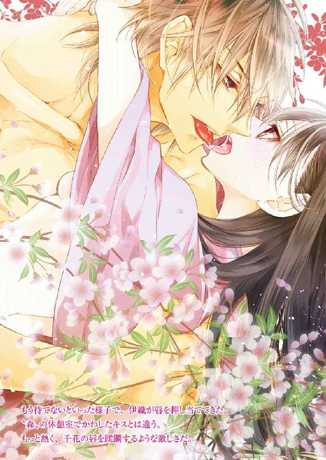
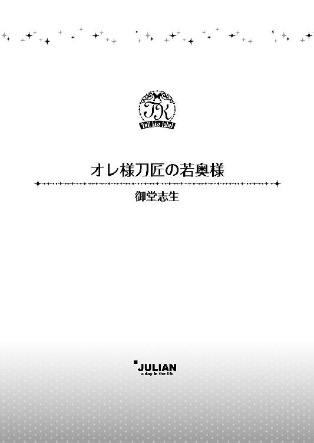
この物語はフィクションであり、実在の人物・団体・事件等とは、いっさい関係ありません。
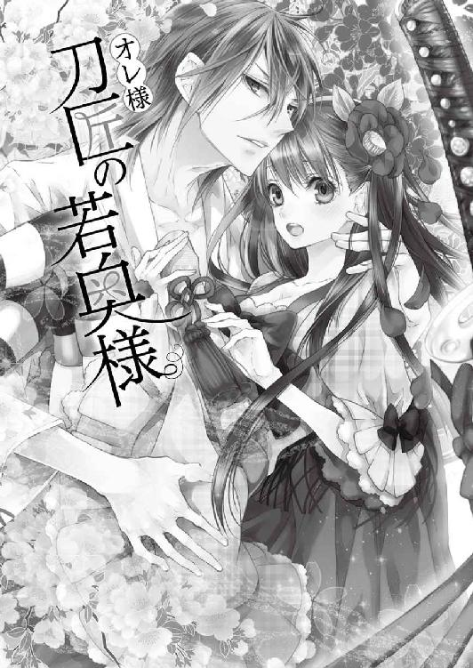
イラスト・すがはらりゅう
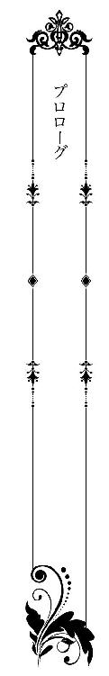
「この一文字派の〝影匡〟って人、十八歳の高校生のときに刀匠の資格を取ったんだって！ 史上最年少って書いてあるわよ。二十歳で、えーっと......なんとかって新人賞を取った天才だってさ。すっごいわよねぇ」
「今、二十四歳かぁ。写真があるじゃない。へーけっこうイケメン！」
後ろから聞こえてきた若い女性たちの話し声に、咲良伊織は身体を固くした。
半年ぶりの東京。拝み倒されて仕方なく引き受けた講演は、かなり盛況だった。
ただ受講者の多くは、近くにある工業大学の学生だったように思う。しかもその半数以上を女性が占め、講演後は後ろにいる女性たちのような会話をしていた。
〝備前、一文字、影匡〟──柄に隠れる茎に入っている刀銘は〝影匡〟と〝一〟の文字。さらには咲良家の家紋、櫻紋が刻まれていることから、咲良一門の打つ刀は〝櫻一文字〟の名で呼ばれている。
そしてこの〝影匡〟というのが、伊織の刀銘だった。
若い女性たちに自分の打った刀を見ながら、『けっこうイケメン！』と言われても嬉しくもなんともない。
（ギャラリーに来てるんだから、刀を見ろよ。イケメンが見たけりゃ、アイドルのコンサートにでも行ってくれ）
大きく息を吐きながら、伊織はキャップを目深にかぶる。
いつもの彼なら、神主のような白衣の上衣に藍色の袴姿だ。それが彼の普段着で、刀を打つときは作務衣に着替える。
だが今の伊織は、ジーンズに綿シャツの上からＧジャンを羽織るという、最近では滅多にしない格好だった。その上、だて眼鏡までかけているので、ばれることはないだろう。
講演が終わるなり、この服装に着替えたのには理由がある。
『お疲れ様でした！ 夜は銀座でパーッと飲みましょう。祖父上の咲良先生は酒豪ですから、伊織先生もいける口でしょう？ 先生のルックスで、〝天才刀匠、櫻一文字、影匡〟の名前を出したら、女の子はよりどりみどりですよ』
そんな戯言を、講演を企画した会社の社長に言われたせいだ。
伊織は控室に戻るとすぐにラフな格好に着替え、大学生に紛れるようにして講演会場を抜け出したのだった。
メールで『東京には泊まらない』『見送りも不要』と、講演の仲立ちをしていた刀剣協会の関係者に送り、伊織は近くの駅に向かって歩き出した。
二月の寒風吹き荒ぶ中を足早に歩きつつ、考えていたのは『コートを持ってくればよかった』ということ。温暖な瀬戸内に住んでいるため、東京のからっ風にはどうも馴染めない。
肩を竦めながら歩いていたとき、伊織の目に〝現代刀、名刀展示即売会〟と書かれた立て看板が飛び込んできた。
四階建てのビルの一階にある〝ギャラリーときわ〟。どうやら個人のギャラリーが主催のようだ。二階には〝骨董ときわ〟という店もある。
ギャラリーの正面は解放感に溢れた全面ガラス張り。そのガラスに貼られたポスターには目玉商品のように〝櫻一文字〟の刀が掲載されていた。
その刀は間違いなく、伊織が五年前に打ったひと振り。展覧会で新人賞を受賞した、刃長二尺三寸──約七〇センチの打刀だ。
彼はそのポスターに誘われるようにして、ギャラリーに足を踏み入れた。
広さ三十畳程度のギャラリー、照明は刀を目立たせるように抑えてある。三方の壁際にぐるりとガラスケースが置かれ、刀はすべてその中に展示されていた。種類は短刀、脇差、打刀、太刀まで、実に様々だ。
ポスターに載っていた打刀は最奥のケースに収められ、伊織のプロフィールとともに長い説明書きがついていた。
だが、彼の記憶に誤りがなければ、その打刀は〝櫻一文字〟の収集家が祖父、咲良辰吉に頼み込み、購入していったはずだ。金を積まれたくらいで簡単に手放すとは思えず、かといって、収集をやめたという話も聞かない。
近づいて真贋を確認したいのだが、その女性たちを押しのけて行く気にもなれず......。
諦めてギャラリーから出ていこうとしたとき、にわかに信じがたいほど、伊織を侮辱する言葉が聞こえてきた。
「ねえねえ、本当にこの人が作ってると思う？」
「飛び抜けて若いんでしょ？ おじいさんも刀匠で人間国宝って書いてあるし......客寄せで孫が作ったことにしてるんじゃないの？」
女性たちは声を揃えて「そんなもんだよねー」と笑った。
この手の揶揄は、これが初めてというわけでもない。面と向かって言われたこともある。インターネットが広まった昨今では、彼女たちのような意見をさも真実のように書かれることも少なからずあった。
むきになって否定するつもりも、釈明する義務もない。
だが、平然と受け止められるだけの度量も、今の伊織にはなく......。彼はこぶしを握りしめながら、グッと奥歯を噛んだ。
そのときだ。
「そんなことありませんよ！」
どこから現れたのだろう。ふわりと漂う石鹸の香りとともに、制服姿の少女が伊織の横を通り抜けた。
「わたしのおじいちゃんが岡山の鍛刀場まで行って、咲良先生が刀を打つところを見学させてもらったそうです。まだ十代なのに見事な腕前だったって、何度も聞かされました！」
突如現れた少女は、懸命に伊織のことを庇い始めたのだ。
その言葉の内容にも驚いたが......。
金のボタンが目立つ紺のブレザーに赤いチェックのプリーツスカート、白いブラウスの襟元にはスカートと同じ柄のリボンが揺れている。学校帰りだろうか、少女に化粧っ気は一切ない。頬はふっくらとしていて、真珠のようになめらかな肌だ。さっきの石鹸の香りは、左右に分けてゴムで結んだだけの黒髪から漂ってきたものらしい。
その無垢で純粋な姿は、荒仕上げを終えたばかりの、美しさを内に秘めた刀身のように感じられた。
「客寄せで言われてるわけじゃなくて、本当に凄い人だそうです。なんでも、備前の古刀に多い〝映り〟を出せる方だとか......えっと、それがどういうものか、わたしにもよくわからないんですが......。でも、それが凄くて天才って言われてて......あの」
制服姿の少女は握りこぶしを作って力説を続ける。
だが女性たちは、そんな少女のことを小馬鹿にしたように笑いつつ、「もう行こうよ」と小さな声で言い合い、少女を無視するように出て行った。
ギャラリーの中はしんと静まり返り、伊織と少女のふたりきりになる。
居心地の悪い静寂が広がり、伊織は少女から視線を逸らす。庇ってくれた少女に感謝を伝えたいが、素性を知られたら、後々面倒なことになりそうだ。
あの女性たち同様、さっさと引き揚げたほうがいい、と思うのだが......。
どうにも出口に向かう気にならず、ふと周囲を見回したとき、片隅に置かれたテーブルの上にポツンと飾られた短刀が目に留まった。
刃長は約二十五センチ、拵え──鞘や柄など外装部分は専門の職人の手が入っている。だが、刀身は素人の手によって作られたものに見える。
彼は反射的に手を伸ばしそうになった。
「あっ、待って！ 危ないから、触らないで！」
先ほどの少女の声だ。
伊織が振り返ると、少女は慌てた様子で頭を下げた。
「すみません！ 気を悪くなさらないでください。わたし、このギャラリーの娘なんです。父が上の店で接客しているので......よかったら、ゆっくりご覧になっていってください。父が戻ったら、気に入ってくださった刀は実際に触っていただけると思うので......」
「奥にある〝櫻一文字〟も？」
「いえ、あれは......。岡山のコレクターさんから特別にお借りしたものなので、売り物じゃないんです。ガラスケースから出すことも、ちょっと──ごめんなさい」
少女は本当に申し訳なさそうに言う。
苛めるつもりはなかったのだが、
「なるほどね。〝影匡〟はともかく、〝櫻一文字〟は客寄せなわけだ」
つい、意地悪な言葉が口をついて出てしまう。
絶句してうつむく少女を見て、伊織は心の中で舌打ちした。
（そうじゃないだろう。ったく、俺は何を言ってるんだ）
自分の未熟さが実に腹立たしい。
「えーっと──これは、素人の打ったものだな。はだか焼きでそれなりの刃文は出てるが、焼きが甘くて硬さが足りない──だが、守り刀としてはいいものだ」
伊織は失言をごまかすべく、短刀に視線を戻した。
「え？ どうして、そんなことがわかるんですか？」
少女はふいに顔を上げ、伊織をまじまじと見ながら尋ねる。
（まあ、そうだよな。ジーンズ姿の大学生みたいな男が、急に刀について語り始めたら......胡散臭いって思うよな、普通）
納得しながらも、しだいに輝き始める少女の視線に、飛び跳ねるような鼓動を感じつつ、彼は咳払いをひとつした。
「あーいや、難しいことは俺にもわからないけど。この短刀からは、作り手の魂を感じたんだ。誰かを守りたいという真摯な願い、とでも言えばいいのかな。とにかく、守り刀はそれでいいと思う」
正体を曖昧にしたままの返答は、巷に溢れる『似非スピリチュアリスト』のようだ。
（〝魂を感じた〟とか、女子高生相手に言うことか？ どう考えても怪しさ倍増だな）
ビクビクしながら、伊織はあらためて少女の顔を見る。
すると、少女は見る間に頬を赤らめ、瞳にうっすらと涙を浮かべたのだ。
「お、おい、俺は、別に......」
一瞬、泣かせてしまったと思い、伊織の鼓動はさらに速くなる。
だが少女の表情をよくよく見ると、伝わってくるのは〝感動〟だった。
「嬉しいです......。あ、これってわたしのおばあちゃんの父親が打った刀なんです。刀匠になりたくて弟子入りするはずだったけど、戦争もあって諦めたらしくて......」
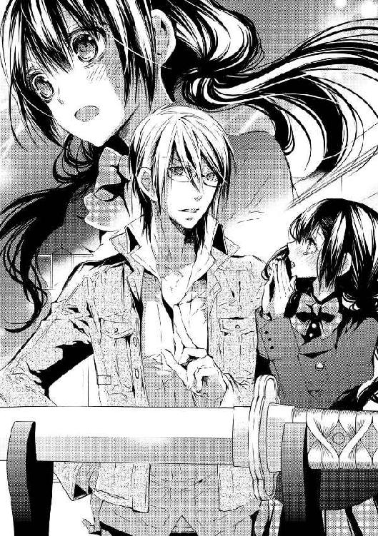
少女は自分の曾祖父について語り始めた。
彼女の曾祖父は出征が決まったあと、知り合いの刀匠に頼んでひと振りの短刀を打たせてもらった。半年先に生まれてくるはずの我が子に、守り刀として残していくために──。その子供が少女の祖母で、昭和十四年の生まれだという。
明治のころに出された〝帯刀禁止令〟で、刀匠のほとんどが仕事を失った。戦時中の軍用刀は量産目的で改良され、日本刀の伝統的な工法で作られていないものがほとんどだ。第二次世界大戦後は武器等の製造が禁止され──その数十年間は刀匠受難の時代と言われている。
少女の祖母はちょうど第二次世界大戦がはじまった年に生まれている。
「結局、おばあちゃんの父親は戦争から帰ってこなくて......。おばあちゃんはずっとこの守り刀を大切にしてました。だから、おじいちゃんもお店の神棚に飾ってたんですよ。でも、ふたりとも亡くなったら......素人の作品に価値はないって、言い出して。まあ、商品的な価値は、ゼロなんでしょうけど」
そのニュアンスから、『価値はない』と言ったのは、店を継いだ少女の父親に違いない。
「刀の価値はそれを手にした人間が決めるものだ。君にとってこの守り刀は、〝櫻一文字〟より価値のあるものだろう？」
「はい！ わたしがお嫁にいくときは、これを持っていくつもりです。娘が生まれたら受け継いでほしいな......って、やだ、わたしったら、変なこと言ってすみません」
少女は目元を拭いながら、照れくさそうに笑った。
その笑顔を見た瞬間、伊織の口から出てきた言葉は......。
「守り刀は代々受け継ぐものだから、別に変なことじゃない。でもこれは、嫁入り用には少し長いな。俺が──」
打ち直すか、嫁入り用には新しい懐剣を打ってやろう。
そう言いかけて、伊織は息を呑む。
（俺は......いったい、何を言おうとしてるんだ？）
伊織の打った刀より、曾祖父の打った守り刀のほうに価値を見出すことのできる少女。彼女なら、伊織の価値も正しく評価してくれる気がする。
その思いは、なんの前触れもなく伊織の心を動かす──恋という感情だった。
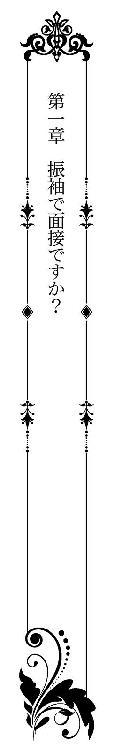
一年前の春、常盤千花は受験したすべての大学で桜が散った。
両親は一年くらい浪人しても大学に入るべきだと言ったが......。
そもそも、大学進学は両親の希望だ。失敗した時点で千花に進学の意思はなくなっていた。それくらいなら、いずれ実家の骨董店を継ぐための勉強がしたい。千花はそう言って、三年前に亡くなった祖父、幸二郎の親友がやっている古美術店で働くことに決めた。
そして、日本橋にある〝若村古美術〟に勤めて一年。
店主の若村大助は祖父と同じ歳で、今年七十八歳だ。祖父とは、国民学校に入学したときからの七十年来の付き合いだったという。
〝若村古美術〟 は刀剣類を中心に扱う古美術商だ。店舗は賑やかな場所にあり、規模はそう大きくない。全体の半分くらいが日本刀の展示スペースになっていた。
若村の店に比べれば、実家の〝骨董ときわ〟は都心から少し離れた目黒にあるため、店舗はかなり広い。一階には自前のギャラリーがあるくらいだ。
扱う品は、日本画に掛け軸、陶磁器、漆器、茶器から古民芸まで、実に幅広かった。
もちろん刀剣類も扱う。昨年の二月には若村の協力を得て、現代刀の展示即売会を開催したこともあった。
（おじいちゃんはあらゆる骨董の目利きだったもんね。でも、日本刀は好きなくせにあまり置いてなかったなぁ。お父さんの代になって、扱う数は増えたけど......）
だが残念なことに、娘の目から見て父、篤人に祖父ほどの骨董を見る目はない。
それもそのはず、父は長い間小さな冷凍食品会社で営業をしてきた人だった。本人も定年まで、同じ会社で働き続けるつもりでいたという。
ところが長引く不況で六年前に会社が倒産。
四十代では再就職もままならない。しかも失業中に祖母、みかが亡くなり......両親は祖父との同居を申し出た。そして、父は祖父の骨董店を継ぎたいと言い出したのである。
十代のころは骨董商を嫌い、高校を卒業して就職すると同時に家を出た父。
祖父にもいろいろ言い分はあっただろう。しかし何も言わず、祖父は息子一家との同居を受け入れてくれたのだった。
その理由は簡単だ。千花の母、恵里香も、父と同じ会社で働いていたせいだった。
千花の両親は社内結婚だ。アットホームな会社で、子供も千花ひとりだったため、母は寿退社せず、ずっと同じ会社に勤めていた。
だがそのせいで、会社の倒産は一家の財政を直撃したのだ。
給料はいきなりゼロ、いろいろな名目で積み立てていたお金も戻らず......。
倒産がきっかけとなり、それまで放任主義だった両親の千花に対する態度がころっと変わった。
（退職金ももらえなくなって、ショックだったのはわかるんだけど......。だからって、就職に有利な大学を出て、大手の企業に入るか公務員になれって、突然言われてもねぇ）
両親が共働きで家に帰ってもひとりだった千花は、小学生のころから毎日のように祖父の骨董店に出入りしていた。両親と千花の住むマンションと、祖父の骨董店兼住宅が同じ町内だったため、千花ひとりでも行き来しやすかった。
当時は祖母も元気だったので、千花は〝おばあちゃん子〟であり、〝おじいちゃん子〟でもあった。
高校を卒業したら祖父の弟子になりたい。修業して祖父のような目利きになり、千花が〝骨董ときわ〟の二代目になる。
そう宣言したのは、千花が中学に入ったときのこと。
両親はいい顔はしなかったが、とくに反対もされなかった。祖父には、『期待はしないでおこう』と笑って聞き流された。手放しで喜んでくれたのは祖母だけだったが、千花は百パーセント本気だった。
しかし人生というのは、そう思いどおりにはいかないものだ。
両親の働いていた会社の倒産だけでなく、中学二年生のときには、千花のことを応援してくれた祖母が亡くなった。
そしてその三年後、高校二年生のときには祖父まで呆気なく逝った。
千花に何ひとつ教えてくれることなく......。本当に期待されていなかったのか、それとも、本当は楽しみにしていてくれたのか、それすらも伝えてはくれなかった。
それでも、自らの意思でこの道を選んだ。
まずは、若村のもとで主に刀剣についての修業を積む。次に、祖父が気に入ってよく取り扱っていた古民芸を学ぶため、専門の骨董商に推薦してもらう。それを重ねていって、父が現役をリタイヤする前に、千花に〝骨董ときわ〟を任せてもらえるだけの目利きになろう。
密かに、そんな計画を立てていた。
ところが......。
「ごめんな、千花ちゃん」
四月の第一週、出勤するなり、開店前の店内で若村に頭を下げられた。
「いきなり、どうしたんですか？」
「急な話で悪いんだが、今月いっぱいで店を閉めることにしたよ。休業も考えたんだが、歳が歳だからね。ここできっぱり廃業しようと思う──」
若村の言葉に千花は目を見開いた。
今年の初めころ、若村から『妻の体調が優れない』という話は聞いていた。病名は若村が口にしなかったので、千花もあえて尋ねなかった。
どちらにせよ、病状はあまり思わしくないという。
若村夫婦には子供がいない。後継者がいないのだから、そう遠くない将来、店は廃業しようと思っていたと話す。
「幸二郎とは長い付き合いだったから、千花ちゃんのことは孫娘のように思っていた。私の知ってることを全部教えて、千花ちゃんを他の店に送り出すまで頑張るつもりだったのに......本当に申し訳ない」
何度も頭を下げられ、逆に千花のほうが恐縮する。
「そんな、謝らないでください。わたしがお父さんと喧嘩して、外で修業するからって実家を出ようとしたとき、間に入ってくださったのは店長なんですから」
若村は、自分の店で修業すればいい、と言ってくれた。
刀剣類が中心になるが、千花の祖父は日本刀が好きだからこそ、商売ではあまり扱おうとしなかっただけだ。千花が学んでも、決して損にはならない、と。
ただし、両親とは仲直りして、実家から通うこと。
そんな条件をつけられ......。だがそのおかげで、両親との仲が修復不可能なほどこじれずにすんだ。
「おばさんのことは、亡くなったおばあちゃんと同じくらい好きです。だから、おばさんが元気になるように、一緒にいてあげてください」
ここ数年で大好きな祖母と祖父が立て続けに亡くなった。若村夫妻も同じ年代なので、千花はそのことが不安でならない。
ただ、自分のことも心配なのはたしかだ。
骨董の世界は玉石混淆、品物だけでなく......関わる人間も、目利きからペテン師まで様々だった。紹介状がなければ、信頼のおける店では雇ってもらえない。
常盤幸二郎の孫、という肩書きだけでは無理なのだ。
その証拠に、祖父が亡くなったとたん、父は骨董商として苦戦を強いられていた。
「できれば、店長のほうからどこかの骨董商を紹介してもらえたら、もちろんバイト料はいくらでも構わないんで......」
千花が控えめにお願いすると、若村はハッとした顔で膝を叩いた。
「そうだ！ すっかり忘れてた。刀剣協会の会長さんから、千花ちゃんに頼みたいことがある、と言われてたんだ」
「刀剣、協会ですか？ その会長さんが、わたしに何を？」
〝若村古美術〟が加入している協会だが、その会長と全く面識がない。頼みごとの内容など見当もつかない。
「うん、そうだ。千花ちゃんは、備前の刀匠で人間国宝の咲良辰吉先生は知ってるだろう？」
若村の問いに千花は即行でうなずく。
だがそれとは別に、咲良の名前を聞いた瞬間、胸がドキッとした。
（いやいや、別に〝櫻一文字〟の関係者ってわけじゃないんだから......全然関係ない人かもしれないし）
去年の展示会で出会ったひとりの男性の姿が脳裏をよぎり、千花の鼓動はなかなか静まらない。
「その咲良先生が、千花ちゃんのことをどこかで目に留めたらしくて、ぜひ、備前まで来てほしいとおっしゃってるそうなんだ」
「......は？」
「いやあ、羨ましい！ 幸二郎の奴が生きてたら、千花ちゃんについていったかもしれんなぁ。奴も好きだったからな〝櫻一文字〟が」
それは千花も知っているが、今の問題はそこではない。
人間国宝といった雲の上にいるような人物が、どこで千花を見たのだろう？
さらには、備前まで呼んで彼女に何をさせたいのか？
（凄い刀匠の先生に呼ばれて行くってことは......弟子入り？ いや、まさか......女の刀匠はいないって聞いたような......？）
考えれば考えるほどわからない。
「ちょっと待ってください。備前まで行って、わたしにできることってありますか？ 日本刀って見るのは好きだけど、自分で作るなんてことは、考えたこともなくて......」
「いやいやいや、弟子とかじゃないんだよ。今はもうお歳で、新しいお弟子さんは取っておられないそうだしね。千花ちゃんが骨董商のお嬢さんだと知っておられたから、おそらくは......所蔵品の目録作りかもしれないな。なんといっても三百年近く続く家系だから、相当なものが蔵に眠っているだろう」
その説明に千花の胸は一気にざわめく。
正確に骨董品の年代や価値を見極めて、目録を作成するだけの経験と知識は......残念ながら、今の千花にはない。
だが咲良辰吉ほどの人物が、それに思い当たらないわけがなかった。
（ひょっとしたら地元の骨董商がいらっしゃるのかも。そのお手伝いにってことなら......わたしにもできそう！）
千花は一気に目の前が開けた気分になる。
「組合長さんからは、常盤さんに話を通してくれと言われたんだが......。千花ちゃんはこの間二十歳になったんだよね？」
「あ、はい。四月四日生まれですから」
「じゃあ、ご両親の許可がなくても平気だ。君が自分で決めてから、ご両親を説得したほうがいいだろうから、まずは千花ちゃんに話そうと思っていたら、すっかり忘れていたよ。やっぱり歳だなぁ......ここらが潮時という証拠かな」
若村は上品な白髪に覆われた頭をポンポン叩きながら、しみじみとした口調で言う。
千花は胸にじんわりと広がる温もりを感じつつ、姿勢を正して、ゆっくりと頭を下げた。
「いろいろ気を遣ってくださり、ありがとうございました。──咲良先生にもお会いして、仕事の内容も聞いてから、ちゃんと考えてお返事したいと思います」
千花の心は七割方〝備前行き〟に傾いていた。だが疑問に感じる部分は本人に尋ね、納得した上で承諾するほうがいい。
そして、すべてを決めてから両親に話そう。
自分の心が揺らいでいる状態で、誰かを説得するなど無理な話だ。
千花がその気持ちを若村に告げると、
「ああ、ああ、それが一番だ。ご両親が引き止めるようなら、私も一緒にお願いしよう。元はと言えば、うちが廃業を決めたせいなんだからね。だが、備前と言えば日本刀だけじゃない。備前焼の窯元もあるぞ」
最後の言葉に、千花はぐいっと背中を押された気分だった。
☆ ☆ ☆
四月下旬、千花は文京区にあるラグジュアリーホテルを訪れていた。
咲良家との簡単な顔合わせ、と言われたが、実際のところは面接に相当するものだろう。
ただ、気になることがひとつ。今回仲立ちになってくれた刀剣協会の会長から千花に直接、『先方様の希望で、今日のところは、常盤さんのご両親には同席をご遠慮願いたい』と電話があった。
普通、仕事の面接に親を連れて行くだろうか？
（特殊な家柄だってことはわかるんだけど......『今日のところは』っていうことは、次は親とも話して、身元をはっきりさせておきたい、とか？ ......うーん）
両親には、千花が仕事で備前に行くかもしれない、ということは話していない。
だが〝若村古美術〟が四月いっぱいで閉店することは、すでに両親の耳にも入っていた。千花が話さなくても、同業者が廃業するという噂はすぐに広まるものだ。
母はこれ幸いとばかりに、
『骨董の修業は一旦やめて、専門学校にでも入ってみない？ 就職して、結婚、出産して、人生の目途がある程度ついてから、それでもやりたいと思ったら始めればいいじゃないの』
去年さんざん話し合ったことを、また蒸し返してきた。
そんな状況で、東京から七百キロメートルも離れた土地に仕事で行くことになるかもしれない、とは言えない。しかも、仕事の内容も期間もよくわからない、なんていう説明で納得してもらえるはずがないだろう。
千花自身も同様だ。期待に胸を躍らせる反面、同じだけの不安も抱えていた。
思わず、はあーっと大きく息を吐く。
「胸の辺りが苦しいですか？ それほどきつく締めてはいないのですが？」
帯と着物の間に手を入れ、ほんの少し隙間を作りながら、着付け師の女性が千花の顔を覗き込んでいる。どうやら、ため息の原因を誤解したらしい。
彼女は今、ホテルの美容室で振袖を着せてもらう最中だった。
「あ、いえ、違います。全然苦しくないですから......すみません」
面接にはごく普通の、いわゆるリクルートスーツを着るつもりでいた。
ところが数日前に若村から連絡がきて、意外なことを言われたのだ。
『会長さんからね、まさか洋装では行かないと思うが、ちゃんと和装──振袖を着て行くよう念を押しておいてくれ、と言われたんだけど......何か聞いてるかな？』
和装が当たり前のように言われ、千花はびっくりした。
家に着物はたくさんある、が......彼女は自分で着ることができない。
祖母が和装を好んでいたため、桐の箪笥ひと棹に着物や帯、和装小物など、いっぱい遺してくれた。本当はもうひと棹あったのだが、手入れが面倒という理由から、祖父が亡くなったあと半分に減らされてしまった。
そういった両親の、とくに母の気持ちはわからないでもない。
祖母の遺品の中には、祖母自身の着物とは別に、千花のためにと用意しておいてくれた振袖や付け下げ、小紋などが何着もあったのだから。
冠婚葬祭以外に着物を着ない母にすれば、面倒この上ないことだろう。
『着物を買い取ったときは決まって......これなら千花に似合いそうだと、ばあさんが嬉しそうに取り分けていたな。しょっちゅう手入れして、一緒に歩くのが楽しみだ、と言ってた』
亡き祖父からそんな話を聞かされたとき、千花は申し訳なさに居た堪れなくなったことを覚えている。
小学生のころ、祖母から正月に着物を着せてやると言われても『動きにくいから嫌』と言って断っていた。こんなことなら、何度も着物を着せてもらい、ついでに着付けも習っておけばよかった。
まさに後悔先に立たず、の見本だろう。
面接前日に急遽、予約の電話を入れ──千花は振袖と着付けに必要な小物ひと揃いを、そっと祖母の箪笥から持ち出し、ホテル専属の美容室に駆け込んだのだった。
「さあ、できましたよ。──まあ、よくお似合いですこと。京友禅の落ちついたクリーム色に淡くピンクのぼかしが入って、お若いお客様にピッタリですわ。古風な手鞠柄も、可愛らしさをいっそう引き立てて......。素晴らしいお着物に負けない華やかさをお持ちで、羨ましい限りです」
四十代後半から五十代前半、母と同じ年代に見える着付け師の女性は、満面の笑みを浮かべて千花を絶賛する。
だが、こんなふうに容姿を褒められたことは一度もなく、千花は身の置き所に困った。
「きっと、お相手の方もイチコロですわね！」
「え？ あ......いえ、それは......」
彼女は千花がお見合いのために振袖を着たと思っているのだろう。
その誤解を解こうかとも思ったが......。
（でも、こういう一流ホテルで振袖って聞いたら、普通はお見合いだよね。誰だって仕事の面接とは思わないよ。特殊な方からのご依頼で......なんてとこまで説明するのもなぁ）
千花はとりあえず、笑ってごまかすことに決めたのだった。
履き慣れない草履をパタパタと音をさせ、千花はようやく指定されたロビーラウンジの前にたどり着いた。
だが、約束の十五時を三分ほど過ぎてしまっている。
美容室でお願いしたのは着付けのみ、ヘアメイクまでは頼まなかったので、自分でなんとかしていると予想以上に時間がかかってしまった。
髪は胸が隠れる辺りで切り揃えているだけだが、毛先がナチュラルな内巻きになっている。一本一本が細い上に柔らかくて、パーマをかけてもあっという間に取れてしまう。傷みやすいので染めたこともなく、風に吹かれるだけで縺れるという、非常に厄介な髪質だった。
いつもは髪留めでざっくり纏めているだけだが、今日はレイヤーのかかったトップの部分だけを残し、後ろで纏めて和装の髪留めでアップにした。これで普段よりは二、 三歳年長に見えるはずだ。
（いくら咲良先生からのご指名とはいえ、実際のわたしを見て『若過ぎて無理そう』とか思われたくないもの）
この髪型に決めるまでさんざん迷った。
面接に振袖を着てくるように言われた理由が、今ひとつ釈然としないせいだ。髪型だけでなく化粧にも迷ってしまい、結果、余分な時間がかかってしまった。
（でも、広過ぎるわよ、このホテル。ロビーラウンジっていうから、ロビーのすぐ横だろうって思ってたら......廊下を歩いても歩いても、全然見えないんだもの）
ロビーラウンジの場所はホテルマンに聞いた。廊下を指して、『まっすぐお進みください』と言われ、そのまま歩いてきたのだから間違うはずがないのだ。
それでもあまりに見えてこないので、無意識で曲がったのかもしれない。あるいは、狐にでも化かされているのかも......と真剣に思ったくらいだ。
ラウンジの入り口にある階段を前にして、千花は呼吸を整える。
草履を引っかけて転ばないように、一歩一歩慎重に上がりきったとき──千花の目に、大きな窓一面に見える緑が飛び込んできた。
（窓の外、めちゃくちゃ広い純和風の庭園って感じ？ 都心にこんな緑の多い場所があったなんて、知らなかった）
千花はその景色に感動を覚える。
そして同時に、自分の存在を恐ろしくちっぽけなものに感じてしまったのだ。あまりにも場違いな気がして、呆然と立ち尽くすことしかできない。
こんな素晴らしいホテルのロビーラウンジで、振袖を着て顔合わせをするのが普通──というような立場の人に、雇ってもらうなど無謀過ぎるのではないか、と。
（か、帰ろうかな......）
心の中で臆病風がビュービュー吹き始めたとき、千花は自分に近づく人の気配に気づいた。
「失礼。常盤千花さん？」
「はっ、は......い」
すぐに返事をしようとして、相手の顔を見るなり、予想とまるで違っていたことに声を詰まらせた。
千花の目の前には薄水色の訪問着を着た女性が立っていた。
流れる滝と松が描かれた、とても繊細で優美な、まるで一枚の絵を見ているような柄の訪問着だ。彼女自身の動作も優雅で、普段から着物を着慣れていることがよくわかる。
面長で鼻筋の通った美人だが、目尻が上がっているせいだろうか、目力が半端なく強い。その感覚に拍車をかけるのは、彼女の身長だった。千花は一六五センチあるので決して低いほうではないが、彼女は千花より一〇センチは高そうだ。彼女がスーツを着てハイヒールを履いたら、男性でも威圧感を覚えると思う。
身長はともかく、純和風ないでたちと違って、髪をアッシュブラウンに染めていることは意外だった。
ただ、千花より少し長い髪を右肩でひとつに纏め、白い和紙で結ぶ──というヘアスタイルは、不思議と着物に似合っている。
そんな彼女が醸し出すオーラに圧倒され、千花は口をあんぐりと開けたままだ。
一方、彼女のほうは、
「ふーん、あなたが常盤千花さん、か」
独り言のように呟き、興味津々といった顔をした。
彼女の楚々とした容姿からは想像しにくいハスキーボイスをふたたび耳にして、千花はハッと我に返る。
「あの......失礼ですが、咲良先生の？」
「ああ、ごめんなさい。ご挨拶が遅れました、咲良成実と言います。来てくれて本当にありがとう。どうぞ、末永くお付き合いくださいね」
ふいに相好を崩し、成実が手を差し出してきたので、千花も深く考えずにその手を握り返した。その手は身長に合わせてけっこう大きい。だがとてもしなやかに動き、繊細さを感じられる長い指だった。
「こ、こちらこそ......えっと、咲良......さん、ですか？」
「ええ、私は彼のイトコで......あれ？ 伊織、さっさとこっちに来なさい！」
彼女は振り返り、少し後方に立っていた男性に声をかけた。
そこには黒に近いグレーのスーツを着た男性がひとり。シャツは薄いグレー、黒っぽいストライプのナロータイを結んでいる。
彼が着ているスーツ自体は、都内を歩いているビジネスマンと大差ない。
だが、醸し出す雰囲気が全然違う。黙って立っているだけなのに、男性から感じるのは鋭く研ぎ澄まされた気配だった。
彼は成実に「早く！」と急かされ、仕方なさそうにこちらに向かって歩いてくる。
その男性の姿は千花の五感を刺激した。
一瞬で彼から目が離せなくなり、一歩近づくごとに、トクントクンと彼女の胸の高鳴りはペースを速めていく。
「──咲良伊織だ」
「さ、咲良、さん？」
彼の声に既視感を覚える。
以前、会ったことがあるような、聞いたことがあるような声──甘酸っぱい記憶とともに、一年前に閉じた胸の抽斗が、ガタガタと音を立てて開いていく。
「あの、あの......あなたは......刀匠の」
〝櫻一文字、影匡〟その名を口にしようとしたとき、彼の口から思いがけない言葉が飛び出した。
「でもまさか、本当に来るとは思わなかった」
「......は？」
その呆れたような口ぶりに、千花は胸の高ぶりを押さえ込まれた気分だ。
別に、千花のほうから頼み込んで会ってもらったわけではない。呼ばれたから来たのだ。そんな思いに千花の表情は曇る。
第一、肝心の辰吉がいないのはどういうことだろう。
「それって、来ないほうがよかったって意味ですか？」
つい、険しい声が出てしまった。
「え？ あ、いや、それは......」
「ご迷惑なら、わたしはこのまま帰らせていただきますけど」
千花がそう答えた直後、伊織の隣に立っていた成実が、彼の頭をゴツンと殴った。
「伊織！ あんたって奴は......この期に及んで何、馬鹿なこと言ってんの。人の親切を無にしたら、ただじゃすまさないからね！」
成実の言葉に彼は頭を撫でながら、「わかってるさ」と短く答えている。
「あ、あの......わたしは、どうしたら？」
「ああ、この男が妙なことを口走っても、気にしないでくださいね。もちろん、今日中に返事をもらおうとは思ってないから。とりあえず、伊織といろいろ話してみてくれる？ まずは、それからってことで......どう？」
どう、と言われても......わかるような、それでいてよくわからないような説明だ。
千花は少し迷ったあと、
「咲良先生は、どうお考えなのでしょうか？」
「辰吉爺様？ もちろん大賛成に決まってるじゃない。本当は一緒に来たかったみたいだけど、この伊織が嫌がってね」
成実は口元を押さえ、クスクスと笑い始めた。
それを見た伊織のほうが血相を変える。
「成実!! 余計なことを言うな。必要なことは、俺が言う」
「ホントに言えるのかな？ ねえ、伊織センセ」
そう言ったあと、成実は伊織の肩にそっと手を当てた。彼女は少し背伸びするようにして、彼の耳元に唇を寄せ......。
千花には聞こえない声で何ごとかささやいている。
（なんだか、割り込めない空気が漂ってる......。でも、イトコって言ったよね？ あ、イトコって結婚できるんだっけ？ じゃあ、恋人同士でも変じゃないのか）
並んで立つふたりは悔しいくらいにお似合いだ。
千花は自分が邪魔者に思えてきて、どうにも居心地が悪い。
「千花さん──そう呼んでいい？」
ふたたび成実に名前を呼ばれた。いつの間に伊織の傍から離れたのか、彼女は千花の目の前までやって来ている。
「あ、はい。それはかまいませんが......」
「じゃあ、私のことは成実と呼んでちょうだい。なんと言っても、今の一文字派の半分以上が咲良家の人間だから。......じゃあ、あとはよろしく」
思わせぶりに微笑んだあと、成実は颯爽と身を翻して立ち去っていく。
残されたふたりの間には、なんとも言いがたい気まずい空気が流れていた。
（よろしく、って言われても、何を話せばいいわけ？）
伊織のほうから聞いてくれないことには、何を話せばいいのかもわからない。
千花が何気なく周囲を見回したとき、ロビーラウンジの入り口近くに置かれた立て看板に気がついた。
「あっ......」
写真が掲載されていなかったので、パッと見たときは気づかなかった。そこには『〝櫻一文字〟新刀、新々刀、現代刀展』の文字がある。
入場無料のギャラリーで、展示されている点数は少ないようだ。だが、新刀と呼ばれる初代〝影貞〟の逸品があるとなれば、千花も興味が湧いてくる。
「──見にいってみるか？」
「いいんですか？」
千花の声は一瞬で華やいだ。
「おまえがいいなら、俺はかまわない」
若い男性から『おまえ』といった呼ばれた方などしたことがない。びっくりして、胸の奥に不思議なこそばゆさを感じた。
うなずく千花を見て、伊織は「こっちだ」と短く答え、さっさと歩き始める。
急いであとを追おうとしたとき、階段で草履が脱げそうになり......。
「えっ？ あ......きゃっ！」
ほんの五段程度の階段ではあるが、着物姿で踏み外して落ちたら、生傷だけでは済まないだろう。
何かに摑まろうと、必死で伸ばした手は虚しく空を切る。
その直後だった。大きくて逞しい手が彼女の手を包み込むように摑み、そのまま一気に引き寄せられた。
気がついたときには、千花は伊織の腕に抱きしめられていたのだった。
「何を慌ててるんだ。その格好で転んだら、注目の的だぞ」
「すっ、すみません」
慌てて謝って、千花は彼から離れようとする。
だが、そんな彼女の手を伊織はぎゅっと摑んだまま、離してくれない。
（ど、ど、どう、しよう。なんて、言おう）
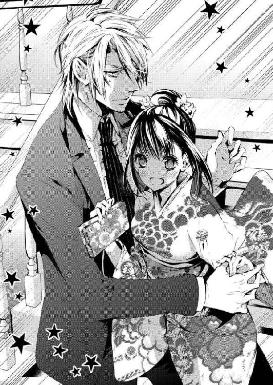
成実が見上げていただけのことはあり、伊織の身長は一八〇センチ以上あるのではないだろうか。武骨そうな首筋から頬のラインに比べ、目元はずいぶん涼しげだ。
きゅっと引きしめた口元が動き、何かしゃべりだしてくれるのを待つが......。ふいに、伊織がこちらを見下ろしたのだ。
ふたりの視線が絡み合い、息苦しいような時間が過ぎる。
「あ......の、咲......いえ、伊織、先生......」
千花がどうにか声を押し出すと、伊織の顔が一瞬で真っ赤に染まった。
つられて、千花の頬も熱くなる。まだ四月だというのに、振袖に包まれた全身がホカホカして暑くなってくる。
伊織の手が少し緩み、だが、すぐさま離したくないとばかりに摑み直した。
「ほら、行くぞ。転ぶとまずいから、手は離すなよ」
「......は、い」
うつむいたまま、彼の手をしっかりと握り返す千花だった。
ギャラリーはロビーラウンジと同じ階にあった。
ガラスの扉を開いて中に入る。そこは柔らかな光に包まれたスペースで、絵画などを展示するため、壁が多くなるように仕切られていた。
ひとつのガラスケースの中に、ひと振りの日本刀が収められている。そのガラスケースが一定の間を空け、壁際に整然と並べられていた。
〝ギャラリーときわ〟で行われた現代刀の展示即売会に比べると、展示されている刀剣の数は少ない。だが、質は段違いにこちらのほうが凄い。いや、刀剣に値段をつけるなら、桁違いと言うべきかもしれない。
入ってすぐ、壁際ではなく部屋の中央に展示されたガラスケースがあった。
そこには人間国宝である刀匠、咲良辰吉こと〝影克〟が約三十年前、ある神社に奉納した打刀が飾られていた。
「凄い......神社から借りてきたんでしょうか？」
「一度、奉納された刀は滅多なことでは持ち出されない。これは、師匠が保管していた影打だ。ほら、説明にも書いてある」
言われて説明書きに目を向けると、たしかに〝影打〟の文字があった。千花も聞いたことのある言葉だが、肝心の意味が思い出せない。
ここで知ったふりをしてしまえば、この先、きちんとした話ができなくなるのは必至だ。
千花はいっときの恥を忍んで、勇気を出して質問した。
「影打......って、なんでしたっけ？」
「真打はわかるか？」
伊織はとくに千花の返事に眉を顰めるでもなく、質問で返してきた。
真打なら千花も知っている。
奉納刀のような特別な依頼を受けて作刀するとき、刀匠は納得のいくまで打つという。その中から渾身のひと振りを決め、納める刀が──真打だ。
「その真打以外の刀を影打と呼ぶんだ。記念の意味もあってひと振りは手元に置くことが多い。ここにあるのは師匠が真打と迷って手元に残した影打だ」
ちなみに、個人の依頼でも二、 三振りは打つらしい。それらに刀銘は入っておらず、一般には流通していないようだ。
「じゃあ、パネルの写真が奉納された真打なんですね。でも......写真じゃ違いがわからないんですけど。両方を並べて見たら、わたしでもわかるような違いでしょうか？」
「そうだな......刃から三分の一くらいに波打つような刃文があるだろう？ この乱れ具合が奉納刀は揃っていて、こいつのほうは綺麗に出なかったらしい。俺は師匠らしい豪快さがあって、こいつも捨てたもんじゃないと思うんだけどな」
ロビーラウンジにいたときは短い言葉でしか返してくれなかったのに、刀を前にしたとたん、伊織は饒舌になる。
そんな彼の横顔に、いつの間にか、千花は見惚れてしまっていた。
「どうした？」
「あ、いえ、刀のことになると、いろいろ話してくれるんだなぁと思って。去年、うちのギャラリーに来てくれたときもそうでしたよね？」
千花がそう答えた瞬間、伊織は目を見開いた。
「......いつ、気づいたんだ？」
「やっぱり!! あ、えっと、ついさっきです。伊織先生って、変装して展示会とか行かれてるんですね。去年は大学生風で、今は......ビジネスマン風？ でも、白いシャツで普通のネクタイにしたほうが目立ちませんよ。ナロータイだと、休日のデート風に見えて......」
伊織は困ったように視線を彷徨わせ、前髪をかき上げている。
どうやら刀以外のことになると、無口になるらしい。
（お客さんにもいたっけ。大好きな骨董の話になると夢中でしゃべり続けるくせに、家では『飯、風呂、寝る』しか言わないって奥さんが愚痴ってた。伊織先生もそういうタイプなんだ）
千花は服装の話はやめにして、
「実を言えば、自信なかったんです。あのときは眼鏡をかけておられたでしょう？ 声は似てるなぁと思ったけど、もし違ったら、と。でも、刀を前にした伊織先生の顔、祖母の守り刀を見ていたときと同じ顔をされたから、思いきって言ってみました」
伊織が口を開いてくれるようにと願い、守り刀の話をしてみる。
すると、彼の頬がフッと緩んだ。
「おまえって、心に浮かんだことをそのまま口にするタイプだろ？ だったら、思いきらなくても一緒じゃないか？」
「そ、そういうわけじゃ......」
ない、とは言えないような気がする。
初対面の彼に、曾祖父が祖母のために刀を打った理由とか、詳しく説明してしまったことを思い出すと赤面ものだ。
古い物に囲まれ、両親より祖父母を身近に感じて育ったせいだろうか。千花はそういった品物にまつわる故事や来歴を聞くのが好きだ。わくわくするし、曾祖父の話を聞いたときは感動した。
だが、千花が学校のクラスメートにそんな話をしても『ふーん』とか『へー』といった生返事で終わった。中にははっきりと、『そんな話、聞きたくないんだけど』と言われ......それ以降、友人の前で骨董の話はしなくなった。
もちろん、全員が全員そんな態度を取るわけではないが、十代の女子にとって興味のない話題なのはたしかだろう。
千花が心の内に疎外感を抱えていたとき、その隙をつくように、彼女の身に最悪のことが起こる。
高校二年のとき、千花はクラスメートの紹介で他校の男子生徒とデートをした。彼は珍しく千花の話を楽しそうに聞いてくれ、自分の家にも代々受け継がれてきた骨董品がたくさんあるので見にこないか、と言ってくれたのだ。
初めて受け入れてもらえたことが嬉しくて、千花は浮かれた気持ちで彼の自宅を訪ねた。
ところが、男子生徒の自宅は骨董品とは縁のなさそうな三階建ての新築住宅。訪ねるなり家族は全員不在と聞かされ、千花の胸にわずかながら警戒心が芽生える。
直後、男子生徒は千花に襲いかかってきた。
そのときは幸運にも、予定より早く帰ってきた男子生徒の姉のおかげで、千花は逃げ出すことができたのだった。
紹介してくれたクラスメートに文句のひとつも言いたかったが......。
『せっかく彼が友だちを紹介してくれたのに、恥かかせられたって言われたよ。骨董おたくに付き合ってやったのにって、あたしが彼から怒られたんだから』
逆に、千花のほうが文句を言われた。
だが、理不尽なことに閉口したままやり過ごす千花ではない。
『エッチ目的で骨董品に興味があるふりをするなんて、馬鹿じゃないの？ そんな模造品みたいな奴に、付き合ってもらわなくてけっこうだって言っといて！』
それ以降、千花に男子を紹介しようとする友だちはいなかった。
千花にしても彼氏は欲しいし、素敵な恋もしてみたい。
恋愛をする上では必須とも言えるセックスにも興味はあるし、最低でも二十代のうちに男女交際のひとつやふたつは経験しておきたいと思っている。
（本当は十代で彼氏を作って、キスくらいはしておきたかったんだけどね......襲われたときにキスされそうになったのが唯一の経験なんて。なんか、情けない）
すぐ隣に立つ伊織のことを意識してしまい、少し距離を取ろうとしたとき、彼に手を摑まれたままということに気がついた。
「あ、あの、そろそろ、離していただいても、大丈夫かと」
「こんな刃物がいっぱいある場所で離せるかよ。おまえ、ドンくさそうだし......」
そう言うとぎゅっと握りしめた。
繋いだ手から伊織の熱が流れ込んでくる。トクトクトクと全力疾走でもしたあとのように、心臓が早鐘を打ち始める。
一年前にほんの少し会話をして、顔を合わせて二度目の男性。本来なら、手を摑まれた瞬間に振り払うべきだろう。
同じことをあのときの男子学生にされたとしたら──振り払うどころか、突き飛ばしているはずだ。
だが、伊織の手は振り払うことができない。なぜなら、彼の言葉には一年前も今も真摯な思いが籠もっている。
模造品......模造刀などでは決してない。彼は本物であり、それこそ真打だ。
（わたしにとっての真打、なーんてことあるはずない、か）
否定しつつも、繋がれたままの手に期待してしまいそうになる。
そのとき、ふたりの背後から声が聞こえてきた。
「あら、お見合いしたばかりのカップルさんね」
「いいわねぇ、初々しくて。上手くいきそうだし、親御さんもひと安心ね」
還暦を過ぎたくらいの上品そうな女性がふたり、こちらを見て微笑んでいる。うちの孫にも早めにお見合いを勧めたほうがいいかしら──などと言っているので、どうもお見合い当日に結婚を決めたカップルに見えているらしい。
まさか、わざわざ近づいて行き『誤解です』と言うほどのことでもないだろう。
「ああいう感じに思われてるとしたら......ちょっと、恥ずかしいですね」
「そうか？ 俺は気にならないが」
言葉を選んで『手を繋いだままだともっと誤解されますよ』と伝えたつもりだったが、どうやら全く伝わらなかったようだ。
それどころか、彼は手を握ったまま千花をグイッと引っ張った。
「ほら、来いよ。あっちだ」
「あっち？ あっちに何があるんですか？」
「今年の正月に打った新しい刀だ。おまえに見せてやろうと思って仕上げた、自慢のひと振りだぞ」
千花はその言葉に目を見開き、返事もできないまま彼について行く。
伊織は何を考えているのだろう？
こんな殺し文句を、どんな顔をして言っているのだろうか？
顔を見てみたいのに、ちらとも振り向いてくれない。
そして彼に連れて行かれたのは、ギャラリーの一番奥に置かれたガラスケースの前だった。
すぐ近くに、初代〝影貞〟の飾られたガラスケースもある。当初はそれを見たいと思っていたのに、今は『おまえに見せてやろうと思って仕上げた』という伊織の新しい刀が気になって仕方がない。
〝影匡〟の最新作とうたい文句のついた説明書きの下には、小ぶりな刀が艶のある輝きを放っていた。
「これは、短刀ですよね？ でも、祖母のより短いような」
「ああ、こいつは刃長約十五センチ。短刀というより懐剣だな。時代劇で女が帯に差してるヤツだ。──どうした？」
「いえ、こういう短いのも作るんですね。伊織先生は脇差より短い刀は作刀されないと聞いた気がして」
何かの雑誌で読んだだけなのでうろ覚えだが、依頼があれば別だが好んで作らない、とインタビュアーの質問に答えていたように思う。
「まあ、好きじゃないってだけだ。多少の苦手意識はあるけど、花嫁に持たせる懐剣を依頼されて、太刀を打って渡すわけにはいかないだろう？ ただ、今回は刃文に悩んだ」
伊織に言われて、千花はガラスケースの顔を近づけ、ジッと刃文をみつめる。
波打っているように見えるが、説明書きによれば、鋒に向かって流れる逆丁子と言われる刃文らしい。伊織の出す刃文は特徴的で、波というより炎のようだと言われている。
「前に見た、打刀と似てませんか？」
「そうだよ。結局、いつもと同じにしたからな。本来、花嫁に持たせるのは刃文がまっすぐの直刃にするんだ。波打つように見えるのは乱刃と言って、花嫁が持つにはふさわしくないと言われている」
「どうしてですか？」
「結婚生活に乱れがないように、ってことらしいな」
伊織の説明に、千花は心の底から感心する。
そのとき、ふいに彼が顔を近づけてきた。彼女と一緒になってガラスケースの中を覗き込んでいる。
「それと〝映り〟がよくわからないと言ってただろう？ この黒い部分にうっすらと白い線のようなものが見えないか？ これが〝映り〟と言うんだ。おまえに見せてやりたくて、この刀長ではあり得ないくらいの時間をかけたんだぞ」
間近で語る彼の瞳が、きらきらと煌めいて見える。
なんのためにこのホテルまで来たのか、どうでもよくなってしまうくらい、千花の心もきらきらと輝き始めた。
☆ ☆ ☆
面接なのだから、一時間もかからず終わるだろう。
そう思っていた千花の思惑は完全に外れ、今はもう二十二時を回っている。
しかも彼女がいる場所は、ホテルの十四階にあるスイートのバスルーム。足元には大理石の床、二方向は全面ガラスに囲まれたシャワーブースだった。
ギャラリーの終了は十八時半。その終了直前まで、ふたりはギャラリーにいた。
プライベートな質問をすると、伊織はとたんに口数が少なくなる。ところが、質問が日本刀のことになればいくらでも教えてくれるのだ。
情熱的に話してくれる彼を見ていたくて、千花も思いつく限りのことを尋ね続けた。
そのあとで連れて行かれたのは、ギャラリーと同じ階にあるイタリアンレストランだった。
レストランでは個室に通され、食前酒から始まり、コース料理が出て来て、料理に合わせた白ワインまで用意されていた。
どう考えても事前に予約を入れていたとしか思えない。
面接のあとに、こんな豪華な食事まで用意しないだろう。何か下心があるのかもしれない、と思いつつ......。
伊織のような人が、男子生徒並みの浅い考えで動くことなどあり得ない、とも思う。
（人間国宝の孫よ。天才刀匠なのよ。しかもここは超一流ホテルで、渋谷辺りのラブホとはわけが違うんだから。第一、なんの取り柄もない小娘相手に何をするって言うのよ！）
そんなふうに強引に答えを出して、とりあえず伊織に礼を言った。
『予約を入れたのは俺じゃない。今回の件は成実のお膳立てなんだ。俺の話を聞いて〝ギャラリーときわ〟を探し出し、刀剣協会の会長を動かした』
その説明を聞き、千花はさらにわからなくなる。
どうも、辰吉が千花を気に入ったわけではないようだ。なんらかの仕事を頼もうとしたとき、伊織が去年の話をして、千花に白羽の矢が立った、ということだろうか？
いろいろ考えながら、千花はグラスの白ワインを二杯も飲み干していた。
その直後、伊織から聞かれた。
『さっきの......俺が打った懐剣だが、どう思った？』
『どう、と言われましても』
『返事に困る、か。まあ、そうだよな』
がっかりしたような顔をされて、千花は慌てて口を開いた。
『えっと、ですね......た、魂を感じました!! まだまだ勉強不足で、素人同然のわたしにでも〝映り〟がわかるように、と考えて打ってくださったんでしょう？ その思いが籠もっていて、感動しました！』
拙いながらも懐剣を見たときの思いを伝えたくて、千花は食い入るように伊織の顔をみつめる。
すると彼は、挙動不審なまでに視線を忙しなく動かし、果ては千花以上のペースで白ワインを飲み始めたのだ。
見る間に一本空け、二本目も注文している。
『あっ、そうだ！ あれなら、きっとすぐに売れますよ！』
さらに褒めたつもりだったが、耳にした瞬間、伊織は口元を押さえて咳き込んだ。
そしてグラスの水を飲み干したあと、
『あれは、売り物じゃない。俺の......嫁になる女のために打ったんだ』
彼はボソッと衝撃的な言葉を呟く。
（そうだったんだ......『おまえに見せてやりたくて』って言うのは、本当に〝映り〟を教えてくれたかっただけなんだ）
千花は愛想笑いらしきものを浮かべながら、何度もワインのグラスに手を伸ばした。何杯も飲むうちに、最初のころに感じた喉を刺すような辛さも気にならなくなり......。
そのあとも、伊織はいろいろ言っていたように思えるが、ほとんど覚えていない。
自分でも意外なほど『嫁になる女のために』という言葉に大きなショックを受けていた。
食事を終えたらお礼を言ってすぐに帰ろう。これ以上、彼とは親しくならないほうがいい。一緒にいる時間が楽しいと認めてしまったら、仕事の内容はなんでもいいから、彼の近くにいたい、と思ってしまうだろう。
こんな感情は危険だと、心の奥に点滅する警告灯が見え──。
それにもかかわらず、『ホテルのバーで、もう少し飲まないか？』と言われたとき、千花はうなずいてしまったのだった。
二十歳の誕生日を迎えてから一ヶ月も経っていない。千花はこれまで、可愛らしいパッケージの缶カクテルくらいしか飲んだことがなかった。
だが、飲む前に想像していたほど、酔った自覚はない。
（食前酒のシャンパンとか、白ワインもけっこう飲んだような......。わたしって、ひょっとしてお酒が強いタイプ？ だったら、もうちょっとだけ......平気だよね？）
千花にとって初めての、大人の男性と対等に過ごす貴重な時間。
バーはレストランに比べてかなり照明が絞られていた。薄暗い中に千花は足を踏み入れる。
トラブルはバーに入ってすぐに起こった。
席に案内され、千花が腰を下ろそうとしたとき、後ろから上品なバーにふさわしくない声が聞こえてきた。
千花が振り返ると、そこには二十代後半から三十代の男女数人の姿があった。
彼らは席から立ち上がり、帰ろうとしている。だがその中にすっかり酔ってしまった女性がいて、ただ通路を歩いているだけのウエイトレスを『あんた、邪魔！』と叫んで突き飛ばしたのだ。
不意打ちで、後ろから押されたウエイトレスは堪らないだろう。為すすべもなく、二個のカクテルグラスを載せたトレイを落としてしまい......。
間の悪いことに、それが千花の真後ろだった。
避ける間もなく、彩り鮮やかなカクテルが千花の頭上に降り注いだ。そのあとから、二個のグラスと銀色のトレイまで、落ちてくるのがスローモーションのように見え──。
千花の後ろから伸びてきた腕が、彼女の顔に当たる前にグラスとトレイを振り払ってくれた。
だが、カクテルだけはどうしようもない。
結果、ふたりともカクテルのシャワーを浴びることになった。
ウエイトレスは泣きそうな顔をしていたが、原因を作った女性たちは口々に『関係ない』『自分らのせいじゃない』と言い、さっさとバーから出て行ってしまう。
入れ替わりに飛んできたバーの支配人は、乾いたタオルや濡れたおしぼりを用意してくれた。だが伊織のことに気づくなり、真っ青になって謝罪を繰り返し始める。
その状況で、伊織は自分のことより千花を優先してくれた。
『彼女の着替えを部屋まで届けてくれ。それと、振袖をクリーニングに。手描きの友禅だ、染みが残らないよう、早急な対応を求める』
口早に指示を出すと、問答無用とばかりに彼女を抱き上げた。その足で、十四階のスイートに直行したのだった。
千花はボーッとしたままシャワーを浴びていた。
濡れた格好のまま、いつまでもバーにいるのは恥ずかしい。黙っていても着替え用の部屋くらい用意してくれただろうが、部屋を取ってあるのなら、そこに戻るのが一番だ。
だが......。
（公衆の面前でお姫様抱っこなんて！）
自分の人生であり得ない事態に突入し、シャワーを浴びながらも、千花は目の前がクラクラとしたままだ。
だが、しだいに頭が冷えてきて、そのとき思い出した。カクテルをかぶったのは千花だけではなかったことに。
伊織も早くシャワーを浴びたいだろう。ここは、なるべく早く出るのがマナーではないだろうか。
そう思い始めると居ても立ってもいられなくなり、千花は急いでシャワーブースから出る。
フックにかけてあった真っ白いバスローブで身体を包む。ふわふわでとても肌触りがいい。同じ生地のバスタオルで髪を拭きながら、千花はバスルームの外に出た。
最初、スイートと聞いたときはかなり身構えていたように思う。
だがこの部屋は千花のような普通の女性でも、のんびりと寛げるような家具や内装で揃えられていた。極端に高くもなく、低くもない天井。クリーム色の壁とカーテン、そして水色の絨毯はどちらも心の和む色合いだった。
リビングに置かれたソファも可愛い花柄だ。部屋の隅には籐のロッキングチェアまであり、どこか懐かしい。
ベッドルームも同じで、キングサイズのベッドにかけられた白いカバーからは清潔感が漂ってくる。
そのとき、ふいに背後から声をかけられた。
「なんだ、もう風呂から出たのか？ 女のわりには早いな」
「あ、すみません、うっかりしてて。伊織先生もシャワーを使われたいと......思って......」
ドキドキしながら声の聞こえた方向を見た瞬間、そのドキドキがピタッと止まった。
濡れた髪のせいだろうか、それとも花紺色の着流しのせいか。伊織の全身から漏れ出る〝男の色気〟に、千花はカウンターを喰らった気分だ。
骨董界隈で着物姿の男性はそう珍しくはない。亡き祖父もよく着ていたし、若村も店にいるときはだいたい着物姿だ。ひとつ違うとすれば、着物姿で見かける骨董商のほとんどが、六十代七十代のお年寄りという点だろう。
（着流しって、なんでこんなに色っぽいの!? おじいちゃん世代とは全然違う！）
眩暈を感じて千花がよろけるように後退すると、彼はすぐに手を伸ばして支えようとしてくれた。
「おっと、気をつけろよ。それと、この部屋はベッドルームがふたつあるんだ。俺はそっちのバスルームを使った。でも、悪かったな。俺がバーに誘ったばかりに......あの振袖はおばあさんの形見じゃないのか？」
「え？ どうしてわかったんですか？」
刀のことはせっせと話したが、振袖のことは話していなかった気がする。
「見ればわかる。だから、もっと怒るかと思った」
千花が怒るとすれば、トレイを落としたウエイトレスに対してだろうか、それとも支配人に対してか。だが千花はあの状況で、『大丈夫ですから』と笑って答えた。
「えーっと、おじいちゃんに教えてもらったんです。──ものを大切にすることはいいことだ。でも、ものに執着して人を蔑ろにしてはいけない──だったかな？」
小学校に入学してすぐのころだった。千花が貸してあげたものを、友だちが失くしたか壊したか......ちゃんと覚えていないが、とにかくそれが原因で喧嘩をした。ちゃんと返してくれるまで許さないと怒る千花に、祖父が言ってくれたことだった。
──どんなに大切なものでも、壊れたり、失くしたり、手離さなくてはいけなくなったりする。そのときは嘆くのではなく、これまで自分のものであったことに感謝しなさい。お友だちに『大丈夫だよ』『怒ってないよ』と言ってごらん。そう言えたとき、千花はもっと大切なものを手にすることができるぞ──と。
「だから、もしあの振袖が成人式で着られなくなっても、それはそれでいいことなんですよ」
そんなことで、孫を思う祖母の心が消えて無くなるはずがない。
それに......。
（お部屋にお邪魔して、シャワーまで使わせてもらって......おばあちゃんが、伊織先生との仲を取り持とうとしている、みたいな？）
そんなふうに考えるだけで、千花は浮かれてはしゃいでしまいそうだ。
だが伊織のほうは、これ以上ないほど真剣なまなざしをしていた。そして、食い入るように千花の顔をジッと見る。
「そう、だな。たしかに、おまえは今のほうがいいよ」
「それは......えっと......わたしに振袖は、似合ってなかったってことでしょうか？」
伊織の評価をどう受け取ればいいのかわからず、千花は恐る恐る尋ねてみる。
着付け師の人に褒められたことで、ある程度着こなせていると思い込んでいた。だが、着物が普段着の伊織から見れば、おかしなところだらけだったのかもしれない。
恥ずかしさに千花がうつむいた直後、伊織は慌てた様子で付け足した。
「いや、そうじゃない。俺が言いたいのは、化粧はしてないほうがいいって意味だ」
ハッとして頬を押さえる。シャワーで全部洗い流して、スッピンを晒していることに初めて気がついた。
（キャー！ わたしったらなんてこと......いや、ちょっと待って！ 顔もそうだけど、よく考えたらバスローブ一枚じゃないの!? こっちもヤバイってば）
心の中では慌てまくっているのに、どうも今ひとつ動きがついてこない。
伊織のほうは、というと......ギャラリーやレストランのときとは違い、信じられないほど落ちついていた。
ただ、彼女のことを見る目がどこか気だるく、その点が少し気にかかる。
「前に会ったのは高校生のときだったろ？ 化粧っ気は一切ないイメージだったから、ラウンジで会ったときは驚いた」
「大人っぽくしたつもりだったんですけど......」
「無理やり大人にならなくていい。どうか心だけは、今のままでいてくれ」
そんなことを言いながら、右手で彼女の頬に触れた。
千花の鼓動は一気に跳ね上がる。
「柔らかくて、すべすべの肌だな。なんで、こんなに綺麗なんだよ。おまえを見ているだけで、俺は理性を失いそうだ」
「理性......ですか？」
「ああ。こんなこと、初めてだ」
伊織の顔がグッと近づいてきた。最初、鋭く感じたまなざしが、今は蕩けるように艶めいて見える。
その豹変ぶりに驚いていたとき、彼の唇が軽く頬や髪を掠めていった。
「おまえって、いい匂いがする。......舐めていいか？」
たった二回会っただけの人。本当なら嫌だと言って突き飛ばすべきだ。
それなのに、伊織の唇が瞼の上や頬に押し当てられたとき、千花は目を閉じていた。
伊織はチュッと音を立てて彼女の瞼に口づけたあと、ぬめりのある温かな舌を這わせていく。それが千花の唇まで到達し、ふたりの唇は重なっていた。
彼の吐息から香る仄かなお酒の匂い。千花が一緒に飲んでいなければ、きっと『仄か』どころではなく、吐息だけで酔ってしまうのではないか。そんな思いがチラッとよぎる。
されるがままの千花の唇を、伊織は舌先でなぞりながら、何度も......何度もキスを繰り返した。
「千花......口を開けて、舌を出せるか？」
名前を呼び捨てにされたのは、『おまえ』と呼ばれたとき以上の衝撃だ。
このまま、言いなりになっていたら、とんでもないところまで流されてしまう気がする。
千花は必死で自分を引き止めようとした。それなのに、芽生えたばかりの伊織への感情が、思いがけない衝動を生み、理性という名の殻を突き破ってしまう。
口を開け、おずおずと突き出した彼女の舌に、伊織は自分の舌を絡めてきた。
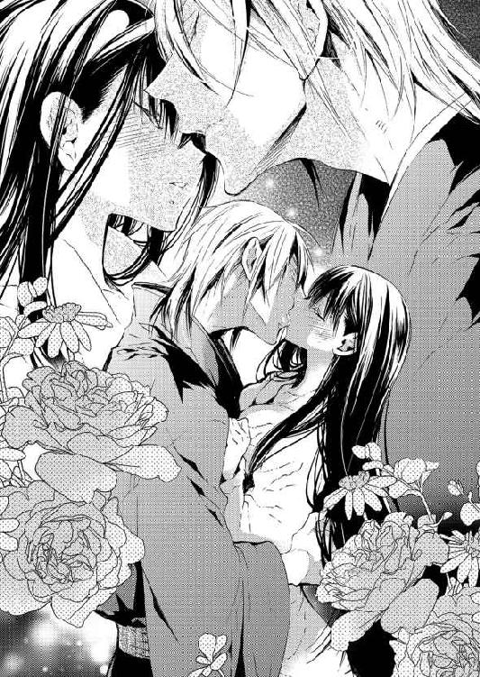
くるくると唾液を舐め取るように絡め続け、やがて、千花の口の中へと侵入してくる。
千花にとって初めてのキス。それなのに、なんていやらしい......いや、大人のキスなのだろう。
口の中とはいえ、自分の身体の中に男性が入り込んできている。このキスは千花にとって、セックスにも等しい行為に思えた。
「甘い......危険なまでに、甘い唇だな。ああ......クソッ！ 顔を見て、話をするだけのつもりだったのに。おまえが欲しくて、おかしくなりそうだ」
唇が離れるなり、伊織はそう口にした。
キスもセックスも、二十代で経験することが新たな目標だった。すでにキスは目標をクリアしてしまっている。この分なら、今夜中にセックスのほうもクリアしそうだ。
伊織と一緒にいるのは楽しい。彼となら何時間でも話していられる。今日のような時間を過ごしていけるなら、ふたりは本物の恋人同士になれるのではないか。
だがそれは──恋をして、恋人同士になり、いろいろデートを重ねて、やがて身も心も結ばれる──という千花の理想と逆になってしまう。
そんな思いを抱きながら、千花の口をついて出た言葉は......。
「わたし......もっと、伊織先生のこと......知りたい、です」
「ああ、教えてやる」
伊織は即答するなり、千花を抱き上げ、ベッドに直行した。
（あ、あれ？ イエスって言ったつもりじゃなくて......でも......あれ？）
マットレスが沈んだ瞬間、リネンにふわりと包み込まれた気分だった。伊織が覆いかぶさってきて、ふたたび唇を重ねてくる。
熱烈なキスは千花から思考を奪う。ふたりはどこへ向かおうとしているのか、考えることも、疑問を抱くこともできなくなった。
いつの間にバスローブの紐をほどかれたのだろう。
胸元が左右にゆっくりと開かれていき......千花は生まれて初めて、男性の前に裸身を晒していた。
「やっぱり見事だな。焼き入れ前の刀身のようだ。おまえは俺の手で仕上げたい。他の誰にも譲りたくない。俺でいいと言ってくれ」
いいも悪いもなく、頭の中は真っ白で......。よくわからないまま、千花は機械人形のようにうなずくだけになる。
そのとき、彼女の腰を跨ぐようにかぶさっていた伊織は、スッと身体を起こした。彼は両腕を袂に引っ込めるなり、襟から出して、ひと息に諸肌を脱ぐ。
逞しい上半身が露わになり、千花は瞬きもできずにみつめてしまう。
「備前まで、来てくれるよな？」
彼は何度目かのキスをしながら、念を押すように尋ねてきた。
「伊織、先生は、わたしの、こと......す、す......と、特別に、思って......くれてま、あっ......あっ、あ、やっ......待っ......て」
本当は『好きなんですか？』と聞きたかった。だが羞恥心が先に立ち、ちゃんと言葉にできなくなってしまい......。
伊織に胸を触られ、先端を口に含まれた瞬間、千花は自分でも信じられないほど甘い声を漏らしていた。
「特別に決まってる。そうじゃなきゃ、東京まで出てくるわけがない」
「ホ、ホン、あっ......あっんっ、ホントに？」
熱い舌で桜色の尖りを舐られ、ころころと転がされ、音を立てて吸いつかれる。その間も空いたほうの胸を彼はやわやわと揉み続けた。
（どう、して？ そんなに、大きくないから、恥ずかしいのに）
執拗に胸ばかり責められて、千花の身体は熱い湯に浸されたように、身体の芯から火照り始める。
「やっ......も、やめ......て、変になり、そう......」
「なればいい。俺はとっくにおかしくなってる。千花、胸......気持ちいいか？」
胸を中心に溜まり始めた熱が、頭のほうまで上がってくる。
「は......い」
そう答えた瞬間、顔から火を吹きそうになった。
「おまえってホントに素直だな。もっと、気持ちよくしてやる」
「そ、そんな......恥ずかしくて、もう......あっ！」
千花はギュッと目を閉じる。
期待と羞恥に全身が震えたとき、伊織の指がお腹の辺りを撫でながら、下腹部に下りていったのだ。
茂みをさわさわと弄ったあと、花びらを押し分けて、花芯を捉えた。
「きゃっ！ あぅ、やぁっ......あっ、くっ」
どれほど固く脚を閉じても、内股に彼の手首を挟んだままでは逃げようがない。脚を擦り合わせてモゾモゾと腰を動かすが、それは余計に快楽の波紋を広げるだけだった。
誰にも見せたことのない、もちろん、触れられたこともない場所。その秘密の花園を伊織に許してしまった。
「千花──答えなくてもいいが、気になるので一応尋ねておく。おまえ、こういう経験はひょっとして初めてなのか？」
これ以上ない、恥ずかしい質問だ。
千花は可能な限り顔を横に向け、伊織の問いに小さくうなずいた。
「じゃあ、充分にほぐさないとダメだな」
彼は大きく息を吐きながら言った。
千花には『面倒くさい』と言わんばかりの嘆息に聞こえる。
「予想はしてたんだが、現実になると......かなり緊張するな。ここで引くのが立派な男なんだろうが......俺には無理だ」
「伊織、せん......せ、い......わた、し......わたし、は」
伊織の指が高速で動き始める。千花の最も敏感な部分を押さえ込んだまま、激しく前後させたのだった。
「あ、あ、あ......やっ、ダメ、ダメ......やぁーっ！」
無意識のままに腰が揺れ、絶頂に押し上げられた瞬間、千花は四肢をピンと伸ばした。
顔の上からフラッシュを浴びたように、瞼の裏側がチカチカする。伊織はそんな彼女の秘所を更に嬲り続けた。
千花はあまりの快楽に少しずつ意識が遠ざかり、やがて、完全に手放したのだった。
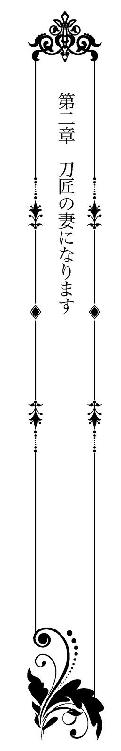
人の話し声が聞こえた。
「......ああ......ですか......ええ......では......」
切れ切れにしか聞こえないので、千花にはなんのことかさっぱりわからない。
（えーっと、誰の声？ お父さん......じゃないような）
起きようと思うのだが、瞼が重くてなかなか開かない。だが、わずかに開いた瞼の隙間から、うっすらと朝の光が射し込んでくる。
とくに朝が苦手なタイプではなかったので、こんなことは初めてだった。
（どうしたんだろ......起きられない。あー、そういえば、昨日お酒を飲んじゃったせい......かな？ あれ、ホテルで食事して、バーに行って......えーっと）
お酒のせいだとは思いついたものの、その先がなかなか思い浮かばない。
千花は昨日の出来事を最初からゆっくり思い出そうとした。
面接のために文京区のホテルを訪れた。そして持ち込んだ振袖を、ホテル専属の美容室で着せてもらったのだ。
待ち合わせのロビーラウンジに行くと、彼女を待っていたのは刀匠、咲良辰吉──ではなく、孫の伊織。
彼のイトコでとっても綺麗な成実も一緒で、彼女は『伊織といろいろ話してみて』という言葉を残し、どこかに行ってしまった。
ホテルに来る前は、仕事の内容や期間、待遇を尋ねてみようと思っていたのに、そこに辰吉ではなく伊織がいたため、千花の中ですべての段取りが狂ってしまう。
それもそのはず、一年前と少し前、千花は実家のギャラリーで伊織と出会ったのだ。
正確に言えば、千花の曾祖父が打った守り刀を褒めてくれた男性に出会った。これ以上ないくらいの好印象を残し、その男性は名前も告げずに帰ってしまった。短い会話の中で、妙に 〝櫻一文字〟や日本刀に詳しかったことから、ひょっとしたら一文字派の関係者なのではないか、と思っていたが......。
まさか、ギャラリーの目玉として展示されていた刀を打った張本人だったとは......。
昨日初めて、ギャラリー近くのイベントホールで講演があったため、と伊織に教えられたが、そのときは全く気づかなかった。
そして今回の一件、当初は辰吉が千花に目を留めた、と聞いていた。
だが本当は、千花に目を留めてくれたのは伊織だったという。本人から、そんな意外なことを聞かされ、千花はいろいろと尋ねるタイミングを逃してしまったのだ。
アクシデントも重なって、なぜか伊織の部屋でシャワーを浴びることになってしまい、そしてとうとうキスされて......。
「起きろよ、千花！ まずいぞ、寝過ごした」
大きな声が耳元でして、千花の身体はビクッと跳ねる。
どうにか瞼を押し上げ──ハッとして、すぐさま身体を起こした。
「あ......えっと......わたし、どうしてここに？」
「おいおい、こんなときに冗談は勘弁してくれ」
目の前に伊織がいる。
寝ていたところを電話の音で叩き起こされ、急いで身体を起こした感じだ。ということは、さっき聞こえた話し声は伊織で、ベッド脇の電話でのやり取りらしい。
まじまじとみつめる千花の視線を受け、彼は困ったような顔で、胡坐をかいてベッドに座り直した。
立派な体躯を目の当たりにして、千花は息を呑む。こんな至近距離で、男性らしい胸板や腹筋を眺める日がくるなんて、昨日までの自分からは想像もできない。
（あの胸に......抱きしめられた気がする。ううん、それだけじゃなくて......いろいろと、本当にいろいろと、されたちゃったような）
伊織の唇を思い出し、千花は恥ずかしくなって下を向いた。
その拍子に、伊織の下腹部にあるとんでもないモノが目に飛び込んできたのだ。ぼんやりしていた千花の意識は一気に覚醒する。
「な、なん、なんで、裸なんですかっ!? 早く、何か着てください」
慌てふためき、彼女は叫んでいた。
ところが、伊織は実にばつの悪そうな顔をして......。
「俺もそうなんだが、でも、おまえも何か着たほうがいいぞ」
「え、えぇーっ？ きゃあっ!!」
彼の言葉に首を捻りながら下を向くと、千花は自分が下着一枚身につけていないことを知った。
あたふたとしながら、すぐ近くにあったシルクケットを摑んで身体を隠そうとする。
必死で引っ張るのに、シルクケットはほとんど動かない。
「なんで......なんでよ」
半泣きになる千花とは逆に、伊織は苦笑しながら身を乗り出してきたのだ。
思わず、身体がビクッと震える。
「おまえ、自分で踏んでる」
彼は笑いを堪えながら、千花の耳元でささやいた。
顔から火が吹きそうなほど恥ずかしい。千花は少し身体を浮かして、シルクケットを取ろうとしたが、そのとき、伊織の手が彼女の腰に触れ──。
キスされると同時に押し倒されていた。
「んっ!? ん......んぅ」
数十秒間、唇を押しつけ合うだけのキスが続く。
千花は唇と目を閉じて、固まったまま動くことができずにいた。直後、伊織は彼女からスッと離れていく。
「そんな、嫌そうな顔するなよ。俺たちの仲だろ？」
甘やかなささやきに、千花の鼓動は壊れそうなほど激しく刻み始める。
キスされて、ベッドに寝かされたところまでは思い出した。だが、その先が少しも浮かんでこない。
伊織は間違いなく、『俺たちの仲』と言った。それはふたりが、特別な関係になってしまった、ということにほかならないのだろう。
彼のことは嫌いではない。少なくとも、もう一度会いたいとずっと思っていた人だった。会えたときの喜びに嘘偽りはないが、一足飛びに〝ベッドをともにする〟という事態まで進むとは、自分で自分が信じられない。
（わたし、相手がかっこいいだけで、こうなる気はなかったし......。彼氏とか、恋人とか、とにかく好きな人と経験したいって、そう思ってたのに......なんで、こんなことに？）
複雑な思いが込み上げてきて、千花はどう答えたらいいのかわからない。ただ、ギュッと口を引き結んだ。
すると、伊織は彼女の顔を覗き込んできた。
「いったい、どうしたんだ？ 昨夜は、俺のことが知りたいと言ってただろう？」
言ったような......覚えてないような......ちゃんとした返事ができない自分が情けない。
（初めてだったのに、どうしてなんにも覚えてないの？ ううん、ちょっと待って！ 自分のことはともかく、伊織先生にもめちゃくちゃ失礼なんじゃ......）
そのとき、伊織の手が彼女の髪に触れた。
「そんなに深刻に考えるなよ」
呆れたような彼の声に、千花はむきになって言い返した。
「考えますよ！ だって......」
一度言葉を区切ったあと、彼女は思いきって口にする。
「──面接にきただけなのに、こんなこと」
「──見合いなんだから多少のことは......え？」
千花の耳に『見合い』という言葉が飛び込んできた。
「あ、あの、今、見合いって言いました？ あの、ひょっとして、わたしが呼ばれた理由って、まさか......お見合いなんてことは」
ビクビクしながら顔を上げて、伊織の顔を正面からみつめる。
すると、彼の顔は凍りついたように固まっていた。
「面接、だと？ いったい、なんの話をしてるんだ？」
「わ、わたしの、勤めている骨董店が......は、廃業することになって、それで、新しい仕事先の話になって......」
千花は必死になって事情を説明する。
途中、伊織はいささか乱暴に身体を起こし、シルクケットを摑んで千花の上に放り投げてくれた。親切心というより、憤懣やるかたない、といった表情だ。
「普通、仕事の面接に振袖で来るか？」
「もちろんスーツで来るつもりでした！ でも、刀剣協会の会長さんから、振袖を指定されて......。変だって思いましたけど、咲良先生はそういう主義なのかなって」
シルクケットを身体に巻きつけ、千花はベッドに正座する。
伊織はベッドの端に腰かけていたが、やがて大きくため息をつくと、スッと立ち上がった。
彼は床に落ちた着流しを拾い上げ、サッと羽織った。腰の辺りを片手で押さえたまま、千花に背を向けて立ち尽くしている。
「あの......お見合いって......？」
千花はそれだけ尋ねるのが精いっぱいだ。あとは言葉にならず、伊織の顔を見るのも恥ずかしい。
すると、伊織はゆっくりと振り返り、渋々といった声で話し始めたのだった。
「師匠──爺さんは今年八十二だ。去年の終わり、一週間ほど入院した。まあ、大病ってわけじゃなくて、ぎっくり腰だったんだが、とたんに気が弱くなって、俺に結婚を勧めるようになったんだ」
辰吉にとって伊織はたったひとりの孫であり、家族だという。
伊織の両親は今から十八年前、彼が七歳のときに亡くなった。
父親の勇人は二十歳前後まで刀匠になることが決断できず、家を出ていたという。だが、結婚を機に辰吉の弟子となり、妻を連れて実家に戻った。修業を積んで約八年、ようやく一人前になろうというとき、事故に遭い、ふたり揃って帰らぬ人になってしまった。
伊織の祖母は彼が生まれる前に亡くなっている。そのため、小学生になったばかりの伊織は、祖父の辰吉とふたりきりになった。
咲良家の親戚たちは、辰吉の体調はもちろんのこと、伊織の将来についてもかなり心配している。
伊織は血筋、腕前ともに、間違いなく辰吉の後継者だ。
刀匠の資格を得てすでに七年。顧客もつき、年間二十四振りという作刀制限が数年先まで埋まっているという、数少ない刀匠だ。
さらには、名誉ある賞も幾つか受賞して、人気だけではない実力も証明している。
しかし、まだ二十五歳。辰吉に万一のことがあり、人間国宝という祖父の威光がなくなったとき、今と同じ地位を保っていられるかどうかは未知数だ。
そして年配者から一人前として扱われるためには、妻子の存在は不可欠。前時代的だと言われても、刀匠の世界はいまだに徒弟制度がまかり通っている。古刀同様、古い考え方が尊重される世界だった。
そういった事情から、年が明けるなり、伊織には次々と縁談が持ち込まれることになり......。
「全部断った。ひとりに会えば、全員に会わないと紹介者の顔を潰すことになるからな。でも、周りの連中がいい加減苛々し始めて、どんな女なら気に入るんだ、と」
周囲の質問に伊織が答えたのは、一年前の二月、東京のギャラリーで出会った少女のことだった。
「講演をした場所の近くにある個人ギャラリーで、住所も店名も覚えてない。彼女の名前も聞かなかった。そう答えたのに、成実はおまえを捜し当てたんだ」
苛立ちを露わにしながら話す彼を見て、千花はしだいに申し訳なさを感じ始める。
伊織は見合いのために、わざわざ東京までやって来てくれた。それは千花と会うために、もっと言えば、彼女に求婚するために来てくれたということになる。
それなのに、千花自身は面接にやってきただけ、と言ってしまったのだ。
（でも、あのときの男の人が、伊織先生だって知らなかったわけだし......それに店長も、これが見合いだなんて全然思ってない気がする）
心の中で釈明を重ねるが、口にするのは躊躇する。
「あ、あの、わたし......」
「だが驚いた。純粋そうに見えた女子高生が、一年ちょっとでこんなに変わるとはな」
伊織は吐き捨てるように言う。
「それは、どういう意味ですか？」
「おまえは仕事のためにここまで来たんだろう？ それは要するに、俺に取り入って採用してもらうために寝たんだ。違うか？」
冷ややかな声を聞き、千花は息を呑んだ。
「違い、ます......わたしは、あなたの部屋に泊まるつもりなんて、全然なかったし......。こ、こんなこと、するつもりも......」
「ふーん、そのつもりもないのに、簡単に男の前で裸になったわけだ。純情ぶって初めてのフリまで、ご苦労なことだな」
仕事の面接と言うにはどこかがおかしい、と思ったことはたしかだ。
周囲からお見合いの誤解をされるたび、本当にお見合いのようだ、と思ったことも否定できない。
だが、部屋まで来たのは本当にアクシデントだった。
それに、キスされても、ベッドに押し倒されても、逃げようとしなかった理由は──相手が伊織だったから。
彼とならそういう関係になってもかまわない。
酔った頭ではあったが、そんなふうに思ったことはちゃんと覚えている。しかし、それを証明する手立てはなかった。
千花はシルクケットを巻いたままベッドからスルリと下りる。
「わたし、帰ります」
小さな声で呟くと、リビングに向かって歩きだした。
「まだ、振袖のクリーニングが終わってないぞ」
「平気です。着替えがありますから......。振袖はあとで取りにきます」
昨夜、着替えを用意すると言われたとき、フロントに預けておいた洋服があるのを思い出し、持ってきてもらった。
夢ではない証拠に、リビングのソファに千花がホテルまで着てきた服が置いてある。
リビングとベッドルームの間に扉はないので、その場で着替えることはできない。洋服を抱えてバスルームに向かおうとしたとき、ふいに腕を摑まれた。
「図星を突かれて怒ったのか？」
頬がカッと火照って熱くなる。だが、言われる原因を作った自分にも責任はある。そう思ってグッと我慢した。
すると伊織は頬を歪めて笑ったのだ。
「まあいい、おまえを採用してやろう。うちには日本刀だけじゃない、骨董品なら山のようにある。なんたって三百年の歴史があるからな。その代わり、これから先も黙って俺に抱かれるんだ。簡単なことだろう？」
彼の口から零れたとは思いがたい言葉だった。
千花にはどうしても耐えられず、摑まれていない方の手で伊織の頬を引っぱたいていた。
「信じられない......あなたが、そんなことを言う人だったなんて！」
人に手を上げたことなど一度もない。人を叩くことが、こんなにも掌が痛いことだとは思わなかった。だがそれ以上に、千花の胸は引き裂かれそうに痛い。
彼の手を振りほどこうと必死で動かすが、伊織は手を離してくれなかった。
それどころか、千花の腰に手を回すと、強引に自分の胸に引き寄せようとする。
「信じられないのはお互い様だ。これで終わりにできると思うなよ。おまえには絶対に備前まで来てもらう」
「そんな......わたしに、愛人になれとでも言うんですか!?」
「馬鹿なことを言うな！ たった一度でも、妊娠の可能性は否定できない。おまえは俺と結婚するんだ。いいなっ!!」
伊織の激しい剣幕と言葉の内容に千花は衝撃を受けていた。
（妊娠......そんなこと......考えられない）
羽織っただけの着流しの前がはだけて、逞しい胸が目の前にあった。彼の素肌に掌を押し当て、千花は必死で距離を取ろうとする。
だがそのとき、なんの前触れもなくエントランスの扉が開いた──。
「ええ、もう起きていると思いますので、ここでお待ちください。──伊織、伊織、起きてるんでしょう？ あんた、なんだって携帯切ってるわけ？ 例のお嬢さんが帰ってこないって、こっちに電話が、あったんだけど......」
ノックもせずに扉を開けたのは成実だった。
同行者がいるらしく、話しながら入ってこようとする。
エントランスの扉には鍵がかかっていた。その鍵を持っていたということは、彼女はもうひとつあるベッドルームに泊まる予定だったのかもしれない。
今日の成実はアイスグレーのパンツスーツ姿でクールさが際立っていた。昨日の訪問着姿とは別人のようだ。そして、颯爽とリビングに足を踏み入れたが......。
直後、目と口を大きく開いたまま動きが止まった。
千花はシルクケットを巻いただけのあられもない格好。伊織のほうも大差ない。そんなふたりの抱き合っている姿を目にしたのだ。
ベッドルームだけでは飽き足らず、リビングでもいちゃついているようにしか見えないだろう。
「な......いったい、何を......」
成実は上手く言葉にならないようだ。
千花も何も言えず、とっさに伊織の胸に顔を伏せた。
すると彼はそのまま千花を抱きしめ、成実のほうに背中を向けたのである。それはまるで、千花の姿を成実と同行者に見せまいとするかのようだった。
（わたしのこと、庇ってくれてるみたい）
たった今まで彼から逃げようとしていたのに、そんなことも忘れてしまいそうになる。
「取り込み中だ。出ていけよ」
伊織は成実に背を向けたまま、短く告げた。
だが、その直後のこと、千花は一番聞きたくない声を耳にする。
「千花！ おまえは、こんなところで、何をやってるんだ!? そ、そんな、格好で......」
「お、お父さん!?」
そっと身体をずらしてエントランスのほうを見ると、そこには顔を真っ赤にした父の姿があった。そして父の後ろに立つ、母の姿までみつけてしまったのだった。
──二十分後、千花は最初に着てきた紺色のリクルートスーツに着替え、軽くメイクをしてリビングに戻った。
「遅くなってすみません」
伏し目がちに謝罪しながら、花柄のソファの横に立つ。テーブルを挟んで伊織と千花の両親が向かい合って座っていた。
それを見て千花は迷った。伊織の隣に座るか、あるいは両親のほうか。
どちらにも彼女の座るスペースはあったが、伊織がスッと端に寄ったので、彼の隣に座らざるを得なくなる。
伊織を見ると、着流しの上から縹色の袴を着けていた。その姿にときめきを感じ、うっかり見惚れてしまいそうになる。
そのとき、伊織と目が合った。
千花は彼の眼力に引きずられるように、隣に腰を下ろす。
まず、口を開いたのは千花の母だった。
「電話の一本もかけてこないで、無断外泊だなんて。お父さんとお母さんがどれほど心配したか、わかってるの？」
おそらく一睡もせずに心配してくれたのだろう。両親とも昨日の服装のままだった。
「......ごめんなさい」
他に言葉はなく、千花は素直に謝って頭を下げる。
「おまえが帰ってこなくて、若村さんに連絡したら、面接に行ったと言われるし......。刀剣協会の会長さんに連絡してもらったら、今度は見合いだと......。いったい、何がどうなってるんだ!?」
零時を過ぎても電話すらかけてこない娘の身を案じ、失礼を承知で若村に連絡を取ったと言う。
若村は驚き、すぐに会長に連絡してくれた。そこで初めて、若村もこれが面接ではなく、見合いだと知ったらしい。
会長は会長で、千花の両親が見合いの件を知らなかったことに驚きつつ......彼もようやく、若村に話が通じていないことを悟った。
千花の両親は朝を待ち、成実と連絡を取った。『まさか伊織に限って......』と信じない彼女を説き伏せ、ここまで案内してもらったという。
娘が伊織の部屋にいないことを確認したい、と思う反面、いないときは事件や事故に巻き込まれた最悪の事態を考えなくてはいけないのだ。
両親の苦悩は相当なものだっただろう。
（ホント、なんでこんなことになっちゃったのか......）
携帯電話は面接には不要だと思い、電源を切って着替えと一緒にフロントに預けたのがそもそもの間違いだった。
今さらだが、もし手元にあったなら、きっと電話くらいしていただろう。
だが、ギャラリーに行ったときも、食事をしたときも、千花に外泊するつもりなど全くなかった。バーに行ったときも同様だ。少し遅くなりそうだったが、日付が変わるまでに帰宅すればいい、そう考えていた。
千花は身を縮ませるだけで、何も答えることができない。
「見合いだと聞いて驚いたが、おまえ自身は面接のつもりで来たんじゃないのか？ それが、なんで......男の部屋に泊まったりしているんだ？」
父の声が怒りに震えている。ここはひとまず、黙って嵐が過ぎるのを待つしかない。そんなふうに考え、千花は首が折れそうなほどうつむいた。
だがそのとき、黙って聞いていた伊織が唐突に立ち上がった......と同時に、彼は水色の絨毯の上に、正座したのである。
「伊織？ あんた、何を......」
少し離れた場所にいて四人の様子を窺っていた成実だったが、伊織の行動を見て動揺を露わにしている。
彼はそんな成実の問いには答えず、
「このたびのこと、すべて僕の責任です。申し訳ありませんでした」
そう言うなり、絨毯に手をついて頭を下げた。
「千花さんとは一年ぶりにお会いして、彼女も僕のことを思っていてくれたことを知り、気持ちが先走りました。もし不名誉な噂が流れれば、祖父や一文字派の名前に傷をつけることになります。可能な限り、早急に結婚したいと思っております」
伊織にとんでもないことを言われている。
頭の中でそう思いながらも、心がついていかない。
出会ったときから、素性も知らずに憧れを抱いていた。再会に浮かれて、調子に乗って一夜を過ごしてしまった。
もし、本当に子供ができていたときは......。
（妊娠がわかってから結婚を決めたら、きっと不名誉なのよね？ だから、その前に結婚してしまおうって思ってるんだ）
万一、妊娠したら、伊織がちゃんと避妊してくれなかったせいだ。そう言って彼を責めることはできるが、千花自身の責任から逃れる理由にはならない。
そしてもうひとつ──。
「千花さんのことは必ず幸せにします。どうか、結婚をお許しください。お願いいたします」
さらに頭を下げる伊織の姿を見て、ギャラリーに展示された懐剣のことが思い浮かんだ。
あれは彼が『嫁になる女のために』打ったもので、それがイコール『おまえに見せてやりたくて』に繋がるとしたら？
伊織の言葉はすべて自分に向けられたもの。その思いが胸に湧き上がり、ときめきが静まらない。
彼の一挙手一投足にドキドキが大きくなり......。
「千花、おまえも彼と結婚したいのか？」
父の問いに、千花は反射的にうなずいていた。
☆ ☆ ☆
東京から新幹線に乗り、最短時間で約三時間半。朝出発して午前中には岡山駅に到着する。そこから在来線に乗り換え、約三十分手前に戻った辺りが、遥か昔、備前国と呼ばれた土地だった。
日本刀には五ヶ伝と呼ばれる伝法がある。日本刀を鑑定するうえで、大きく五つのグループに分けられ、そのうちのひとつが備前国で発生した備前伝だ。
吉井川を使って上流域から豊富な原料を運べたこともあり、平安時代末期から多くの刀匠がこの地で刀を打ち、備前刀の礎を築き上げてきた。
現在に至るまで、幾つもの流派が興り、時勢の流れにより消えていった。
その中で、江戸時代中期の刀匠、咲良家の初代〝影貞〟が、鎌倉時代に栄えた一文字派の姿を理想とした刀を打ち始め、以降、〝櫻一文字〟と呼ばれ、現代まで続いている。
千花にそんな説明をしてくれたのは、結婚式の手伝いに来てくれた近所の人たちだった。
ひっきりなしに誰かがやって来て、
「備前刀と言ったら長船が有名ですけどね。ここ最近は若先生のおかげで、一文字派の人気も盛り返してきてるんですよ」
「そうだ、そうだ。若先生は頑張っとるよ。東京からこーんな若い嫁さん、連れ帰ってきたしなぁ。これで大先生もひと安心だ」
「男気はある人なんだけどねぇ。その分、無骨で口数が少ないから......。ひょっとしたら、お嫁さんは無理かもしれないねぇ、って言われてたのよ。本当によかったわぁ」
伊織のことを『若先生』、辰吉のことを『大先生』と呼び、年齢性別も様々だが口々に「めでたい」「おめでとう」と祝ってくれる。
千花はひたすら笑って、「どうも、ありがとうございます」と答え続けた。
仕事の面接と信じたお見合いから早一ヶ月。
いや、まだ一ヶ月と言うべきか。
あの運命の日から今日まで、伊織とは数えるほどしか会っていない。それもふたりきりではなく、常に誰かが一緒だった。
ホテルで会ったときのように、手を繋いでくれることもなく......。他愛ない話を延々続けることも、恋人同士の甘い時間もなかった。
（婚約とか結婚ってこんなもの？ 伊織先生って、本気で結婚する気があるのかな？）
具体的なスケジュールばかりが淡々と決まっていき、千花は結婚式が行われる今日、初めて両親とともに備前にやって来た。
この一ヶ月、伊織以上に顔を合わせた相手は成実だった。
『田舎のほうはやたら構いたがる年寄りは多いからねぇ。でも、あの人たちに悪気はないから、あまり気にしないでちょうだい。一番の問題児は伊織かな。扱いづらい奴だけど、ま、頑張って』
とても綺麗な人なので、性格もきついのではないかとビクビクしていたが、成実の言動は意外なほど自然体でさっぱりした性格の女性だった。
今年二十七歳。伊織とは歳が近いせいか、お互い遠慮なく話すことのできる間柄だと言う。
それだけではない。実際に近所の人や親戚の人たちと話す成実を見ていると、誰もが彼女に一目を置いている様子だ。咲良家の分家筋と聞いたが、彼女自身が一文字派の中で、大きな役割を果たしているのかもしれない。
『わからないことがあったら、なんでも聞いてよ。私は地元から離れてることが多いけど、今日の祝言が終わってもしばらくの間は実家にいるから』
祝言と言われてドキッとしたが、成実の優しい言葉に、千花は全身に感じていたプレッシャーがほんの少し楽になった気がした。
早速いろいろ聞きたいところだが、あらためて考えてみれば、今の千花には何がわからないのかもわからない状態なのだ。
（うん、わからない......他のことはともかく、伊織先生の気持ちが一番わからない）
両親の前で『千花さんのことは必ず幸せにします』と言ってくれたとき、彼の言葉は本気かもしれないと思った。
成実に頼んでまで千花を見つけだし、お見合いの席を設けたのだ。それも体裁を取り繕うようなものではなく、結婚を視野に入れた真剣なお見合いだった。
そのつもりでやって来た伊織に、面接のためにホテルを訪れ、成り行きで寝ただけ......というような釈明をしたのは千花のほうだ。
（申し訳ないって思ったんだもの。絶対に傷つけたって。面接のことを口にするまで、本当に優しかったから......だから）
できれば見合いの最初からやり直したい。
だがそれは──夏休みの最終日に、初日に戻りたいと願う子供と大差ない。どう頑張っても無理な話である。
それなら、せめてふたりきりの時間をもう一度過ごして、彼の笑顔を取り戻したい。そう思ったのだが......。
「......ダメ、なのかな？」
「え？ ダメですか？ 綺麗に結えなかったかな？ 今からでも鬘にしますか？」
ハッとして顔を上げたとき、三面鏡に映る自分の姿が目に飛び込んできた。
鏡越しに、美容師の女性が困ったような顔でこちらを見ている。
ここは屋敷内の一室で、六畳程度の和室だ。花嫁用の控室として用意された部屋で、三面鏡の他に大きな姿見もあった。髪を結ったあとはここで着付けもしてもらう段取りになっている。
結婚式の衣装は白無垢に綿帽子、伊織の地元である備前で行う──そこまではとくに驚くことではない。
だが、その場所が咲良家のお屋敷の大広間と聞いたときはびっくりした。
時代劇さながらに、媒酌人の仕切りによる人前式で盃をかわし、祝宴も同じ大広間で行われるという。
まさに、純和風のゲストハウスウエディングだ。
千花の場合はウエディングドレスより、白無垢に憧れていたためとくに不満はなかった。だが、花嫁自身に大きな理想や希望があった場合、きっと大揉めに揉めたのではないだろうか。
髪型を決めるとき、高島田の鬘一択だと思っていたが、
『お嫁様の髪はそこそこの長さがありますし、美しい黒髪をなさっておいでだから、地毛で白無垢に合う洋髪にしましょうか？』
美容師から提案され、千花もそれを承諾した。
千花の髪はふんわりとボリュームを持たせて結い上げられ、生花で華やかに飾られている。
あとはかんざしを挿すばかりといったところか。
「ダメじゃないです！ とっても綺麗に仕上がってると思います。ホント、わたしじゃないみたい」
柔らかくてすぐにベチャッとなる髪質なのに、プロの手にかかれば、見事なまでの立体感だ。
千花の返事にホッとしたのか、とたんに彼女の口は軽くなり、ペラペラとしゃべり始めた。
「和装に洋髪って人気なんですよね。実は私自身が憧れていて、結婚式のたびに提案するんですけど、この辺の親世代は頭が固いから......」
地元の若者で美容師を志し、岡山市内や県外に行った者は何人もいた。
だが、ここ十年ほどで戻って来たのは彼女ひとり。その分、仕事はそれなりにあるらしい。
結婚式の場合、最初は花嫁と花婿でいろいろ新しいことを計画するのだが......。決まって親の反対に遭い、最終的には無難なものに終わってしまう。彼女はそれが残念でならないようだ。
「まあ、ほとんどが親御さんの負担ですから、仕方ないのかもしれませんけど。でも、古いものを守るためにこそ、新しいものを取り入れていかないと！ っていうのは若先生の受け売りなんですけどね。あ、ごめんなさい、それくらいご存知ですよね」
彼女は伊織と同じ歳で、同じ小学校や中学校に通ってきた。そのころから伊織は将来刀匠になることが決められていて、近寄りがたい存在だったと話す。
「若先生が選んだお嫁様の御髪を任されるなんて、ホント、感激してます！ 気に入らなかったら直しますので、どんどん言ってくださいね」
他の人たち同様、美容師の女性も心から喜んでくれているようだ。
急に決まった縁談、それも東京からやって来る二十歳の小娘を『お嫁様』と呼び、本当に優しくしてくれる。
それもこれも、千花のことを『若先生が選んだお嫁様』と思ってくれているからだ。
髪を綺麗に結ったあと、代々の受け継がれてきた白無垢を着せられ......ようやく千花はひとりになった。
父や母が来てくれるかもしれないと思っていたが、その気配はない。ひょっとしたらさっきの彼女のように、咲良家の親戚や近所の人たちに囲まれているのかもしれない。
そんなことを思いつつ、千花はぼんやりと座っていた。
婚礼の時間が近づくごとに、心の中に不安が渦巻いていく。逃げ出したい衝動に駆られ──腰を浮かしかけたとき、ふいに障子が開いた。
伊織だった。花婿にふさわしい、黒五つ紋付羽織袴姿だ。
彼の手には白い袋に入った懐剣が握られている。
「これを......」
伊織はひと言だけ口にすると、懐剣を千花の前に置いて部屋から出ていこうとした。
「それだけ、ですか？」
「──綺麗だ」
立ち止まって振り返り、そう呟いた伊織は耳まで真っ赤だ。
どうやら綺麗に着飾った千花を見て、何か言うことはないのか、と聞かれたと思ったらしい。
（いや、まあ、それはそうなんだけど......それ以前の問題っていうか）
千花は深呼吸して口を開いた。
「......妊娠、してなかったです」
できる限り、素っ気なく伝える。
だが伊織の返事はそれ以上につれなかった。
「ああ、それで？」
「それでって......その心配があるから、責任を取って結婚するっておっしゃったんでしょう？ その心配がなくなったの、に、きゃっ！」
突然、踵を返した伊織は千花の前までやって来て、彼女の二の腕を摑んだ。そのまま腰を下ろし、身を乗り出すように顔を近づけてくる。
「まさか、今になって結婚をやめるとは言わないだろうな!? たとえそうでも、俺は認めない」
「でも、皆さん、あんなに祝ってくれているのに」
「だったらわかるだろう？ 今さら、取りやめになんてできないんだ」
彼の返事は、本当は取りやめにしたいができない、と千花の耳には聞こえた。
「おまえがここに到着したときの、爺さんの喜びようを見ただろう？ それでも、帰るって言うのか？」
人間国宝として認められた刀匠。とても厳しく、来るもの拒まずで弟子を取るものの、十人中九人まで逃げ出すという。妥協という言葉は、自分自身にも弟子たちにも決して許さず、孫の伊織ですら公式の場や仕事中は『師匠』と呼んでいた。
だが辰吉は、千花が想像していたよりずっと、小柄で優しい笑みを湛えたお年寄りだった。
目の前に人間国宝と呼ばれる人がいる──そのことに、千花はどうしようもなく緊張していた。『よろしくお願いいたします』と言うだけなのに、しどろもどろになってしまい......思い出すだけで恥ずかしい。
（なんて頼りない嫁だろうって思われた？ 大事な後継ぎにふさわしくないって......）
うつむく千花に辰吉は、
『ああ、わしのことは気にせんでええ。こんな可愛い孫娘ができただけで、ありがたいことじゃ。伊織と仲ような』
不快そうな顔をすることなく、優しく声をかけてくれたのだ。
その言葉遣いといい、白髪を後ろで束ねた容姿といい、好々爺という呼び名がぴったりだ。動きはいささかゆっくりしていたが、周囲の気配は敏感に察していたので、まだまだ隙がないように見えた。
そんな辰吉の笑顔を思い出す。もし、千花が結婚式を目前にして逃げ出したりすれば、とんでもなく悲しませることになってしまう。
「それは......でも、伊織先生は平気なんですか？ お爺様のために、結婚を決めても」
「俺は──」
伊織はそれだけ言うと、千花に抱きついてきた。
「そんなに、嫌か？ おまえが、俺との未来に夢を持てないくらい嫌だって言うなら......」
思い詰めた声でささやかれたら、とても『嫌だ』とは言えない。そもそも千花は、彼との結婚を『嫌だ』とは思っていないのだから。
「そうじゃないです。わたしが、嫌って言うんじゃなくて......伊織先生が」
彼に抱かれたまま、ほんの少し、ふたりの間に距離を取る。それは千花が、彼の顔を見上げることができる程度の距離だった。
だがその格好は、別の意味でふたりの距離を縮めていた。
伊織が顔を覗き込んでくる。彼の吐息を肌で感じるくらいに近い。伊織のほうはきっと、千花の吐息を感じていることだろう。
胸の奥を撫でられるような、ゾクッとした感覚が千花の背筋に走る。次の瞬間、ふたつの吐息は重なっていた。
唇が触れるだけの優しいキス。
「いい加減、〝先生〟って言うのはやめろよ」
キスの合間に掠れる声で伊織はささやいた。
「わたしのことは、〝おまえ〟だし、名前も呼び捨てですもんね。じゃあ、わたしも、伊織って呼び捨てにします」
「ああ、それでいい」
結婚は考え直したほうがいいのではないか、という不安は、あっという間に消え去っていた。
そのとき、千花は気づいたのだ。この一ヶ月、親密になろうとしない伊織の態度に、苛立っていたことに。
再会の日、ホテルで過ごしたような時間を一緒に過ごしたい。ふたりきりで日本刀の話をするだけでいいのだ。ただ、伊織と話がしたかった。
彼と結婚したくないわけではない。
だが、結婚したい〝だけ〟でもなかった。
妊娠の可能性があるから、とか、辰吉のために、とかではなく......。
キスしたり、触れ合ったりしながら、ふたりの時間を積み上げていきたい。本当の意味で『若先生が選んだお嫁様』になりたいのだ。
そのことに気づいた千花は、伊織のことが愛しくて堪らなくなる。
「なんか......ヤバイな」
「え？ ど、どうして......？」
心の中を読まれたような言葉に、ドキリとする。
すると伊織は、千花の腕を摑み、袖の下に見えた腕の内側に口を押しつけてきた。
強く吸われ、キスされた場所にピリッとした痛みが走った。
「痛っ!?」
「おまえの柔らかい胸にも、同じキスをしたくなった」
「なっ......ば、馬鹿なこと......言わないで！」
焦りながら千花が返事をすると、伊織の手が彼女の白い帯の辺りに触れた。
「伊織せんせ......あ、ダメ、ダメですって......あ、えっと」
パニックを起こしたように慌てふためく千花の制止を無視して、彼は白い袋に入った懐剣をグッと差し込んだ。
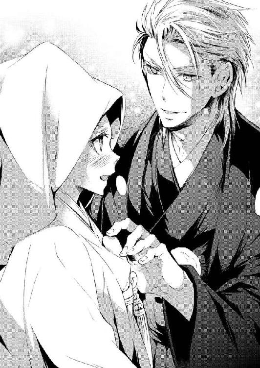
「脱がせて可愛がってほしかったのか？ エッチな奴だな」
愉快そうに笑う伊織の顔を見ていると、どうにも悔しい。
「違います。エ、エッチなのは......伊織せ、違った、伊織のほうじゃない！ わたしは、わたしはそんな、エッチなことなんて......」
「ああ、わかった。俺のほうがエッチでかまわない。千花、もう一度キスしたい。いいか？」
「いいって言わなくてもするくせに......」
伊織に抱きしめられ、ふたりの唇が触れそうになったとき──。
「あんたたち、いい加減になさい！ もう祝言の時間なのに声がかけられないって、みんな困ってるんだから！」
怒鳴り声とともに障子が勢いよく開く。
そこには──仁王立ちの成実が憤怒の形相で見下ろしていたのだった。
それは結婚式ではなく、まさしく祝言だった。
親族で最も高齢という女性に先導され、母に付き添われて大広間に足を踏み入れた。
その瞬間、大勢の注目を浴び......千花はこのお屋敷を、初めて見たときのことを思い出していた。
今日の昼間、最寄りの駅からタクシーに乗った。運転手から『あそこが咲良先生のお屋敷ですよ』と言われ、千花は絶句した。
お屋敷と聞いたとき、千花は二階建て、三階建てといった上に大きな建物ばかりを想像していたのだ。それが、彼女の目に映った建物は、なんと平屋建てだった。
数寄屋門の下をくぐり抜け、玄関までは白御影の敷石の上を歩いていく。
玄関にたどり着くと、今度は枯山水の庭園が目に飛び込んできた。その奥には茶室まで見え、そこまでいくと千花の両親も声を失っていた。
（あの時点で、とんでもないところに来てしまった、って思ったけど......さすがお屋敷、ううん、大広間って呼ばれるだけのことはあるわ）
お屋敷の中には、八畳間が三つ並んであった。それだけではない。廊下を挟んでさらに三つ、八畳間があり、すべての部屋の襖が取り外されている。
大広間と聞いたとき、個人の家にそれほど大きな部屋があるのだろうか、と首を捻った。
だが実際に見てみて、床の間や縁側も合わせると軽く五十畳は超えるので、これはもう間違いなく大広間だろう。
あらかじめ座っていた伊織の横に、千花はちょこんと腰を下ろす。
何気なく視線を上に向けると、年季の入った天井や梁が目に入った。それを見る限り、築五十年や六十年どころではなさそうだ。
だが、この祝言のためだろうか、畳はすべて真新しく張り替えてあった。
謡曲「高砂」に合わせて、三々九度の夫婦固めの盃をかわす。本来は親子固めの盃や親族固めの盃もあるらしいが、両親のいない伊織に配慮して、親類縁者が一斉に乾杯することで済ませたのだった。
その先は適当にお銚子を抱えて、みんなが辰吉や伊織のもとにやって来る。辰吉は本当に嬉しそうで、伊織も断らずにすべての酌を受けていた。
千花の父も同じ状況らしい。次々に注がれて、決死の表情で飲み干している。
（お父さん、大丈夫かな？ 明日、東京に戻る前にちゃんと挨拶しておきたいんだけど......。二日酔いにならないといいなぁ）
実家を出る前に挨拶をしようと思っていたが、『相手が相手なうえに、急に決まったことだ。ちゃんと結婚してからにしなさい』と言われて聞いてもらえなかったのだ。
結婚式──ではなく、祝言と言われるたびに、格式の高いものを想像して千花の緊張は増すばかりだった。だが、実際に経験してみると、それほど格式ばったものではなく、千花は拍子抜けだ。
出席者がそれぞれに謡い、踊り、心から祝ってくれた祝宴。
それは朝まで続きそうで......。
ところが日付が変わる寸前、伊織と千花だけ大広間から引き揚げるように言われる。
千花にはよくわからなかったが、伊織のほうは心得ていたらしい。彼に手を引かれ、渡り廊下を通って離れまで連れて行かれたのだった。
伊織と手を繋いだのは一ヶ月ぶりだ。
それは千花にとって、とても嬉しいことで......。ただ、三々九度で飲み干したお酒のせいもあり、スキップしそうなほどに浮かれてしまっていた。
（やだ......ちょっと待って、初体験も覚えてないのに。結婚初夜まで、お酒のせいで忘れたりしたら......そんなのってあんまりだと思う）
嬉しくて、嬉しくてどうしようもないのに、泣きたくなるのは酔っているせいだろうか？
離れの一室に入った瞬間、鼓動が飛び跳ねた。
そこは旅館よろしく、ひと組の布団が部屋の中央にきちんと敷かれている。まさに、そういう目的で使います、と言わんばかりで......千花にすれば複雑な心境だ。
そんな彼女の感想はさておき、伊織の手は千花の髪に触れた。当たり前のようにかんざしを抜き、結い上げた髪までほどいていく。
「あ、あの......い、今から......えっと」
ほろ酔い気分とはいえ、『今からエッチするんですか？』とストレートには聞きづらい。
そうこうする間にも、帯が緩められ......そのとき、伊織の手が白無垢の裾を割った。千花はハッとして、思わず叫んでいた。
「待って、お願い！ ちょ、ちょっとだけ、待って」
「どうしたんだ？」
千花はコクンと息を飲み込んだ。
「伊織は......覚えてる？ スイートの......最初の夜、のこと」
こうして結婚したのだから、本当のことを伝えておいたほうがいい。
千花は覚悟を決めて、思いきって口を開いた。
「わたし、本当のことを言うと、ほとんど覚えてないの。あっ、えーっと、キスしたことはちゃんと覚えてる。無理やりベッドに連れ込まれたんじゃないってことも。でも、肝心なところ......って言えばいいのかな？ 伊織は......どう？」
上目遣いに彼の顔を見ると、なぜか視線を逸らしながら答えてくれた。
「俺は......まあ、一応......」
「一応!? 一応って何？」
その曖昧な返事に、彼女は声を荒らげてしまう。
そんな千花の剣幕に押されたのか、彼は両手を揚げて降参のポーズを取った。
「いや、もちろん覚えてる！ 覚えてるけど......ここで話せってか？」
「そ、それは......」
さすがに一部始終を伊織の口から聞くというのは、恥ずかしい、というか、居た堪れない。
それに、伊織との結婚など全く考えずに見合いにやって来て、求められるままベッドに飛び込んでしまった千花のことを、彼はもう許してくれているのだろうか？
千花に悪意は一切なく、仕事をもらうために誘惑に応じたわけでも、誘惑したつもりもないと、そう信じてくれたのか。
（まだ疑われたままだったら、なんか切ない。成実さんだって『一番の問題児は伊織』って言ってたしなぁ）
その上、彼とどんなふうに愛し合ったのか、全然覚えていないと告白してしまった。
もし伊織から『最悪のセックスだった』などと言われたら......。
（ダメ......きっと立ち直れない）
千花の胸には、なんにも言わずに初夜を過ごしてしまえばよかった、という後悔すら浮かんできている。
彼女がため息をつきそうになったとき、伊織のほうからスッと身体を離してくれた。そして大きく息を吐きながら、敷布団の上に胡坐をかいて座り込んだ。
「あのさ、おまえ、俺のこと好きか？」
淡々と問われ、千花は返答に迷う。
一年間〝会いたい〟と思っていた感情はなんと呼べばいいのだろう？
実際に会って、彼の素性も知って、千花の中に芽生えた〝もっと会いたい〟という感情。あれが恋なのか、それとも愛なのか。
そんなふたりの間に、突如浮かび上がった結婚の文字。
伊織の妻になることは嫌じゃない。彼に触れられることも、キスされることも、嫌じゃなかった。
もっと伊織を知りたい。もっと伊織と一緒にいたい。その思いを『好きか？』と問われたら......。
千花は迷いに迷って、ひとつの言葉を口にする。
「......嫌いじゃない」
伊織は小さく何度もうなずきながら、「そう、か」と呟いた。
そのまま覚悟を決めたように居住まいを正すと、
「わかった。じゃあ、おまえが俺を好きになるまで抱かない」
彼はきっぱり、宣言したのだった。
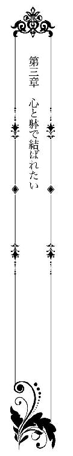
「ほらほら、お急ぎくださいませ。のんびりしていると、日が暮れてしまいますよ、若奥様」
そう言って千花を急き立てるのは、咲良家の家政婦、難波十喜子だ。
十喜子は地元の農家に生まれ、十五の歳で咲良家に奉公して六十年経つ。十九歳のときに一文字派で鞘師をしていた男性に見初められて結婚した。娘ふたりを無事に嫁がせ、めでたく銀婚式を迎えた直後、夫は病気で他界。以降、三十年も未亡人を続けていると聞く。
何はともあれ、結婚、出産、死別とすべて咲良家に勤めながら経験してきたと言うのだから凄い。
しかもこの十八年間、咲良家の家政は十喜子ひとりに任されてきたという。
二十歳になったばかりの千花では、とうてい張り合えるものではないが......。
「まだ七時前じゃない。そう簡単に、日は暮れないって」
声にならないくらいの吐息混じりに呟く。祝言の日から二週間、毎日この調子なのだから、ついつい愚痴のひとつも零してみたくなる。
「何か、おっしゃいましたか？」
「......いえ、何も」
地獄耳に加えて声も大きく、七十五歳とは思えないくらいシャキシャキと動いている。しかも、早朝からきちんと着物を着て、大きな白い割烹着は十喜子の年代の女性にとって戦闘服のようだ。
そんな十喜子に千花が押されっ放しでいるのは、もうひとつ理由があった。
祝言の日に、出席してくれた七十人分の祝いの御膳を作ってくれたのが、この十喜子なのだ。前日からせっせと仕込みをして、当日は朝から晩まで休みなく台所で働いてくれたという。
それらはすべて、六十年間お世話になり続けている咲良家のため。その咲良家を次の世代へと繋いでくれる『若先生が選んだお嫁様』のためで、千花のためというわけではない。
（でもなぁ、あれだけのお料理を作ってくれたって聞いちゃったら、生意気言えないよね）
江戸っ子だがのんびりしていた亡き祖母に比べ、十喜子のほうが威勢はいい。
だが、久しぶりに『おばあちゃん』と一緒にいるみたいで、掃除は大変だがそう悪い気はしなかった。
大広間は通常、六つの八畳間に分割されている。部屋は他にも、辰吉の私室と客間がふたつ、けっこうな広さの納戸、土間もある台所とその横にはこのお屋敷で唯一の洋室、十畳程度のリビングがあった。そして、千花と伊織が使っている離れには八畳間がふたつ。庭の茶室や蔵まで合わせれば、管理する場所は恐ろしく広い。
ここまで挙げたのが咲良家のお屋敷と呼ばれる部分で、裏の森近くには、一文字派の弟子が住み込む一軒家まであった。
「あの、十喜子さん......毎日毎日、こんなに掃除ばっかりじゃ、大変じゃないですか？ もう少し、楽になるように......」
「おっしゃるとおり、それはもう、大変でございました。今回、若先生がこんなに若くて元気なお嫁様をもらってくださって、大助かりですよ」
ホホホホ......と十喜子は声高らかに笑う。
（お嫁にきたっていうより、家政婦見習いにきたって気がしてきた）
千花は乾拭きの雑巾を握りしめ、彼女に合わせて笑うしかなかった。
昼食後、千花はリビングの掃除をしていた。
午前中は雑巾と座敷箒を抱えて回っていたが、この部屋だけは掃除機を使う。千花が前かがみになり、ガーガー掃除機をかけていると──さわっとお尻に何がが触れた。
「きゃぅ!?」
ビックリして声を上げるが、犯人の正体はわかっている。
千花は掃除機の電源を切り、勢いよく振り返った。
「おじい様っ！」
「隙ありじゃ。まだまだ修行が足りんなぁ」
初対面のとき、優しい言葉で千花を癒やしてくれた辰吉だったが、彼の本性は厳格な人間国宝でも、好々爺でもなかった。
隙あらば千花の背後に回り、お尻を触りにくる〝スケベ爺さん〟......違った、〝お茶目なおじいちゃん〟だったのだ。
他の人たち同様、千花も『大先生』と呼ぼうとしたが、辰吉が嫌がった。
『可愛い孫娘から〝先生〟と呼ばれるのはごめん蒙る。わしのことは〝おじいちゃん〟と呼んだらええぞ』
さすがに『おじいちゃん』は言いづらく『おじい様』と呼んでいる。
「わたしは修業にきたわけじゃありませんよ！ もうっ、おじい様ったら」
「老い先短い年寄りの、小さな悪戯......息抜きみたいなもんじゃ。ちょっとだけ付き合ってやってくれんかのぉ」
そう言われると、もともとが〝おじいちゃん子〟である千花は弱い。
だが......。
「そんなことばっかり言って、伊織さんから聞いたんですからね。おじい様が去年の終わり、ぎっくり腰になった理由──」
忘年会と称して若い弟子を連れ、カラオケボックスに行ったことが原因だった。
正確には弟子の弟子にあたる、伊織より若い二十二歳の青年だ。もちろん女友だちも誘うように言い、辰吉は若い女の子に囲まれご機嫌で歌ったり踊ったりしていた。
そして、若い女の子の手を握って激しく踊った結果......。
「カラオケボックスから救急車で運ばれたんですって？ 心配して病院に駆けつけたら、お医者様から事情を聞かされて......本当に恥ずかしかったって、言ってましたよ」
最初、伊織は辰吉が腰を痛めた理由を教えてくれなかった。
千花はそれを誤解して、辰吉の腰は相当酷いのか、と思っていたのだ。辰吉のため、自分にもできることはないかと真剣に尋ねたとき、伊織は渋々話してくれたのだった。
『隠すつもりはなかった。でも千花は、人間国宝の肩書きに理想を描いてる感じだったから、できれば爺さんの本性は知らないほうが幸せかな、と』
内臓や血管は五十代相当と言われたので百歳まで生きそうだが、気をつけてくれるなら、辰吉がはしゃぎ過ぎないように目を配ってやってくれ、と言われ......。
千花は開いた口が塞がらなかった。
「いやいや、あのときは周りが大げさにしただけじゃ。伊織は生真面目が過ぎる。もうちょっと砕けて、女の尻のひとつやふたつ追い回すようにならんと、性根の入った刀は打てんな」
「はあ......」
それはそうかもしれない、と千花は思わずうなずいていた。
伊織は本当に生真面目だと思う。辰吉に対する思いやりはともかく、周囲の言葉を真面目に受け取り、見合いや結婚を考える人だ。
そして、千花を妊娠させたかもしれない、というだけで、一文字派の名誉のために土下座してプロポーズまでしてくれた。
さらには、最初の夜のことを覚えていない、という千花の言葉をどう受け取ったのか......。おそらく千花に対する気遣いだろうが、『おまえが俺を好きになるまで抱かない』と宣言し、この二週間、初夜はお預けのままだった。
（エッチしたくないって言ったんじゃないのに、ただ、お酒のせいで忘れちゃいそうだから、それはヤダって意味で......。なんでわかんないのよっ）
五歳も年上なのだから、それくらいわかってほしい、と期待するのは、千花の我がままなのだろうか？
そこまで思ったとき、ハッと我に返った。
「いえ、女の尻はダメです！ セクハラだし、それに、わたしがいるんですから」
「そうじゃ、そうじゃ、奴は女房の尻しか触ったらいかん。その点、わしは独りもんだからのう。触り放題というやつじゃ！」
ハッハッハッと高笑いしながら去っていく辰吉の後ろ姿に、
「お、おじい様っ！ 独身だからって、触り放題じゃないですよ!!」
大きな声で叫ぶ千花だった。
☆ ☆ ☆
咲良家が広いのはお屋敷ばかりではない。お屋敷の裏には森があり、その森から吉井川を挟んだ対岸にある森まで、一帯すべてが咲良家の私有地だった。
その森の中に一文字派の鍛刀場がある。
伊織は毎朝五時に起きてそこに通うが、帰ってくる時間はまちまちだ。昼食を食べに戻ってくることもあれば、夕食の時間を大きく過ぎても帰ってこない日もあった。
仕事はほとんど鍛刀場でやっているという。だが、最低でも週に一回〝日本刀の森〟と呼ばれる施設にも顔を出していた。
私有地である森のひと区画を切り開き、日本刀を常設展示しつつ、工房で作刀過程を一挙に公開しているのが〝日本刀の森〟だ。
工房ではあらゆる実演をはじめ、小刀作りの体験講座も開いている。新作の展示販売や、作刀の注文も受け付けており、一文字派の人々によって管理、運営されていた。
伊織が週に一回顔を出すのは、小刀作り体験講座の日。
最年少刀匠が講師を務めるというのが人気で、数ヶ月先まで予約で埋まっている。それ以外にも、月に一度は工房で行われる鍛刀の実演にも参加していると言う。
そして今日は──体験講座ではなく実演の日だった。
今、千花が立っている〝日本刀の森〟の入り口には、本日の実演者の名前が書かれたボードがあった。その一番上に〝刀匠、咲良伊織〟の名前がある。他にも研師と柄巻師の実演があり、どちらも咲良姓なので親戚だろう。
二十分ほど前のこと。千花がリビングの掃除を終えたとき、十喜子がやって来た。
『若奥様、〝森〟のほうから連絡がございまして......』
一瞬、森のどこから連絡がきたのだろう、と思った。だがこの場合の〝森〟は、〝日本刀の森〟のことを略しているのだ、と話をしていて気づく。
そして連絡があった内容とは、伊織が実演のときに着用する白衣の上衣と袴を忘れた、というものだった。
『若先生は仕事着でかまわないとおっしゃるんですが、やはり人目がありますしねぇ』
持って行って差し上げなくては、と言う十喜子に、千花は『わたしが行きます』と答えていた。
（ずっと来たかったのよねぇ。まあ、鍛刀場は......ひょっとしたら女人禁制なのかなって思って、遠慮してたんだけど）
日本刀の博物館も兼ねた〝日本刀の森〟は、子供から大人まで男女問わず見学可能な施設だ。にもかかわらず、伊織は一向に彼女を呼んでくれない。
黙って行こうかとも考えたが、それで邪険にされたらショックだ。
（そうだ！ もし素っ気なくされたら、一般の人と同じように、鍛刀の実演を見学すればいいんじゃないの？）
我ながら素晴らしいアイデアだと思いつつ、千花が事務所のある建物に足を踏み入れようとしたとき──。
「あら？ 若先生の奥さんじゃないの？ まあまあ、可愛らしい格好で。さすが東京から来た人は違うわねぇ」
千花の顔を見るなり、事務所の横にある売店から女性が出てきて声を上げる。
すると、事務所からも人がわらわらと集まってきた。口々に「可愛い、可愛い」と言われ、なんと答えたらいいのかわからなくなる。
（着物じゃないことを、さりげなく指摘されてる？ うーん、でも、女性は洋服の人も多いし......）
嫁ぐ前、咲良家では着物で過ごすことになるのだろう、と思っていた。そのため、一ヶ月間着付け教室に通ったくらいだ。
ところが実際は違った。たしかに辰吉や伊織、他に顔を見かける一文字派の男性たちは和服がほとんどだ。だが、女性は二割から多く見積もっても三割というところか。
祝言のようなあらたまった席ならともかく、着物で家事はやりづらいせいかもしれない。
それだけではない。刀匠の中には弟子のいない人もいて、妻が夫の鍛刀を手伝うこともあると言う。そのため、若い女性ほど普通の洋服姿だった。
千花もこれまでどおりでいいと言われ......今日は花柄のフレアスカートに足元はキャンバス地のスニーカー、トップスはシンプルな白いブラウス。ブラウスの襟に大きなリボンがついているレトロなデザインがお気に入りだった。
〝森〟に勤める人たちはおたおたする千花を囲むと、
「全然、顔を出されないから、心配してたんですよ」
「お嫁さんはこういう仕事、嫌いなのかもしれないねぇって」
「そんなことないですよね？ だって、骨董商のお嬢さんだって聞いたもの。古いものが大好きだって」
「あら、そうなの？ うちには古いものがいっぱいあるわよ。ぜひ、見にきてちょうだい」
等々──とても口を挟める状態ではない。
この様子を見る限り、千花がなんのために来たのか、話が伝わっていないらしい。
（ど、どうしよう......着替え、急ぐんだよね？）
焦る気持ちで愛想笑いが限界に近づいたとき、
「千花！」
聞き慣れた声に名前を呼ばれ、彼女はドキドキしながら振り返った。
「あ、伊織......先生」
さすがに人前で呼び捨てはまずいかも......そう思って、千花は慌てて『先生』をつける。だが意外なことに、伊織は楽しそうに笑った。
「なんだ、それ。普通に呼べよ」
怒られるのではないか、と思っていた千花は拍子抜けだ。しかも、滅多に見せない極上の笑顔で出迎えられ、ボーッと見惚れてしまう。
伊織は作業用の紺の作務衣姿だった。
その姿を写真や映像で見たことはあったが、実際に見るとかなり荒っぽい印象を受ける。だが、ジーンズやスーツを着ていたときより、伊織の顔が輝いて見えた。
彼女はそんな夫の姿を見ながら、着替えの入った紙袋を差し出す。
「これ......十喜子さんが準備してくれたから、間違いないと思う」
「ああ、悪いな。じゃあ、着替えを手伝ってくれ」
「え？」
紙袋だけを受け取るのだろうと思っていたのに、伊織は彼女の手首を摑んだ。
そのまま、正面ではなく裏口から、実演用の鍛刀場があるスペースに千花は引っ張って行かれたのだった。
ドアを開けると四畳半の和室があった。
折り畳み式の座卓が部屋の隅に立てかけてあり、紙袋やスポーツバッグが数点転がっているだけ......他には何もない。
「狭いだろ？ 一応休憩室なんだけど、ほとんど外で休憩してるし、男ばっかりだから着替えも外で済ませることが多かったんだ。でも最近、客が増えて......いろいろと厄介でね」
なんとなく、言葉を濁している感じがした。
（何かあったのかな？）
尋ねてみたくなったが、それ以上に部屋の中に籠もった空気のほうが気にかかる。
窓やカーテンが閉じたままなのが原因だろう。まだ六月上旬とはいえ、今日は天気もよく気温も高い。ただ都会とは違い、川も近く、森の中は爽やかな風が吹いている。
着替える間だけでも窓を開けていようと思い、千花は伊織を追い抜くように靴を脱いで上がり込んだ。
カーテンに手をかけ......ザッと左右に引く。
窓の外が見えた瞬間、千花はドキッとした。そこは駐車場に面した窓だったらしく、たくさんの車が並んでいる。そして工房へと向かう通路は人でいっぱいだった。
直後、後ろから手が伸びてきて、伊織の手がカーテンを閉じる。
「い、今の、お客さん？」
千花は徒歩で森を抜けてきたので気づかなかったが、あの様子なら駐車場は満車なのではないだろうか。並んでいたのもけっこうな人数で、しかも女性が多かった。
工房に造られた鍛刀場を見学できるのは一度に多くても十人。見学は一時間程度なので、数分ごとに入れ替わってもらうとはいえ、全部で五十人も見学できればいいほうだ。
「まあ、俺は客寄せだからな」
「そんなこと......」
最初に会ったときのことを思い出し、千花の胸は痛くなった。
「いや、それはいいんだ別に。爺さんの人間国宝や、俺の最年少刀匠って肩書きで〝櫻一文字〟が有名になるなら、多少のことはかまわない」
弟子がいなくて奥さんに手伝ってもらう、という話を聞いたとき、なんとなく想像はしていた。
現代の刀匠たちの境遇には厳しいものがあり、この一文字派に属する職人たちは他所に比べると恵まれているほうだと言う。
ひと振りの刀を刀匠ひとりで仕上げているわけではない。刀匠が玉鋼を熱するところから始まって、荒研ぎまでを約二週間から一ヶ月で仕上げる。
そのあとは、刀の魅力を最大限まで引き出す研師に委ねられ、次に、刀身を保護するための鞘を作る鞘師、鞘に刀身が当たらないように固定させるハバキを作る白銀師、あらゆる金具を作る金工師、刀身に彫を入れる彫金師、他にも塗師、鍔師、組紐師、柄巻師等、何人もの職人が、ひと振りの刀をおおよそ一年がかりで完成させるのだ。
「でも、注目を浴びるのは俺たち刀匠がほとんだろう？ 刀匠にはこの仕事に関わる全員の生活がかかっている。だから、たいがいのことは我慢するつもりなんだが......さすがに、着替えを覗かれたり、写真を撮られたりっていうのは、ちょっとな」
伊織の場合、十八歳で刀匠になったときも騒がれた。大学生のときに賞を取り、知名度が上がるにつれ、まるで芸能人のように思って会いにくる客が増えたという。
辰吉をはじめとして、周囲の人たちが伊織に結婚を勧めた理由のひとつに、この限度を越えたファン対策もあったようだ。
歓迎された理由がわかり、ホッとするような......微妙なところだった。
「そうなんだ。じゃあ、わたしって伊織の番犬みたいな感じ？」
「番はしなくていいから、まあ、虫よけってことで」
ふたりきりの空間、新婚夫婦の距離が少しずつ縮まっていく。
千花は彼の吐息を間近に感じ、キスされるのかと思って目を閉じかけた。だが、伊織はスッと彼女から離れ、ふいに作務衣を脱ぎ始めたのである。
「あ、あの......そんな、急に脱がれても......」
伊織のほうから求めてほしいと思っていた。だが、こんな場所ではまずいような気もする。
千花はそんなふうに受け取ってしまったが、
「急がないと、時間がない」
「え......え？」
彼は上下ともあっさりと脱ぎ捨て、「白衣、広げてかけてくれ」そう言って背中を向けた。
（やだ、もう......わたしだけ、変なこと考えてたなんて！）
完全に誤解していた自分が恥ずかしい。千花は真っ赤になりながら、紙袋から白衣の半着を取り出し、後ろから伊織に着せた。
指先が伊織の肌を掠め、そのまま、白衣のしわを伸ばすように両手を彼の背中に置いた。そして......千花はこつんと額を押し当てる。
何も言えず、ほんの数秒間だけ、ジッとしていた。
そんな千花の行動を不審に思われる前に、と慌てて彼から離れようとするが......遅かったらしい。
伊織は振り返るなり千花を強く抱きしめた。
「おまえなぁ、時間がないって言ってるのに、なんてことをするんだ!?」
ちょっと怒ったような口調だ。
千花は逃れようとするが、伊織のほうが離してくれなかった。
「ご、ごめん、離して......」
「さっきのはなんだよ。俺のこと、好きになったのか？」
喘ぐような質問に、千花は答えがみつからない。自分のほうから『好き』と告げる勇気が、どうしても持てないのだ。
この二週間、軽いキスと抱擁だけで過ごしてきた。
親密な触れ合いこそなかったものの、千花にとって伊織が傍にいてくれることが、自然になりつつある。
ここで『好き』と言ってしまったら、今の関係が壊れてしまうのではないか。しかし、このままでは本当の夫婦と言えないのもたしかだ。
だがもし、千花のほうから思いを告げたあと、『おまえのほうが俺を好きになったんだろう？』などと言われたら......。
そのとき、頭上から大きなため息が降ってきた。
「わかった......もういい。でも、もうやるなよ。俺をおちょくるな」
伊織はすぐに千花を自由にした。
袴を取り出すと、さっさと穿いていく。彼の背中に拒絶されたような気がして、千花は思わず叫んでいた。
「どうして、わたしから言わないとダメなの!? 伊織から言ってよ！ おじい様のためとか、妊娠したかもしれないから、じゃなくて......わたしが好きだから結婚したって言って!!」
ひと息に言ったため、千花は肩で息をする。
振り返った伊織の顔は、呆気に取られた感じだった。すぐに、叫んだことを後悔したが、一度言ってことは取り消せない。
（あーもう、わたしの馬鹿！ これじゃ、好きって言ってるのも同然じゃない）
その場から逃げ出したい心境だが、入り口に伊織が立っているため、それもできない。
すると、彼はゆっくり千花の前まで戻ってきた。
「──初めて会ったときから、おまえのことが忘れられなかった。俺は、おまえのことが好きだ。結婚してくれ──」
「えっと......あの......」
「ベッドの上でそう言ったんだが、それも覚えてなかったんだな」
伊織の手が千花の髪を優しく撫で、続けて、唇にキスを落とされた。何度も何度も甘い口づけが降ってきて、頭の中がピンク色に染まっていく。
「おい、好きって言ったぞ。返事は？」
「あ......わたしも、好き」
そう言った瞬間、彼の手が千花の背中に回され、痛いくらいに力を込めて抱きすくめられた。
「やばいな。実演、人に任せたくなってきた」
伊織の熱を孕んだ声が耳朶をくすぐり、千花は泣きそうになる。
自分も離れたくない、と言おうとしたが、それでは刀匠である彼の足を引っ張ってしまう。
「ダメだって、みんな、待ってるんだから......。わたしも、伊織が刀を打つところ、見てみたいし。あ、でも、今から並んだんじゃ無理か」
強がりと本音が入り混じった言葉だった。
ところが、伊織は可笑しそうに千花の耳元でささやいた。
「何、馬鹿なこと言ってんだ。俺の嫁のくせして、客扱いしてもらおうなんて厚かましい奴」
「で、でも、わたしにはなんにもできないから」
千花は心細さをそのまま声にする。
「女房面して立ってればいい」
「いいの？ でも、まだちゃんとした奥さんになってない気がする」
最初のときは肝心なシーンを覚えておらず、初夜は意思の疎通が上手くいかず、伊織のほうから拒絶されてしまった。
「わかった。じゃあ、今夜奥さんにしてやるから。いい子で待ってろよ」
「......はい」
彼の顔を見上げて甘えるように答えたとき、ふたたびキスされたのだった。
☆ ☆ ☆
その日の夜──離れの八畳間で、千花は布団と格闘していた。
ふた組の布団を隙間なく敷いたり、ちょっと離してみたり、もう一度くっつけたりと、いろいろ忙しい。
それもそのはず、フライングの夜は別にして、やっと伊織の妻になれる夜なのだ。
（昨夜まではなるべく離して敷いてたけど......でも、今夜は......やっぱりもっと近づけたほうがいいよね！）
「うん、うん、やっぱり離れてないほうがいいもんね！」
千花は独り言を呟きながら、ふたたび布団を押してくっつける。
だが、ピッタリと寄り添っている布団を見ていると、あまりにも千花がやる気満々に見えてくる。
恥ずかしさが込み上げて来て、もう一度離そうと敷布団を摑んだ。
そのとき、ガラッと襖が開き、浴衣姿の伊織が入ってきた。伊織はブルー、千花はピンクという朝顔柄のお揃いの浴衣だ。
お風呂上りの伊織からは、爽やかな香りとふんわりした温もりが漂ってきて、千花は心臓がバクバクする。
「おまえ、布団をどうするつもりだ？」
「えっと......近過ぎるかなぁと思って。もうちょっと離したほうがいいよね？」
伊織がこのままでいいと言えば、千花も堂々と寄せたままでいられる。
別にこの程度のこと、千花が自由にしても怒らないとは思う。
だが、ささいなことでも気になるのが乙女心というもの。新婚とはいえ恋愛初心者の千花には、すべてが手探りなのだ。
ところが、伊織の返事は千花の期待から外れたものだった。
「ああ、離しておけばいいよ」
もの凄くサラッと言われ、めいっぱい張りきっていた自分が恥ずかしくなる。
夫婦の間でセックスくらい、きっとたいしたことではないのだろう。
「そ、そうだよね」
無理やり笑顔を作って布団を離そうとした、そのとき──。
「きゃっ!?」
伊織は唐突に屈み込み、千花の身体を攫うように抱きしめた。
「布団なんて、適当に敷いておけばいい」
そう言うなり、彼女が摑んでいた布団の上に押し倒したのだった。
「い、伊織......あの......」
「ちょっと待った、ってのはナシで頼む。いや、もう待てない。今日の実演、直前でおまえが煽るから......俺は自分が何をやったのか全然覚えてないんだぞ」
千花にすれば煽った覚えなどない。
実演で伊織が見せてくれたのは、『折り返し鍛錬』だった。
刀の地鉄を作るため、鋼を千度以上に加熱し、叩いて叩いて不純物を取り除き、強度を増すために折り返してはまた叩くという......気の遠くなるような作業だ。
この作業の見どころは、やはり相槌の妙だろう。
刀匠の伊織が金床──熱した鋼を置く台の前に座り、ふたりの刀匠見習いが立ったままで槌を打つ。
伊織の打つ音を合図に、カンカンカンカンとリズミカルに叩き合う。その音色はまるで、美しいメロディを奏でているかのようだった。
鍛刀場は建物の中にあり、三方から見学できるように窓がついている。
実演中は火床に火が入っているので、関係者以外立ち入り禁止。それ以外のときなら誰でも中に入ることができる。
「外からしか見られなかったんだけど......あれって、いつもと違ったの？」
千花が普通の洋服姿だったこと、そして〝森〟には女性用の作務衣がなかったこともあり、鍛刀場には入れてもらえなかった。
その代わり一般客とは別に、開け放した扉の外から見学させてもらえたのだ。
「今度は作務衣を用意していくから、鍛刀場の中に入れてくれる？」
「それはいいが......」
布団の上で伊織は正面から千花を抱きしめ、転がったまま言葉を重ねる。
「外で見てても暑かっただろ？」
「うん。でも刀匠姿の伊織って、とってもかっこよかったんだもの。刀のことを話すときや、刀を打ってるとき、伊織は一番キラキラしてる。怒られないなら、もっと早く見に行けば、よかっ......た」
もう待てないといった様子で、伊織が唇を押し当ててきた。
〝森〟の休憩室でかわしたキスとは違う。もっと熱く、千花の唇を蹂躙するような激しさだ。
押し倒されて激しいキスを受け止めているうちに浴衣の裾が割れ、気づいたときには、千花の白い太ももが露わになっていた。
ハッとして内股をすり寄せ、前を隠そうとする。
だが、その動作に気づいた伊織は逆の行動を取った。
「あ......あの、何？ 何をするの？」
彼は答えず、千花の太ももを撫でながら、脚の間に身体を割り込ませてくる。そのまま、どんどん身体を沈み込ませるように身を伏せ......ショーツの前に顔を寄せていく。
「あの、あの、それは......あっ」
白いレースの上を伊織の指がツーッとなぞる。
レース越しに花芯を刺激され、千花の中に甘い記憶が甦った。
（こ、これって、この感じって......初めてのときのこと、わたしの躰が覚えてる？）
背筋がぞくっとして、下肢がプルプルと震え、反射的に脚を閉じそうになる。
だが次の瞬間、それを阻止するように、伊織の唇がショーツに触れた。薄い布地一枚隔てただけで、大事な場所に伊織の唇が押しつけられている。
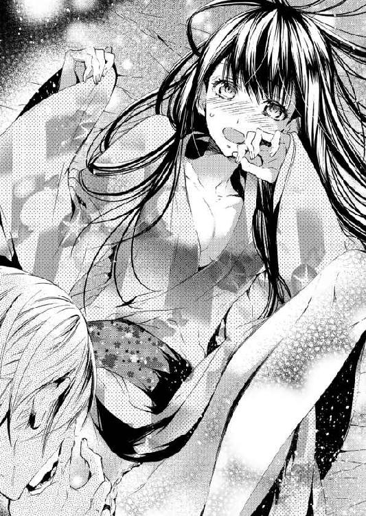
それはとんでもなく恥ずかしい、そして、不思議な感覚だった。
「そ、んな......やだ......どうして......？」
「あのときも、ここを触ったんだ。おまえ、気持ちよさそうに溢れさせてた。千花、思い出さないか？」
「やっ......わたし、そん、な......あぁ、んっ！」
指先でコリコリと引っ掻くように割れ目を撫でられ、千花は腰を引きながら、気がつくと左右にくねらせていた。
伊織は口を軽く開いて花芯を甘噛みする。
どちらもレースの上からなのに、千花の躰は初めての経験をトレースするかのようだった。
「あ、あ......やぁ、そんなの、ダメで......す。待って、待って......もう、そこは......ぁ、あぅっ！」
その快感には覚えがあった。同じ悦びを伊織に与えられ、千花は彼にすべてを捧げるつもりで、身を委ねたのだ。
伊織の指に直接触られ、淫芽と蜜窟の浅い部分を同時に弄られて、千花は初めての愉悦に全身を震わせた。
「あの......とき、も......わたし、気持ちよく、て......」
「思い出したか？ おまえは、初めてだって言いながら、シーツまで濡らしたんだ」
彼の言葉が恥ずかしくて、千花は顔を覆う。
嘘など言っていない。本当に伊織が初めてなのだ──いや、初めての男性だった。だが、今となっては証明することなどできない。
何も答えない千花をどう思ったのか、
「ほら、ここだ。ここから、トロトロの蜜を溢れさせて、俺をおかしくした」
普段の彼からは信じられないほど、いやらしい言葉を口にし続けた。そして、ショーツの上から蜜窟へと指を捻じ込んだ。
「あぁ、うっ、そんな......やだ、待って。そのまま、なんて......下着が、濡れちゃうから」
必死で耐えようとする千花だったが......。
羞恥心とは別に、その先にある悦びを躰が求めているようだった。
「かまわない。思いきり溢れさせたらいい。ホテルの一夜はともかく、俺たちは今夜、夫婦として結ばれるんだ。それに......もう、濡れてるぞ」
「えっ......あ、あ、あ、やぁーっ！」
低い声で『もう、濡れてるぞ』とささやかれた瞬間、千花は布団を握りしめ、下肢を爪先までピンと伸ばしていた。
はあはあと自分の荒い呼吸が聞こえてくる。
うっすらと目を開けると、木目の天井とそこから吊るされた、灯りがついたままの和風のペンダントライトが見えた。
（やだ、こんな明るい中で、わたしったら）
ライトに照らされながら、ショーツを穿いたまま達してしまったのだ。
千花は脚の間に生温かいぬめりを感じ、気持ちが悪いのに、自分ではどうすることもできずにいた。
「あの、い、伊織？ 灯りを、消して」
小さな声でお願いするが、
「灯りは消したくない。おまえの、イキ顔が見られなくなる」
伊織は頑として受け入れてくれない。
「じゃ、じゃあ、せめて、ちゃんと脱がせてから......」
それはそれで、まるで千花のほうからセックスを急かしているみたいだ。とてもそれ以上言えなくなり......。
だがその思惑は、呆気なく伊織に伝わってしまっていた。
「下着を脱がせてから入れてって言うなら、おまえの希望どおりにしてやってもいい」
「......ぬ、ぬが、せてから......れ、て」
頑張っているつもりだが、蚊の鳴くような声になってしまう。
すると、伊織は調子に乗ってもっと要求してきた。
「聞こえないな。それにもっと可愛く──全部脱がせて、早く奥まで入れて！ みたいなセリフがいいかな？」
笑いながら千花の声色を真似る姿に、
「......伊織の変態」
つい、ポツリと呟いてしまう。
「おまえなぁ。わかった、どうせ俺は変態だよ。言わないってことは、明るい中で下着をずらして入れてほしいってことだな？ よし、意識は落とすんじゃないぞ」
「あ、あ、きゃあっ！ 待って、わかったから、言うから......あんっ！」
しっとりと湿ったショーツがヒップから剥がされ、脚の付け根辺りまでずらされた。直後、伊織が覆いかぶさってきた。
濡れそぼつ蜜口に、熱い塊が押し当てられる。
「やだぁ......ぬ、脱がせて......着たまんまなんて、恥ずかしい」
「もう、遅い。結婚までの一ヶ月と初夜からの二週間、悪いがもう限界だ。早くひとつになりたい」
言い終えるなり、彼は腰を力強く動かした。熱い塊が胎内に挿入され、グチュリと蜜の溢れる音が千花の耳まで届く。
昂りは蜜襞を限界まで押し広げながら、奥へ奥へと進んでくる。
だがそれは、千花の記憶のどこを探してもみつからない感覚だ。決して不快なものではない。それどころか、伊織とひとつに結ばれていく感じがする。
だが、すでに知っている感覚かと問われたら......。
「痛むか？」
気遣いに満ちた伊織の声に、千花は首を振った。
「そうか。じゃあ、最後まで入れるぞ」
「最後って......ああっ！」
太ももが下腹部につくくらい折り曲げられ、真上から伊織の体重を受け止めた。寝室に、ジュプププ......と恥ずかしい蜜音が響き渡る。
それは伊織が千花の最奥まで、挿入を果たした音だった。
刹那──蜜襞をふたつに裂かれるような激痛が千花を襲う。
「い......やっ、やあっ！ い、痛っ......痛い、やだ、伊織......抜いてっ！」
こんな痛みは経験したことがない。
これがセックスだとしたら、あの日、ホテルのスイートルームで千花が経験したことはいったいなんだったのだろう？
（わ、わかんない。でも、こんなこと......絶対に知らない）
千花は息を止めて待っていたが、伊織は引き抜こうとはしなかった。だが、乱暴に動かすこともしない。
「ごめん、ごめんな、千花。これ以上は絶対に痛くしない。約束する。だから、もう少しだけ、ジッとしたままで付き合ってくれ。好きだ......千花、愛してる」
ふたりの躰はピッタリと重なっていた。
彼を最奥に感じるタイミングで、『愛してる』と言われて突き放すことなどできない。
千花ももちろん、伊織を愛している。最初に会ったときより、二度目のときより、祝言のときよりもっと、伊織の存在を感じるだけで胸が熱くなる。
だが、愛し合う最中にもかかわらず、とても愛を告白する格好ではないような気がする。
「こんな......格好で、ズルイ」
千花の言葉に彼はプッと吹き出し、
「たしかに。あんまりロマンティックじゃないな。でも、おまえを感じられてこの上なく幸せだ」
笑いながら顔を近づけてきて、伊織は優しいキスをした。
もどかしくなるほどに軽く触れるだけのキスを繰り返しつつ......。
彼の手は千花の腰に伸び、浴衣の帯をほどいていく。シュッ、シュルッと音が聞こえ、少しずつウエストが楽になる。
彼を受け入れたままの場所からも、しだいに痛みが引いていき、千花の中にわずかだが余裕が生まれてきた。
「伊織......今から、わたしが言うこと、信じてくれる？」
「ああ、信じる」
千花はおっかなびっくりで尋ねたのに、彼は内容も聞かずに即行で答えたのだ。
「どうした？ 信じられないと答えたほうがよかったか？」
慌ててブンブンと首を左右に振る。
「あの、あのね。わたし、こういう感覚って、絶対に経験してないと思う」
「......だろうな」
「メチャクチャ痛かったから、これって経験してたら、どれだけ酔ってても覚えてるわよ、絶対！」
「だから、そうだと言ってるんだが」
「伊織は疑うかもしれないけど......え？ 疑って、ないの？」
自分の気持ちだけを口にして、伊織の返事を全く聞いていなかった。だが、伊織も同じように思ってくれたようだ。
「男だって同じだ。酔っていても、女を抱いたかどうかくらい覚えてる。それに、記憶を飛ばすくらい酔っていたなら、ほとんどの男は勃たないだろうな」
伊織は平然と答える。
しかし、彼の言うことが正しいなら『たった一度でも、妊娠の可能性は否定できない。おまえは俺と結婚するんだ』という言葉はどうなるのだろう？
そんな千花の疑問に、
「しようがないだろ？ ああでも言わなきゃ、俺たちの縁はあそこでおしまいだ」
悪びれずに答えたあと、伊織は腰を軽く揺する。
「そ、そんな理由で......あ、ぁん......あの、何をし、て......あぁっ」
彼はゆっくりと円を描くように動かし続けた。
「ったく......プロポーズしたら喜んでたくせに、起きたら完全に忘れてるし......。──どうだ？ 痛くないか？」
昂った雄身の緩々とした動きに、千花の躰は快楽を取り戻し始めている。
彼の文句に言い返すべきか、それとも、気遣いに感謝すべきだろうか、よくわからない。
「もう、大丈夫かも......あ、でも、あのとき、わたしのこと、信じてくれなかったじゃ......あ、やぁんっ」
伊織は千花のことを『純情ぶって初めてのフリ』をしていたとなじったはずだ。
すると、彼は抽送をしだいに大きくしながら......。
「男を知ってるかどうかなんて、脱がさなくてもわかる。でも、見合いとも思ってない。何があったのかも覚えてないとなったら、ちょっとくらい苛めたくなるだろ？」
「それは、そうなんだけど......きゃっ！ あっ、あんっ、あーっ！」
挿入したまま、千花の脚からショーツをスルスルと脱がせていく。浴衣の前もはだけられ、気づいたときにはほとんど全裸の状態にされていた。
「その代わり、俺の横っ面を思いきり引っぱたいたじゃないか。あれで勘弁してくれよ」
そんなことを言いながら、今度は伊織自身が浴衣を脱いでいった。
二の腕や肩を中心に上半身はかなり鍛えているようだ。なんと言っても、刀匠が使う槌は先端の重さだけで八キログラム以上ある。持ち手は千花の身長と同じぐらい長いので、自在に扱うとなれば相当の腕力を要するだろう。
上半身の逞しさに見惚れているうちに、彼もすべてを脱ぎ捨てていた。
伊織は彼女の脚を左右に大きく開かせ......自分の腰に巻き付けさせる。それはこれ以上ないくらい、深く繋がった感覚を千花に教えてくれた。
すべてを晒すことは恥ずかしいが、とても気持ちのいいことだった。
「ああ......脳天が痺れそうな感じがする。千花、ちょっとだけ強くするけど、我慢してくれるか？」
「ん、もう、平気。さっきみたいに叫ばないから、伊織も気持ちよくなって」
千花は幸せを隠しきれない様子で、はにかみながら言う。
そんな彼女の目の前に、伊織はグッと顔を近づけてきた。
「馬鹿なこと言うんじゃない。もうとっくに、俺も気持ちよ過ぎて困ってんだぞ」
「......伊織」
彼の首に手を回し、千花は自分から唇を重ねていった。
しだいに抽送が激しくなり、彼女の息も荒くなる。とてもキスを続けていられなくなり、ただ、ぶら下がるように彼の首にしがみつく。
「あっ、あっ......ん、ん、伊織......わた、し、わたし......もう、あっ、あ......ダメ、ダメーッ！」
限界まで昂ったペニスに蜜襞を抉るようにこすられ、千花は痛みとも快感ともわからない感覚に囚われた。
苦しいのに気持ちがいい。
伊織のもたらす劣情に身を委ね、何度目かの快楽の波が押し寄せたとき──。彼の欲棒に蜜窟の底を穿たれた。
彼は動きを止め、千花の膣内に埋もれた部分だけをビクビクと蠢かせる。
白濁の飛沫を浴びせられた瞬間、千花の全身が悦びに打ち震えた。
初めての夫婦の睦み合いから数時間が経った。
伊織は千花の中に二度目の放出を終え......ようやく落ちついた様子で、彼女の髪を撫でてくれる。男性に腕枕をしてもらい、甘えるように身体を預けるなど、何もかも初めての経験だった。
「大丈夫か？ ちょっと、無理させたよな？」
それは心底申し訳なさそうに聞こえる。
「うん、とっても痛い」
「どこが痛い？」
聞かれたら返答に困るような場所だ。
「ど、どこって、そんなの聞かなくても......わかってるくせに」
「男の俺にわかるわけないだろ？ 痛いところ、撫でてやるから言ってみろよ」
極上のシルクで頬を撫でられたような、そんな甘やかな声でささやかれ、千花は素直に答えてしまいそうになる。
「それは......えっと、伊織に......あ、あれを......」
だが、途中で我に返った。
痛む場所を撫でられるということは、また気持ちよくなってしまって、三回戦に突入することになるのではないか、と。
「そんなこと言って、また......さっきの続きとか、考えてるんでしょ」
千花が怒った声で言うと、彼は声を立てて笑いながら、「ばれたか、残念」と答える。
「もうっ！ 体力あり過ぎてついていけない。伊織って、ひょっとして絶倫？」
彼の胸に頬を押し当てながら、ちょっと拗ねたように言う。
すると、伊織は彼女をからかうように言い返してきた。
「さっきは変態で、今度は絶倫か？ おまえ、男は知らないくせに、そういうことだけは知ってるんだな。耳年増ってヤツ？」
耳を付けても『年増』という言葉は女性に対して鬼門だ。千花はムッとして、狭い布団の中、寝返りを打って伊織に背を向ける。
「おあいにくさま！ お、男も、知ってます！ だって、人妻ですから」
すると、彼はすぐに距離を詰めてきた。
「へー、そうなんだ。それで？ 誰がおまえを女にしたんだ？」
千花に伊織の名前を言わせて、恥ずかしがるところを見て喜ぶつもりでいるのだ。
（なんか、悔しい。負けた気がする）
理性では勝ち負けではない、とわかっているが......。
さんざん恥ずかしいところを見られて、しかも伊織のほうは余裕たっぷり、というところが許せない。千花は掛布団を力いっぱい引っ張り、自分の身体に巻きつけた。
「おまえ、そんなに俺の裸が見たいのか？」
「知らない！ 人のこと馬鹿にして、からかってばかりで......ひとりで向こうの布団に行って寝たら？」
千花は掛布団に包まったまま背中を向ける。
もちろん本心ではない。だから、本当に伊織が別の布団に行ってしまったら、きっと寂しくて泣き出してしまうだろう。
その気持ちが伝わったのかどうかはわからないが......。
伊織はそっと千花の背後に近づき、掛布団ごと彼女の身体を抱きしめた。
「俺は別に......おまえのことを馬鹿になんかしてないし、からかってるわけでもない」
「じゃあ、何？」
「せっかく本当の夫婦になったんだぞ。イチャイチャしてどこが悪い」
「......」
千花をからかって遊ぶことのどこがイチャイチャになるのだろう？
わかるように言ってもらいたくて、尋ねようとしたとき、
「もうしばらくは予定が詰まってて、新婚旅行にも連れて行ってやれそうにない。でも、次の日曜は丸一日休みが取れたから、岡山市内でデートしよう。おまえ、まだ観光もしてないだろ？」
伊織は照れくさそうな声でボソッと呟いた。
結婚してから二週間、千花は自分がここでの暮らしに慣れることだけで精いっぱいだった。まだ退屈を感じることはないが......。
（そう言えば、普通は行くよね、新婚旅行。何もかも急だったから、忘れてた）
彼の仕事に勤務時間は決まっていない。だが予約をこなすためには、この先何年も休みなしで毎月二本、仕上げていかなくてはならなかった。
しかも、刀を打たないときは、一文字派の代表として営業や事務的な仕事が山のようにあるのだ。
これまでは、ほとんど休みなしで働いてきたという。
「週一で休みは取るようにする。東京に行く用事は人に任せることも多かったけど、俺が引き受けて......おまえも一緒に連れて行く。結婚前にいろいろできなかった分、これから埋め合わせするから──知らない、とか言うなよ」
優しい言葉は一瞬で千花の心を溶かした。
伊織は甘えるように彼女にもたれかかり、抱きしめる手に力を込めてくる。同時に、千花の尾てい骨の辺りを、硬いものでツンツンとつついてきた。
「わ、わかったから。もう、言わないから......だから、そんなとこ、つつくのはやめて」
「つつくって、コレ？」
ふたたびグッと押され、
「ひゃぁ、んっ！」
身体に巻いた掛布団が上に捲れてしまい、隙間の空いた部分から、硬くてぬめりのある棒が入り込んできた。
お尻の間から割れ目までを撫でられ、千花の口から変な声が零れる。
「ソ......ソレ、ソレって、ひょっとして......アレ？」
「アレってドレ？」
「えっと、伊織の......やだ、もう、馬鹿っ！」
うっかり口にしてしまいそうになり、千花は頬がカッと熱くなって怒鳴りつけてしまう。
どうやら伊織の下半身は、あっという間に復活してしまったらしい。
しかし、彼女が結婚までに即席で覚えた知識では、男性は一度放出すると柔らかくなり、ふたたび挿入可能な硬さになるには、けっこうな時間を要したはずだった。
（伊織が特別なの？ それとも、わたしの覚えた知識が間違ってるの？）
高校時代に恋愛スキルを積んでおかなかったツケが、ここで回ってきているようだ。
「あの......伊織、ごめんね。ひょっとして、わたしが経験ないせいで、伊織のほうは全然満足できてないってことなのかな？」
完全に自分のほうが間違っている気がして、千花は謝ってしまった。
「あのなぁ......嫁がバージンとわかって、不満を言う男はいないんじゃないか？ 俺の場合、満足し過ぎて完全に箍が外れた感じだ。自制できない......もう一回、いいか？」
千花の答えも待たず、伊織は彼女を前に押し倒した。
彼女の腰を摑むと、軽く手前に引き寄せ──白濁の液が流れ出てくる場所に、肉棒をスッと押し当てる。
ふたりの体液が混ざり合った場所に、彼はゆっくりと入り込んできた。
背後から挿入され、彼の姿が見えないことに少しだけ不安を感じる。だが、すぐに身体をピッタリと重ねるように抱きしめられ、その不安は霧消していった。
「おまえを抱きしめていると、信じられないほど興奮する。繋がりたくて、どうしようもなくなるんだ。──俺、おまえ限定で絶倫らしい」
そう言われたときは冗談かと思ったが、背後に感じる彼の気配は、真剣そのものだ。
「そ、それでも、いいよ......でも、わたしだけにして。見学が女の人ばっかりでも、浮気したら......ダメなんだ、から......あっ、んっ、やぁん」
千花が『いいよ』と答えたとたん、伊織は抽送を始めた。
初めはゆっくりと、しだいにスピードを上げて、荒い息遣いとともに彼女の躰を突き上げる。やがて、ふたりの間にある掛布団は取り去られ、素肌が密着していた。
背後から回された手が、千花の可愛らしい胸を揉みしだき──。
振り返った肩越しに、ふたりの唇が重なる。隙間もないような距離に伊織を感じ、夫婦になったことを実感する千花だった。
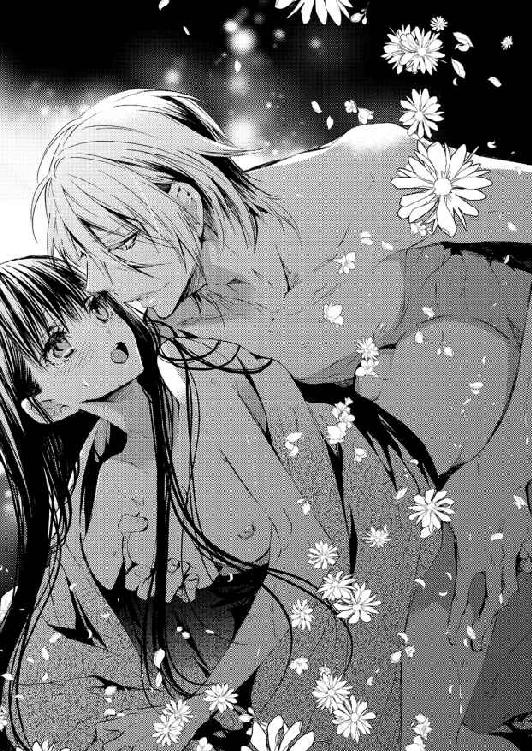
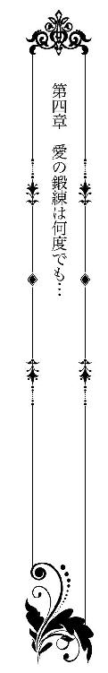
本当の夫婦になった一週間後──。
この日は約束の初デートの日だった。朝食を終えたらすぐに出発しようと話していたところ、伊織は急遽、〝森〟に呼び出されてしまう。
結局、出発はお昼直前になってしまい......。
千花はそのとき、『〝森〟の駐車場で待ってる』という電話をもらい、悩んでしまった。
（着替えに帰ってくると思ってたのになぁ。ひょっとして、伊織は袴姿で行くの？）
彼は白の半着に深緑の袴姿で出かけたはずだ。落ちついた伊織に比べ、いつもの千花の格好だとアンバランスかもしれない。
どうしようかと悩んでいると、
『お嫁入りに持って来られた小紋をお召しになれば？』
十喜子がそう助言してくれたのだった。
咲良家に嫁げば必要になるだろうと思い、祖母が千花のために用意しておいてくれた中から、淡いピンクの花柄の小紋を持ってきている。だが日常生活では着ることもなく、とくに出かける用事もなかったため、こちらでも箪笥の中で眠ったままになっていた。
『女房面して立ってればいい』
伊織はそんなふうに言ってくれた。だが世間一般の二十五歳に比べ、着物姿の彼は実年齢以上に見える。
一方、千花は......ごく普通だろう。いや、せめて普通だと思いたい。
せっかくの初デート。せめて周囲からお似合いのふたりだと言ってもらいたい。その思いに千花は一念発起し、十喜子に手伝ってもらって大急ぎで小紋に着替えたのだった。
電話で告げた以上に待たせてしまったので、伊織は怒っているかもしれない。少しでもと思い、千花は小走りに駐車場へと駆け込んだ。
ところが、駐車場内を見回しても伊織の姿はない。
（約束した時間から十分くらい遅れちゃったけど、まさかすれ違った？ それとも、怒って仕事に戻った、とか？）
そのとき、視線の端に人影を捉えた。
駐車場の隅っこに軽自動車のミニバンが駐まっている。色は黒、軽自動車の中で一番人気の車種ではないだろか。車に詳しくない千花でも知っている名前の車だった。
その車の横に、若い男性が立っている。
無地の黒いＴシャツに、ダメージ加工されたジーンズ。足元には迷彩柄のスニーカー。
キャップを目深にかぶっていたため気づかなかったが......男性が顔を上げた瞬間、千花はドキッとした。
そこに立っていたのは伊織だった。家を出たときとは全然違う装いだ。
その姿は最初に会ったときの彼を思い出させる。あれは二月、一年のうちで一番寒い時期だった。今は身軽なせいか、あのときより若く思えるくらいだ。
千花は驚き過ぎて、彼をみつめたまま呆然としていた。
すると、伊織のほうも彼女の姿に気づいたらしい。
彼は一瞬目を見開き、少しばつが悪そうな顔をして近づいてくる。
「こないだの、ヒラヒラしたミニスカートとか、お嬢さんっぽいブラウスとか......少しは合わそうかなと思って、若い奴に借りたんだ」
キャップを外し、髪をかき上げながら苦笑した。
そんな彼を見ていると、千花もクスッと笑ってしまう。
「わたしも......。家を出るとき袴姿だったから、隣に立ったときお似合いだって言ってほしくて......でも、着替えてこないほうがよかったね。デートの時間減っちゃった」
そのとき、伊織の大きな手が彼女の頭をふわっと撫でた。
「いや、そうは思わない。──綺麗だ」
彼の言葉が嬉しくて、胸がくすぐったくて、千花も同じように返したいのに、上手い言葉がみつからない。
すると、建物のほうからヒューヒューとふたりを冷やかす声が聞こえてきた。〝森〟で働く大勢の人が、こちらを見て笑っている。
うつむく彼女に伊織は焦った様子で声をかけた。
「ほら、早く乗れ」
千花は無言でうなずき、車に駆け寄った。
「えっ!? 伊織って、車持ってたの？」
この車も、服と一緒に借りたのだろうと思っていた。
ところが、『いや、俺の車だけど』という返事に千花はびっくりする。
「咲良の屋敷がある辺りは駅も遠いだろう？ バスの本数も少ないし、車がないと不便なんだ。仕事場への往復は徒歩だから、普段は使わないけどな」
徒歩圏内に大手のコンビニやスーパーができたのが、彼が高校生のときだった。中学生のころまでは、ちょっとした買いものにも自転車で片道三十分以上かけていたという。
そう言えば、こちらに嫁いできて最初に驚いたのが『免許と取ったらまず軽四』という周囲の話だった。千花と同じ世代で、ひとり一台所有していると言っても過言ではない。場合によったら大学生まで、自分の車を持っていた。
身分証明以外に免許証を使ったことのない、ペーパードライバーの千花には考えられないことだ。
「千花、おまえも免許持ってるんだろ？」
「......うん、まあ」
「スペアキーを渡しておくから、好きなときに乗れよ」
当たり前のように言われてしまっては、まさか、『教習所を出てから一度も運転してないから、無理！』とは言えなくなる。
そしてこのとき、千花は気づいてしまった。
恋人の──伊織はすでに夫だが、とにかく特別な男性の運転する車の助手席に乗る。それはまさに、千花が憧れていたデートのシチュエーションだということに。
そう考えるだけで、千花の気分はとんでもなく高揚してしまう。
チラッチラッと運転席に座る伊織のことがどうしても気になる。
しだいに、ジッとみつめてしまい......ハンドルを摑んだり、なぞるように動かしたりする指先がセクシーに思えてドキドキする。
さらには、半袖から伸びた腕は見事なくらいに筋肉が隆起していて、ところどころに見える火傷の痕すら、逞しく感じてしまうのだ。
自分はあの指先に触れられ、あの腕に抱きしめられた。
ふたりで過ごした夜を思い出し、千花の頬は熱くなる。
「おい。あんまりこっちを見るな」
「ど、どうして？」
「妙に色っぽい視線が気になって、事故りそうになる」
伊織は耳まで赤くしながらそんなことを言う。
「もう、変なことばっかり想像してないで、ちゃんと運転してよね」
変なことを想像しているのは、むしろ千花のほうだろう。心の中でそんな突っ込みを入れつつ......。
それを伊織に知られたくなくて、彼女は慌てて運転席と反対側を向いた。
呼吸を整えながら、窓の外の景色に意識を集中する。
長閑な町並みが流れていく。
たしかに東京都内とは比べるべくもないが、東京とはいえ、都心を離れたらどこまでも高層ビルが連なっているわけではない。
自然と生活の場がすぐ近くにあることや、国道沿いの建物に昭和の香りが残っていることなど、地方独特の空気は漂っているものの、結局は同じ日本国内。町並みはそう変わらず、その風景は千花に安らぎを与えてくれた。
だがそのとき、ふいに今朝のことを思い出し、千花は大きなため息をついてしまう。
「どうした？ ため息の原因は俺か？」
「あ、違うの。そうじゃなくて......」
少し躊躇ったが、千花は思いきって伊織に話すことにした。
出かける前のこと──。
伊織が〝森〟に向かってしばらくして、辰吉が鍛刀場から帰ってきた。
朝早くから出ていたため、早めの昼休憩だと言う。だがその直後、ひとりの女性──同じ町内に住む伊藤まつ子がお屋敷にやって来たのだった。
まつ子は祝言の日に、お手伝いにきてくれた女性だ。伊織のことを『男気はある人なんだけど』と言っていた。まだ六十代だが、五年ほど前に大腿部を骨折し、軽い畑仕事しかできなくなってしまったと聞いている。
まつ子が来ることは辰吉も承知していたらしく、彼の弟子がまつ子の家から大きな荷物を運び込んでいた。
『実は千花さんに見てほしいんじゃ。わしは、刀以外はようわからんのでなぁ』
首を捻る千花の前に並べられたのは、なんと雛飾りだった。
『これって......古今雛、ですよね？ それも御殿飾り。明治か大正辺りのお品ですか？ すっごく豪華ですねぇ』
京都の御所を模した立派な御殿があり、その中にお内裏様とお雛様が座っていた。御殿のすぐ前に三人官女が立ち、階段の下に五人囃子の姿がある。道具類は三段目、四段目に飾られるか、広い部屋に飾るときは別に場所を用意することもあった。どちらにせよ、かなり場所を取るタイプの雛飾りだ。
『さすが若先生のお嫁さんねぇ。なんでも、明治の終わりに特別注文でこしらえた品らしくて、姑が遠くから嫁入りするときに持ってきたの。でも夫は男兄弟ばかり、孫も男ばかりでね。姑が亡くなってからも毎年出して飾ってたんだけど......いろいろ事情ができて。これが売れるかどうか知りたくて、大先生にお願いしたの』
千花が骨董商の娘で、彼女自身も骨董の修業をしていたと聞き、見当だけでもつけてほしい、と頼まれた。
たしかに祖父は古い雛飾りも取り扱っていた。千花も立雛や享保雛など、いろいろ目にしたことはある。だがとてもではないが、年代を見極めて鑑定する自信はない。
『まだまだ修行中で......』
そう言って断ろうとしたのだが、正確じゃなくてもだいたいでいいと言われてしまったら、それ以上は断れなくなってしまう。
だが、雛飾りはよほど古いものか、有名な人形師の作品でなければ売買が難しい。
なぜなら、雛飾りは女の子が生まれたときに、その子の幸福を願って購入されるものだ。その性質から言って、中古は嫌がられる。
加えて、現代の住宅事情もあった。飾る場所にも仕舞う場所にも困るような御殿飾りより、小さくて新しいものが流行だった。
この雛飾りも、注文して作ったときは相当な金額だったと思う。状態もよく、本当に明治時代の品なら歴史的価値もある。
欲しがる人がいれば数百万円で取引されてもおかしくないが......。
『骨董商に売ったら数十万か、ひょっとしたら数万にしかならないかもしれません。博物館辺りだと、たぶん寄贈してほしいって言われると思います』
まつ子の表情が曇っていくのを見て、千花の声はしだいに小さくなる。
とにかく、自分のような見習いではなく、ちゃんとした骨董商に鑑定してもらったほうがいい、と言おうとしたとき──。
『千花さんは、このお雛さんをどう思うかの？』
辰吉に尋ねられ、彼女は正直に答えた。
『いいお顔をなさっていると思います。きっと、お姑さんにもまつ子さんにも、とっても大切にされてきたからじゃないでしょうか？』
『そうか、そうか。なら、このお雛さんはわしが買おう。咲良家の新しい娘のために、よき守り雛になってくれるじゃろう』
辰吉の『新しい娘』の言葉に、まつ子の視線が千花のお腹に注がれる。
その視線の意味は......言わなくてもわかるだろう。
『ち、違いますっ！ まだ、そんな......おじい様っ!?』
千花は大慌てで、まつ子に向かって手を振りながら答える。
結婚しているのだからかまわないと思うが、初めて結ばれたばかりの身としては、その誤解はなんだか悔しい。
だがそのとき、辰吉は千花の頭をポンポンと撫でたのだ。
『嫁入り道具にお雛さんは持ってきとらんかったからのう。新しいもんもええが、これも何かの縁じゃ』
辰吉がそう言うと、まつ子は涙を流し始め......。
千花は呆気に取られるばかりだった──。
そこまで話すうちに、車はすでに岡山市内に入っていた。
一車線だった国道も二車線になり、見慣れたコンビニやハンバーガーショップの看板が目に映る。
伊織は黙って彼女の話を聞いてくれ、途切れたところで口を開いた。
「古いものは相性もあるから、気に入らないなら......」
「そういうことじゃなくて！」
彼の言葉をひったくるように遮ってしまった。
雛飾りはひとりにひと飾りで、役目を終えたら供養するほうがいい、という話もある。だが、古いものを大切にしてきた千花の思いは違う。
辰吉の言うとおり、これも何かの縁だ。きっとあの御殿飾りは来るべきして千花のもとにやって来たのだろう。他所の土地から嫁入りしてきたまつ子の姑と、同じ立場の千花を守ろうとして来てくれたのかもしれない。
それとは別に大きな問題がひとつ──。
「だって三百万なのよ！ おじい様ったら、そんな金額で買うって言うんだもの！」
狭い車内で思わず大きな声を出してしまい、千花は言い過ぎたことに気づいて一気にトーンダウンした。
「ご、ごめんなさい......大きな声を出して。おじい様の気持ちはありがたいと思う。それに、咲良家にとったらたいしたお金じゃないのかもしれないし。でも、わたしだけのためにって思ったら、なんだか申し訳なくて......」
あの雛飾りに三百万円の価値がない、とは言わない。その金額を出しても欲しいと思うコレクターや研究者はいるだろう。
だが、一般的に考えれば法外な金額だと思う。
それだけではなく、あの品が古今雛であることは間違いないが、年代にはいささか自信がない。千花は『明治か大正辺りのお品』と判断したが、実際にはもっと新しい品という可能性もあるのだ。
もちろん、まつ子が嘘をついているとも思えない。彼女自身、辰吉が口にした金額に驚き、ひたすら泣いていた。
ところが、伊織は千花が金額を口にしたとたん、「ああ、そういうことか」と言いながらうなずいた。
「ああ、って。何か知ってるの？」
「思い出したんだ。おまつさんの家は、今度息子夫婦と同居するんで建て直すって話を。でも、資金繰りが厳しいらしい──」
まつ子は夫に先立たれ、これまでひとりで暮らしてきた。だが、怪我でいささか不自由になった母を案じて、息子夫婦が孫を連れて戻ってきてくれることになったと言う。
問題は住む場所で、今ある平屋の小さな家ではとても暮らせない。息子がローンを組んで建て直すと言うが、担保となる土地価格が低いために、どうしても足りなかった。
「おまつさんの夫も刀匠だったんだ。でも酒癖の悪さが元で仕事を辞めて......結局、飲み過ぎて六十そこそこで亡くなった。爺さんにとっちゃ弟弟子だったらしいから、いろいろ思うことがあったんだろうな」
伊織はしみじみとした口調で言う。
彼自身は、まつ子の夫についてほとんど知らない。伊織が鍛刀場に出入りするころには、すでに「近所に住むただの酔っ払い」になっていたせいだ。
そんな父親の姿を見て、まつ子の息子はサラリーマンの仕事を選んだ。同居しても会社は辞めず、岡山市内まで通うという。
「それでも、田舎にとっちゃ若い世代が戻ってくるのはいいことだからな。話を聞いたとき援助してやりたそうだったけど、それはそれでお節介だろ？ あっちだって、望んでないかもしれない。だから、雛飾りがいい縁になったんだ。爺さんも喜んでるよ」
辰吉のことだけでなく、伊織もどこか嬉しそうだ。
咲良家には刀剣だけでなく、三百年にも及ぶ先祖伝来の品がたくさんある。鍛刀場をはじめとした刀作りに必要な環境を維持するため、広大な森も所有している。
だがそれは、辰吉や伊織が勝手にしていいものではない、と話す。
「このご時世に三百万は楽な金額じゃない。でも俺は、客寄せでもなんでもやって、〝櫻一文字〟と職人たち、あの土地の人たちを守っていくつもりでいる」
「......伊織」
千花は彼の熱い思いを知り、胸がいっぱいになる。伊織の名前を口にするだけで、それ以上何も言えなくなるくらいに。
すると伊織は、そんな彼女の態度を誤解したらしい。
「あ、いや、おまえは特別だから。絶対に苦労はさせないし、何があっても一番に守るから、そんな心配そうな顔はするなよ」
言い訳するように付け足している。
そんな伊織を見て千花は笑みが零れた。
「心配なんてしてない。ただ、おじい様も、伊織もいい人だなぁって思っただけ」
「それって、褒め言葉か？」
「もちろんよ！ 〝森〟で働いてる人、そうじゃない人、関係なしにみんなから慕われてるもの。だからわたしも、優しくしてもらえるんだと思う」
だが、そんな千花の言葉を伊織はやんわりと否定した。
「それは俺たちのせいじゃない。おまえが優しくしてもらえるのは、おまえがみんなに優しいからだ。俺の嫁でも嫌な女なら、誰も近づかないさ」
サラリと言われて、千花の胸はじんと熱くなる。
嬉しくて、つい彼のＴシャツの袖を抓み、ツンツンと引っ張った。
「伊織も優しくて、すっごくかっこいい。なんて言うか......惚れ直しちゃった、みたいな」
かなり照れくさかったけれど、千花は胸に浮かんだ思いを言わずにはいられなくなる。
次の瞬間──急ブレーキがかかって車はガクンと停まった。
「ちょ......ちょっとぉ！ せっかく褒めてるのに、なんて運転するのよ？」
運転席のほうに身体を向けていたため、シートベルトの隙間から滑り落ちそうになり、思わず千花は叫んでしまう。
だが伊織は伊織で言いたいことがあるらしい。
「おまえが変なことを言うからだ！ ったく、なんにも知らないくせに、ときどき妙に男を煽る奴め」
「煽ってないもの！ わたしのせいじゃなくて、伊織がいやらしいことばっかり考えてるからじゃない！」
「それ以上言うなら、デートの行き先を国道沿いにあるラブホに変更するぞ」
彼の視線の先に、〝サービスタイム全室三千円〟と書かれた垂れ幕が見える。
ラブホテル未経験の千花はちょっと気になったが......とりあえず、今は口を閉じることにしたのだった。
☆ ☆ ☆
後楽園の駐車場に車を預けると、園内を伊織と並んで散策した。
水戸の偕楽園、金沢の兼六園と並べて、日本三大名園と称される有名な庭園だ。千花はテレビの特番で、お正月にタンチョウが飛ぶシーンくらいしか知らなかったが、広大にもかかわらず計算された美しさが際立つ庭園だった。
後楽園に来て、着物姿でよかったと思ったことがふたつある。
ひとつは、千花が想像していた以上に後楽園は和の雰囲気に包まれていた、ということ。着物がしっくりと馴染んでおり、家族連れの子供から『着物のお姉さんきれいだねー』と言う声が聞こえ、思わず笑顔になった。
そしてもうひとつ......。
草履で歩く千花が危なっかしそうだと言い、伊織がずっと手を繋いでくれたこと、だった。
彼に手を引かれて歩く間中、千花の頬は緩みっぱなしだ。
園内を横切り、南門から出て岡山城へと向かう。城内から天守閣まで見て回り、下りてきたときにはすでに十六時を回っていた。
「お城のお茶屋さんでうどんまで食べちゃったから、お腹が減らないね」
千花が笑いながら言うと、伊織は呆れたように返してきた。
「うどんだけじゃないだろ。デザートは別腹とか言ってパフェまで食うし。その前に、後楽園では団子も食ってたじゃないか。......太るぞ」
「そ、その分、今日はいっぱい歩いたもの。それに、胸にお肉がついたら、伊織は嬉しいでしょ？」
手を握るだけじゃなく、彼の腕に抱きついてみる。
伊織は慌てるかと思ったが、さすがにずっと寄り添っていたこともあり、彼も慣れたようだ。
「腹についたらどうするんだ？ まあ、抱き心地のいいほうが俺は好きだけど......」
「伊織の目、エッチになってるよ」
「おまえがさせてるんだろうがっ！」
むきになって言い返してくる彼の向こうに、千花はあるものを見つけた。
まさか、こんな場所で見かけるとは思わなかったもので、びっくりして声を上げてしまう。
「たこ焼きの屋台がある！ お祭りでもないのに、こんなところで売ってるんだ！ ねえねえ、半分こしようよ。わたし買ってくるね」
後ろから「腹減ってないんじゃなかったのか？」という声が......。
千花は聞こえないフリをしたのだった。
お堀沿いの公園のベンチに座り、たこ焼きを食べたあと、千花はトイレでお化粧直しをしていた。公衆トイレにもかかわらず、観光地に近いせいか新しくて綺麗だ。
ちょっとした着崩れを直しながら、真新しい鏡に顔を映した。
（たこ焼きの青のりってクセモノなのよね。でも、あるほうが断然美味しいし......）
頭の中に『色気より食い気』という言葉が浮かぶ。しかも、初デートなのに食い気が勝っているというのは、女としてどうなのだろう。
夫婦とはいえピカピカの新婚だ。伊織には、千花の可愛いところや、女らしいところを見せたい。そう思う反面、もう結婚しているのだから、という気持ちも湧き上がってきて......。
自分は伊織に愛されている。
初めて会ったときのことを覚えていてくれて、お見合いまでセッティングしてくれた。千花のために懐剣を打ち、それを持って求婚するために会いにきてくれたのだ。
そんなことを考えていると、本当の夫婦になった夜のことまで思い出される。
『俺、おまえ限定で絶倫らしい』
頭をよぎった台詞があまりにも恥ずかしくて、誰もいないのに赤面してしまう。
（丸一日って言ってたけど......このまま帰るのかな？ それとも、ホテル......とか？）
来る途中で見かけた〝サービスタイム全室三千円〟を思い出し、千花は顔を振って急いでトイレから出たのだった。
伊織はすぐ外で待っていてくれているはずだ。
そう思って探すが、トイレの近くには見当たらない。
（どこに行っちゃったの？ 電話、かけてみようかな？）
千花がバッグに手を伸ばしたとき──。
「全然変わらないな、伊織は」
伊織の名前を呼ぶ男性の声が上から聞こえてきた。
トイレはお堀沿いから石段を下りたところにある。どうやら伊織は先に上がってしまったらしい。
（女子トイレの前だから？）
そう言えば千花が鏡の前に立っていたとき、小学生の女の子を連れて母親が入ってきた。いつもの伊織の格好ならそうでもないだろうが、今日の服装だと変な目で見られたかもしれない。
困ったような彼の顔を想像したとき、千花は笑いが零れた。
ここの石段に手すりはない。草履を履いている千花は、転ばないようにゆっくりと上がって行く。
すると、別の声も聞こえてきて......。
「そういう格好してると、大学のころと一緒ね。イケメン刀匠、なんて呼ばれて、雑誌の取材も来てたっけ？」
「そうそう、伊織くんってホント、モテてたもんねぇ」
今度は若い女性の声だった。それもふたりいるらしい。彼女たちが口にした言葉は、内容が内容だけに千花の心を乱し始めた。
「こんなところで、大学の同期が揃って何してるんだ？」
「お言葉だな。合コンだよ、合コン。あ、そうだ！ おまえこそ、こんなとこウロウロしてるぐらいなら暇だろ？ 一緒に来いよ」
さっきとは別の男性の声に、千花の足は止まった。
（え？ 嘘......ひょっとして、結婚のこと知らないの？）
そう言えば、祝言に出てくれた中に、伊織の大学時代の友人はひとりもいなかった。
千花のほうは遠いうえに急だったこともあり、両親以外は誰も呼べなかったが、伊織はその限りではなかったはずだ。
「いや、俺は......」
「待って待って、大学のとき、伊織くんって由香里と付き合ってたよね？ あの子も来るから......あ、来た来た！」
女性の言葉に千花の足は一瞬で固まった。
（伊織が大学時代に付き合ってた女性──って、やだ、会いたくない）
千花にとって伊織は、何から何まで初めての相手だ。だが、伊織にとってはその限りではない。
それくらいのことは理解していたつもりだったのに......。
目の前に事実を突きつけられ、千花は思わずトイレに逆戻りしたくなる。
「由香里ーっ!! こっち、こっち。ほら、伊織くんに会ったのよ。凄い偶然でしょう？」
「あんた、彼とやり直したいって言ってたじゃない。チャンスよ、チャンス！」
伊織はなんと答えるのだろう。どんな顔をしてその女性を見るのだろうか。
いろいろ想像するだけで、膝がガクガクと震える。
「......伊織くん......」
懐かしさと恋情を纏った女性の声が聞こえてきた瞬間、矢も楯もたまらず、千花は石段を上がり始めた。
これまでずっと、恋愛には消極的な千花だった。何ひとつ、自分から動いたことがない。告白したことはもちろんなく、唯一の彼氏候補も紹介だった。
伊織のことも、おそらく自分からは何もせず『もう一度会えないかな』と思い続けて終わったことだろう。
だが、今の千花は違った。
（盗られたくない。伊織のことは、誰にも譲りたくない！）
由香里という人がどんな女性かわからないが、堂々と『伊織の妻です』と言って出ていこう。
千花は覚悟を決めて一番上の段に足を置く。そのとき、目の前に人影があり彼女の腕を摑んだ。
「ずいぶん遅かったな」
伊織だった。
彼はまるで、このタイミングで千花が上がってくることがわかっていたかのようだ。
「ど、どうして？」
「リボンが見えた」
今日は髪をアップにする時間がなかったので、大正時代の西洋下げ髪っぽい髪型にして、リボンのついたバレッタで留めていた。千花が足元を見ながら上がってきたら、一番に見えるのはたしかにこのリボンだろう。
「下は狭いだろ？ 上で待ってて、出てきたら迎えに下りるつもりだった。でも......」
彼は一旦言葉を止め、親指で後ろを示しながら「大学の同期だ」と付け足す。
そこにはふたりの男性と三人の女性がいた。五人とも心底驚いた顔をしている。その中からひとりの男性がこちらに近づいてきた。
「ひょっとして、彼女連れ、だったわけ？」
探りを入れるような声色で伊織に尋ねている。
すると伊織が返事をする前に、ひとりの女性が声を上げた。
「もう、デートならデートって言わなきゃダメじゃない。伊織くんは相変わらずなんだから。ねえ、この人と付き合うのって大変でしょう？」
彼女ひとり、奇妙なくらいのハイテンションではしゃいでいる。
（あ......この人だ！ 伊織の元カノ、由香里さんだっけ？）
さっきは伊織の名前を呼んだだけだったが、それでも聞き分けられるのは、恋する女の直感だろう。
チラッと聞こえた由香里の声の印象から、もっとセクシーなタイプを想像していた。
だが実物は、セミロングの髪はふわっとしていて、体形は華奢で千花より背も低い。クリーム色のフェミニンなワンピースがよく似合っていて、女子大生でも通用しそうだった。
「はじめまして丸岡由香里と言います。伊織くんって、口下手っていうか、朴訥っていうか......でも、ちゃんと恋人って言ってほしいわよね。あたしのときみたいに、悲しい思いさせちゃダメよ」
千花はそこまで聞いたとき、由香里のことを『意外にいい人なんだな』と思った。伊織だけでなく、千花にもニコニコと笑いかけてくれたせいだ。
（大人の女性ってこういうもんなんだ。わたしなんて、あの懐剣が『嫁になる女のため』って聞かされただけで、すぐに帰ろうって思ったくらいショックだったのになぁ）
千花もきちんと挨拶しよう、と思ったとき、わずかな差で伊織が先に口を開いた。
「──恋人じゃない」
そのひと言に、五人はポカンと口を開けている。
さすがの伊織も、これだけでは説明になっていないと気づいたのだろう。
「ああ、いや、そうじゃなくて。先月、結婚したんだ。だからこいつは、俺の嫁さん」
言うなり、五人の前で千花の肩を抱き寄せた。
「あ、あの......常盤、じゃなかった、咲良千花です。しゅ......しゅ......いえ、えっと、よろしくお願いします！」
咲良姓を名乗ることは、嬉しいけどまだまだ恥ずかしい。さらには新妻の挨拶の定番、『主人がいつもお世話になっております』と言おうとしたのだが......。『主人』と口にするだけのことが、こんなにも勇気のいることとは思わなかった。
どうしても言えず、適当にごまかした。
伊織は千花のそんな新妻らしい葛藤に気づいたのだろう。手で口元を隠し、懸命に笑いを噛み殺している。
五人はビックリしながらも口々に「おめでとう」と言ってくれた。
千花はホッとしたが......直後、由香里は伊織と千花に向かって笑いながら言い放った。
「おめでとう、ホントによかったね。伊織くんって、付き合ってた女の子みんなに結婚申し込んでたもの。でも、大学出てすぐ結婚なんて、あたしには考えられなかったのよ。それに、結婚してくれるなら誰でもいい、って感じだったし......普通は断るかなぁって」
いかに恋愛スキルの低い千花でも、これだけ言われたら、由香里の言葉が〝善意から〟ではなく〝悪意から〟だとわかる。
周囲はもっとわかったらしく「まあまあ」とか「もうやめなよ」とか言っていた。
だが、由香里のほうはまだ言い足りなかったらしい。
「あたし、よけいなこと言っちゃったかな？ 気を悪くしたらごめんなさいね」
いい人と思った笑顔は、よくよく見ると目が笑っておらず、ちょっと怖い。
そのとき、肩を抱く伊織の手に力が籠もった。
「言いたいことはそれだけか？ 合コンがあるんだろう？ さっさと行けよ」
「怒ったの？ あたしは......」
「──消えろ」
地を這うような低い声に千花も驚いたが、他の五人も目を見開いている。棒立ちになっている五人に背を向け、先に歩き出したのは伊織と千花のほうだった。
だが、千花は途中で足を止め、振り返った。
「あの、丸岡さん......わたしは皆さんが断ってくれたことに感謝してます。おかげで、独身の伊織に会えたわけだし、彼のお嫁さんにもなれたから。どうもありがとうございました」
千花は素直な気持ちを口にしたつもりだったが、由香里は顔を真っ赤にして逃げるように走って行ってしまう。
他の四人もなんとも言いがたい顔をしつつ、由香里のあとを追って行った。
「おまえって、ときどき太っ腹になるな」
伊織は感心したように言う。
「そ、そうかな？ わたし、丸岡さんに何か悪いこと言った？」
「いや。ただ、普通は泣くか怒るかってときでも、おまえってだいたい笑い飛ばすんだよなぁ。ホント、尊敬するよ。本気になった俺のほうがガキみたいだ」
伊織は苦笑しているが、もちろん千花にも由香里の本心はわかった。
恋人と思っていたときは比較的余裕を見せていたが、妻とわかったとたん、牙を剥くようにして千花を傷つけようとしたのだ。
そんなふうに攻撃されたことは初めてで、決して平気なわけはない。
「伊織が怒ってくれたから......かな？ わたしを一番に扱ってくれたから、幸せな新妻の余裕を見せつけちゃったって感じ？ ちょっと意地悪だったかも」
伊織の顔をみつめながら、千花は笑顔で首を竦める。
彼は真剣なまなざしで見下ろしていて、ふたりの視線が絡み合い、時間が止まった。そのまま少しずつふたりの距離が縮まり、危うく唇が触れそうな距離まで近づいた。
伊織はハッとした様子で千花から離れる。
（今、キスしようとした......よね？）
千花は瞬きもせずに伊織の顔をみつめ続けた。
すると、彼は見る間に頬を赤らめ、視線を逸らしたのだ。その姿は、先ほどの五人を前にした、鋭利な刃物のような伊織とは別人だった。
日本刀を思わせる鋭い切れ味を身に纏った伊織も好きだが、すぐに赤面するくせにエッチで情熱的な伊織も大好きだ。
そんな伊織は千花だけが知っているのかもしれない。
そう思うと、よけいに目が離せない。
「千花......腹は減ってないって言ってたよな？」
伊織は熱を孕んだ声で尋ねた。
「うん、大丈夫だけど」
「じゃあ、晩飯はあとにして、そこに部屋を取ろう」
彼が指さした先には──シンプルな白い壁のビジネスホテルが建っていた。
☆ ☆ ☆
岡山城近くのビジネスホテルにチェックインした。
フロントでカードキーを受け取り、ふたりは部屋に向かう。千花が先に入って、伊織がすぐあとから入ってきて──ふいに抱き寄せられ、キスされていた。
背中が壁に押し当てられる。着物なのでお太鼓が背中に当たって少し痛い。
そのとき、ドアがカチリと音を立てて閉まった。
「伊織......ドア、鍵をかけないと......」
「今、かかった」
伊織は唇が小さく動き、隙間から零れる吐息で答える。
帯を緩められ、胸元がフッと和らぐ。だが完全にほどかれることはなく、伊織の手が小紋の裾を割って太ももを撫で始めた。
「あの......シャワーとか、浴びたほうが......よくない？ だって、歩き回って、汗もかいてるし......」
キスの合間に千花はお願いしてみる。
部屋の中はお互いの顔が見えるくらいの明るさだった。
チラリと目をやると、カーテンのかかった窓から傾いた太陽の光が部屋の中にぼんやりと広がっている。カーテンが薄いせいらしい。
あの分なら、明日の朝は目覚まし時計をかけなくても起きられそう、そんな些細なことが頭に浮かんでくる。
「ずっと、我慢してたんだ。今すぐ、おまえを抱きたい」
喘ぐように言われ、千花に逆らうことはできない。
（だって、本当はわたしも......伊織にこうしてほしかったんだもの）
長い指先が太ももを伝い、特別に身につけた下着に触れた。
「これ、湯文字か？ じゃあこの下は」
その声はわずかに上ずっていた。指先の動きもドンドンいやらしくなる。伊織の興奮を肌で感じ、同じように千花も掠れる声で答えた。
「ん......何も、穿いてない。だって、これが下着でしょ？」
白無垢のときはあまり考えなくてもよかったが、小紋で外を歩くとなるとそうはいかない。普通のショーツを穿くとラインが出てしまうし、出ないタイプの下着は厚手のものか補正下着しか持っていなかった。
千花が迷っていると、十喜子が『これを巻きなさい』と言って、新しい湯文字を持ってきてくれたのだ。
決して、伊織と抱き合うことを想定して、身につけたわけではないが......。
伊織の目はなぜか爛々と輝き始める。
「見たい......ダメか？」
「みっ、見るの？ 普通の白い腰巻きなんだけど」
期待に満ちたまなざしを向けられると、断るのもなんとなく可哀想だ。
「まあ......別に、いいけど」
「じゃあ、裾を持ち上げて、そのまま左右に開いてくれ」
嬉しそうに言いながら、小紋と肌襦袢の裾を纏めて持たされた。
そんな千花の手を包み込むように伊織が握り、左右に開かせていく。半日隠されていた着物の内側が露わになり、ミニスカートのような湯文字が彼の目に晒された。
（別に意識しなくてもいいのよね。だって、これくらいの丈ならいつも穿いてるスカートと変わらないし）
たいしたことではない、と自分に言い聞かせる。
そのとき、伊織がスッと膝を折った。千花の前に屈み込み、彼女の両手を離すと湯文字に触れた。真っ白い木綿の上からそろそろと撫で、やがて右手を湯文字の下に滑り込ませる。
「あっ......ぁ、んっ！」
大きな手が内股をそろそろと撫でさする。
徐々に秘められた場所まで指を伸ばすくせに、薄い茂みをさっと掠めるだけで、その奥までは進めようとしない。
思わせぶりな愛撫を何度も何度も繰り返され、彼女の敏感な部分は覚えたばかりの快楽に目を覚まし、硬く尖り始める。
「んっ......ん、ふぅ......あっ、はぁぅ」
しだいに息が上がってくる。
（ちゃんと、触ってほしいのに......意地悪なんだから）
千花の腰が動き始めたとき、彼の左手が布越しにお尻を撫で回した。
湯文字の下の右手は、脚の付け根をなぞりながら、偶然のように淫芽をちょんちょんとつついてくる。
「ひゃぅ！ い、伊織、そんなふうに、しない......で、あんっ、ゃん、あ、あ、あぁーっ！」
触れそうで触れないという、なぞるだけの愛撫に、千花は堪えきれなくなってしまう。
あっと思った瞬間、彼女は腰を小さく揺らしながら雫を溢れさせていた。
「もう達ったのか？ まだ肝心なところを触ってもいないのに？」
伊織の声が呆れたように聞こえ......内股を流れ落ちるとろりとした蜜液を感じたとたん、千花は羞恥に頬を染めた。
「や、やだ、わたし......ごめんなさ......あっ、ま、待って......取っちゃやぁ、ぁあんっ！」
彼の手によって湯文字が外され、はらりと足元に落ちる。
「もっと気持ちよくしてやるから、手を離すなよ。小紋に恥ずかしい染みをつけて帰ることになるぞ」
「だったら......小紋も、脱いだほうが」
「却下。おまえの恥ずかしがる姿に、俺はどうしようもなくそそられるんだ」
言うなり、伊織は剥き出しになった茂みをかき分け、花びらを押し広げて花芯を口に含んだ。いきなり強く吸いつき、次に舌で転がす。
「そん......な、あっ、やっ、それ......それ、ダメェーッ！」
初めての夜はショーツ越しだった。だがこの一週間で、伊織の舌に直接舐められる悦びを教え込まされた。
伊織に最も無防備な躰を晒している。
そう思うだけで、千花の背筋に快感が走る。そして恥ずかしい場所を、熱くて弾力のある舌で愛撫され──。
「ダメじゃないくせに。ココ、舐められるの好きだよな？ ほら、メチャクチャ濡れる」
口淫されながら蜜窟に指を押し込まれた。
すでにしとどに濡れた蜜穴をかき回され、ジュップ、ジュップ......たちまち聞こえてきた卑猥な水音に室内を席巻される。
肩幅に開かされた脚の間に伊織はうずくまり、彼女の躰を思うさまに弄んでいた。
だが、しだいに千花の膝が曲がり始め......。その気配を察したのか、伊織は指を抜くとデニムの前を寛がせながら立ち上がった。
片脚を持ち上げられ、蜜の滴る場所が露わになる。そこを雄々しく勃ち上がったペニスに貫かれた。
「──ああぁっ！」
灼熱の杭を真下から穿たれ、千花はもう着物の裾を持っていられなくなった。
両手を離し、彼の首に抱きつく。
深い部分まで押し込まれ、奥がこすれて少しだけ痛みを感じた。だが、大好きな伊織とひとつになれる時間は、千花にとって至福以外のなんでもない。
「伊織......伊織、好き......大好きなの。離さないで、ずっと傍に、あ......あ、あっ、あぁんっ」
「ああ、離すもんか。絶対、離れない。一生、おまえの傍にいる」
気づいたときには千花の足は宙に浮き──。
挿入されたまま抱き上げられ、全身を揺さぶられていた。
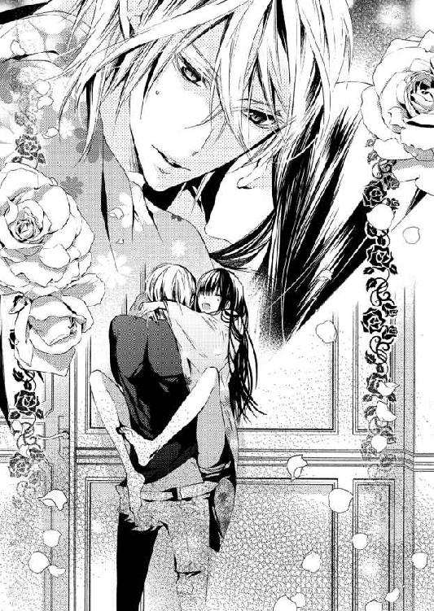
男性器の普通や平均は知らないが、伊織はとても大きく太く感じる。それが隙間なく千花の躰に埋めつくしているのだ。さすがに苦しくなってきた。
（でも、頑張らないと......わたしは伊織の奥さんなんだから）
彼の首に抱きつく手にギュッと力を込める。
その直後だった。
伊織は大きく息を吐き──千花の中からスッと抜いたのだ。
「あ......っん」
蜜襞をズズッとこすられ、愉悦の声が漏れてしまう。
千花は慌てて深呼吸すると、伊織に尋ねた。
「ど、して？ まだ、全然......なの、に」
潤んだ瞳で見上げながら、彼の胸に縋りつく。
すると、伊織は苦笑いを浮かべた。
「さっきはベッドまで待てなかったけど、一度入れたら落ちついたから......。それに、立ったままじゃ、おまえがつらいだろう？ 気が利かなくて悪かった」
伊織は申し訳なさそうな顔をして、千花の帯をほどいていく。
「もっとゆっくり、ベッドで愛し合おう」
「で、でも、伊織って、着たままのほうが燃えるんでしょう？」
思わず口にしてしまったが、伊織のほうは困ったように笑っている。
「おまえ、俺のこと完全に変態扱いだな。......まあ、否定しないけどさ」
そんなことを言いながら次々に脱がせていく。
脱がせた着物一式を、伊織はダブルベッドの近くにあるソファの上に置いた。彼はそのままディープブルーのベッドカバーを剥がし、そこに千花を寝かせる。
千花はピンと張ったシーツの上に転がされ、服を脱ぐ伊織の姿をジッとみつめていた。
半分脱げかけていたデニムをさっさと足から抜き去り、Ｔシャツも脱ぎ捨てる。均整の取れた逞しい身体がオレンジ色の光に照らし出され、千花は目を細めた。
全裸になった伊織がゆっくりと覆いかぶさってくる。
ベッドがギシッと軋み、大きく開かされた脚の間に彼の体重がかかった。数分前と違い、しっとりと潤んだ泥濘に伊織の雄身が緩々と沈み込んできた。
「あっ......ああぁぁ......」
蜜に濡れた膣襞を優しく押し広げられ、心地よさに声が零れる。
じんわりとした温もりが下腹部に伝わっていき......千花は痺れるような快楽を感じ、白い脚を彼の腰に巻きつけた。
「やっぱり、このほうが気持ちよさそうだ」
千花の髪を撫でながら、伊織は顔を覗き込んでくる。
余裕綽々の笑顔は少し悔しいが、気持ちいいのも事実だった。
「伊織......は？ 伊織も、気持ち......いい？」
「──ああ」
「ホントに？ よかった」
ホッとして笑った瞬間、伊織が「クッ」と声をくぐもらせた。
「おまえ、そんな顔で笑いながら......締めるなよ」
「締める？ わ、わかんないんだけど」
千花はもっと伊織を近くに感じたくて、両脚に力を入れる。腰がほんの少し浮いて、突き上げるように動いた。
「お、おいっ!? 待て待て、もう少しゆっくり......ええい、クソッ！」
抱きしめ合っていた身体を起こし、伊織は彼女の脚を押さえ込んだ。
「あ......何？ あ、あ......やだ、待っ......て、やぁああっ！」
ふいに激しい抽送が始まる。
咲良のお屋敷では畳の上に敷いた布団で抱き合う。だがベッドで愛されるほうが、千花の背中や尾てい骨にかかる負担は少し楽かもしれない。
その分、ベッドのスプリングが今にも壊れそうなほどギシギシと悲鳴を上げている。
立ったままのときは、奥まで届くだけで痛かった。それなのに、今は彼の雄身に膣奥を抉るように突かれても、千花の身体を熱くするだけだ。
肢体を甘く揺さぶられ、必死になって伊織の熱を受け止めようとする。
「千花......愛して......る、くぅっ！」
最後の瞬間、伊織は千花の肩口に顔を埋め、力いっぱい抱きしめてきた。
刹那──彼の雄が痙攣し、最奥で爆ぜ飛ぶ。
彼女の膣内を奔流が駆け巡る。
それは千花にとっても頂点で、彼女は下肢を戦慄かせた。悦びに満たされながら、ふたりは何度も唇を重ねたのだった。
約五分後──。
「悪い。また、忘れた」
ベッドに横たわり、伊織の腕枕で寛ぐ千花に、彼は思い出したように口にする。
この場合『忘れた』と言うのは避妊のこと。千花はまだ二十歳だし、もう二、三年してから子供を作ろう、と初めて結ばれた夜に話し合ったのだが......。
「今さら？ だって、二回に一回は忘れてる気がする。伊織って、本当は早く子供が欲しいんじゃない？」
彼にピッタリと寄り添いながら尋ねる。
「うーん......まあ、正直なところ、爺さんにひ孫の顔を見せてやりたいって気持ちもある。でも、もっとふたりでいろいろ楽しんでからって気もするし......」
伊織にとって親も同然の辰吉は八十二歳だ。百歳まで頑張ってほしいが、平均寿命を考えればいつ別れがくるかわからない。
辰吉に喜んでもらうためには、子供も急がなくては、という彼の気持ちもよくわかる。
だがそれと同じくらい、新婚生活を楽しみたい、とも思ってくれている。
その優しさが嬉しくて、千花は伊織にキスしたくなったのだが......ふいに、由香里の言葉を思い出してしまう。
「伊織は、おじい様に喜んでほしくて『付き合ってた女の子みんなに結婚申し込んでた』の？」
千花の問いに伊織は咽るように咳き込んだ。
だが......。
「丸岡が言ったことは、まるっきりの嘘とは言わない。でも、意味が違うんだ──」
そう前置きすると、彼は話し始めた。
大学に入学したとき、伊織はすでに刀匠の資格を持っていた。そのため、県内ではすでにかなりの有名人だった。
そして、在学中に展覧会で新人賞を受賞し、彼の名声は全国区になる。
名声が高まれば人の注目を浴びる。それに比例するように、女性からの交際の申し込みも増えていった。
伊織は女性たちに──『結婚が前提の交際なら受けてもいい』そんな返事をした。
「半数がドン引きしてたな。残りの半数は、俺が本気じゃないと思ったらしくて......付き合い始めてから、冗談じゃないと怒り出す女もいた」
伊織は笑いながら話すが、千花はそれが納得できない。
「それって、伊織のほうは好きでもないのに付き合ってたってこと？ まあ、好きになれるかもしれない、って思ったのかもしれないけど。でも、伊織らしくないと思う」
勝手な期待かもしれないが、交際を申し込まれても、意中の相手以外は断るタイプだと思っていた。そんな伊織が、来るもの拒まず、みたいに付き合っていたなんて......。
妻である千花には、かなりショックだ。
すると伊織は身体を起こしてベッドから下り、冷蔵庫からスポーツドリンクのペットボトルを二本取り出し、一本を千花に放り投げた。
寝転がったまま受け取ったが、千花も身体を起こす。
伊織はそんな彼女の隣に座り、ひと口飲むとため息とともに口を開いた。
「おまえはカッコいいって言ってくれたけど......俺にも〝人間国宝の孫〟とか〝櫻一文字の後継者〟って呼び名に負けそうなときがあったんだ」
小学校に入学した夏に両親を喪った。伊織はそのときに自覚したという、自分は生涯、一文字派を背負っていくのだ、と。
それは押しつけられたことではないが、決して楽な道ではなかった。
地元における咲良家の立場なら千花にもわかる。伊織の同級生だと言っていた美容師の女性も、子供のころからすでに『近寄りがたい存在だった』と話していた。
伊織はその重圧に高校卒業まで耐え続けた。
「市内の大学に入学して、初めて地元を離れた。まあ、自宅から通いだったけど、せめて大学四年間は、刀匠であることも、〝櫻一文字〟の名前も、忘れられると思ってたんだ。でも──逆だった」
地元にいるときは、少なくとも刀匠のなんたるかを知る人々に囲まれていた。刀を打つ伊織に対して向けられるのは、どれほど重くても期待と尊敬のまなざしだけだった。
ところが、一歩外に出ると──刀匠の仕事内容すら知らない人々が、やみくもに伊織のことを誉めそやした。
告白してくる女性たちも同じだ。彼の中身など見ようともせず、見栄えのする容姿と天才刀匠の肩書きのみで評価してきたのだ。
大学に入学して直後、伊織はキャンパスでサインを求められた。
『〝影匡〟の銘は俺自身の打った刀にしか入れない』
そう言って伊織は断った。
彼の言い分にみんな理解を示してくれた、表向きは。裏では『いい気になってる』『何様のつもりだ』等々、悪口を言われるようになったという。
いいことは広まらないが、悪い噂は放っておいても広まるものだ。当然、伊織の耳にも入ってきた。
結局、彼と対等に向き合ってくれる同世代は、イトコの成実だけ......。
割りきったほうがいいと思いつつ、当時の伊織は、そこで諦めることができなかった。
「俺なりに、いろいろと足掻いてみたんだ。本名を隠して合コンに出たこともある。恋人じゃなくていい、ただ俺の話を聞いてくれる誰かが欲しかった。結果は──惨敗。最初は本気で結婚相手を見つけたいと思ってた。でも、いつの間にか諦めてたな」
お堀の近くで出会った五人はただの同期で友だちではない。だから、結婚の報告もしなかった。由香里とも短い付き合いで、名前すら覚えていなかった、という。
伊織にとって大学で過ごした四年間は、この先、友人も伴侶もなく、たとえ生涯孤独であったとしても、自分は刀匠として生きていこうと心に決めた四年間だった。
「じゃあ、どうして、わたしのことを？」
話を聞けば聞くほど、不思議でならない。やたら祖母の守り刀について熱く語る千花のことを、どうして伊織は忘れずにいてくれたのだろう？
首を傾げる千花に伊織は意外なことを教えてくれた。
「客寄せだと言って俺のことを笑ってた連中がいただろ？ おまえは俺を庇って言い返してくれた。......なんか、ホッとしたんだ。俺はひとりじゃない、と思えた。心を込めて打てば、おまえならわかってくれる......おまえのために打ちたい、と」
千花は手にしたペットボトルを開けることもせず、ギュッと握りしめていた。
言われてみれば、ずいぶんと失礼な女性たちがいて、千花はムッとして言い返した。祖父が嬉しそうに話していたことをすべて否定された気がして、言わずにはいられなかった。
黙り込んだ彼女の手を、伊織の手がそっと包み込む。
「幻滅したか？ 悪い、言わなきゃよかったな」
その声はあまりにも頼りなげで、千花は彼を抱きしめたい衝動に駆られる。
千花の手からペットボトルが落ち──ベッドの上をバウンドして床を転がっていく。彼女はその場で膝立ちになり、伊織の頭をそっと抱き寄せた。
「......千花？」
「大丈夫だから。わたし、どんな伊織も好き。それに、わたしだって馬鹿なことしちゃったし......」
「馬鹿なこと？ どんなことか言ってみろよ」
腕の中からそんな質問が聞こえてくる。
それはもちろん、千花が彼氏を作ろうとしたときのことだ。未遂で終わったとはいえ、こういうことは話してもいいものだろうか、と迷ってしまう。
「言ったら、伊織、笑うと思う......たぶんだけど」
口の中でブツブツ言っていると、伊織は突然、千花の胸の先端にキスしてきた。
「キャッ！ な、何？」
びっくりして離れようとしたが、逆に腕を摑まれ、彼の膝の上に拘束されてしまう。
「捕まえた。やっぱりこのほうがいいな。千花、笑わないから教えてくれ」
窓の外はすでに真っ暗だ。常夜灯の薄暗い灯りの中、ふたりは裸で抱き合っている。
伊織はそれ以上何も言わず、しんとした空気が部屋の中に広がっていく。それはしだいに重く感じてきて、その重苦しさから逃れるように、千花は話し始めていた。
「高二のとき、クラスの女子に他校の男子を紹介してもらったの。骨董の話を聞いてくれて、そういうのって初めてだったから嬉しくて、家に誘われてホイホイついて行ったら......無理やりエッチされそうになったって話」
伊織が何も言ってくれないので、千花は笑い話にしようと必死で笑った。
「骨董おたくに付き合ってやったのに──なんて言われたのよ。わたしってホーント、馬鹿よねぇ」
「ああ、馬鹿だな」
「......」
そこで相槌を打たれても、と千花は閉口するが、
「馬鹿な男だ。でも、それがあったから、おまえはバージンのままだったんだな。だったら、感謝しないとな、その馬鹿に」
伊織の言葉に千花は頬が緩んでしまう。
厚い胸板に手を添え、体重を預けてもたれかかった。トクン、トクンと鼓動が聞こえてくる。寄り添っているだけで幸せを感じ、千花は鼓動の聞こえてくる辺りをそろそろと撫でた。
「おまえなぁ......。シャワーを浴びて、晩飯に行こうと思ってたのに」
伊織の声はわずか数秒で熱を帯びてきている。
同時に、彼の下腹部にも火傷しそうなほど熱い塊を感じた。そそり勃つペニスが千花の太ももをスリスリと撫でる。
「そ、そう言えば......お腹、空いたかも。先にシャワー浴びてこようか、な......あ、きゃ」
千花は気づかないフリをして伊織から離れようとしたが、すぐに引き戻された。
「こらこら、その気にさせて逃げるなよ。俺の真打がおまえの鞘に入りたいってさ。嫌だって言っても入れるけどな」
「伊織って......ときどき、中年オヤジみたいなこと言うよね？」
次の瞬間、千花の身体はベッドに押し倒されていた。
「わかった。中年オヤジのようにねちっこく攻めてやるから、覚悟しとけよ」
「え......あ......んんっ」
そのまま唇を塞がれる。
宣言どおり伊織は容赦なく千花を抱き尽くし、後楽園の終業時間をオーバーしてしまったため、その日は駐車場から車を出すことができなくなってしまったのだった。
翌朝──駐車場の職員から『気をつけてくださいね』と注意されたことは、辰吉たちには絶対に内緒である。
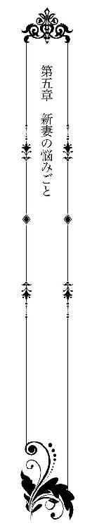
そこは森の中だった。
千花は伊織に会うため、森の小道を籐のバスケットを抱えて小走りに急ぐ。
森は咲良家の私有地だったが、〝日本刀の森〟をはじめとして様々な建物がある場所だった。川の近くには刀匠の守り神を祀った神社まである。
八月の終わり、五時半を過ぎれば木々の隙間を縫うようにして、朝の光が森の中まで射し込む。
千花が目指している場所は、炭小屋の近くにある小さいが広場のようなスペースだ。そこは伊織が二十年近く、素振りの場所として使っていたのだった。
彼は小学一年から高校三年まで、町の剣道場に通っていた。剣道は二段の腕前だ。大学入学を機に剣道をやめて居合道を始め、現在も月に一度のペースで習いに行っている。
刀剣を扱う関係者で剣道や居合道をたしなむ人は少なくない。
伊織の場合は居合道用の刀を依頼されることもあるため、
『自分自身で学んでおけば、使う人の身になって刀が打てるだろう？』
結婚してそろそろ三ヶ月──最近では昔話から仕事のことまで、彼のほうから千花に話してくれるようになった。
彼女が伊織の朝稽古に付き合うようになったのは約一ヶ月前のこと。
それまでは、伊織が朝五時に起きて五時半に家を出てから、具体的な行き先はまるで知らなかった。
結婚前までは当たり前のように鍛刀場に向かい、火床の準備や鍛刀場の清掃、炭切りなど、弟子がこなす雑用を伊織も順番で務めてきたと言う。
だが、年齢のせいで年に四本程度しか打たなくなった辰吉に代わって、すでに伊織が一文字派の代表も同然になっている。代表には代表の格があり、雑用をこなす必要はないと常々言われてきたのだが、伊織本人がなかなか聞き入れようとはしなかった。
しかし、千花との時間を確保するためには、ある程度の雑用は弟弟子に任せなければやりくりはできない。
伊織自身も結婚から二ヶ月が過ぎたころ、ようやくそのことを認めて、負担の軽減案を受け入れたのだった。
『雑用の合間に森の中で稽古してたんだが、鍛刀場の準備は他の連中に任せて、朝は稽古に専念するから......おまえも見に来るか？』
そう言われて、朝の三十分から一時間、千花は伊織の稽古に付き合うことになった。
（もっと早く教えてくれたらよかったのに。まあ、時間が決まってなかったせいかもしれないけど）
新婚にもかかわらず、ふたりきりの時間は少ない。たとえ三十分であっても、一緒に過ごせる時間は千花にとって貴重だった。
ピクニック用の籐のバスケットに朝食用のおにぎりと玉子焼き、畑から取ってきたばかりという野菜を入れ、スープポットには豆腐の味噌汁も入っている。冷たい麦茶とアイスコーヒーも用意してあった。
炭小屋の横を抜け、炭切り場で作業する青年に「おはようございます」と会釈した。
向こうからも「おはようございます、若奥様！」と返ってくる。千花よりひとつ若い弟子入り一年目の青年、木村貢だ。
貢のような若い男性から『若奥様』と呼ばれるのは、三ヶ月経ってもどこかこそばゆい感じがする。だが、だいぶ慣れてきたのも事実だった。
当初、貢にも差し入れをしようかと思ったが......。炭切りの作業は全身が真っ黒になる。とても途中で食事はできないと聞き、千花は諦めたのだった。
炭切り場を抜けると、広場はすぐそこだ。
しだいに、威勢のいいかけ声が聞こえてくる。
そして、木立を抜けて千花の目に飛び込んできたのは、藍染の上着と剣道袴を身につけた伊織の姿だった。
彼は素足で土の上に立ち、素振り用の八角木刀を手にしている。長さ三尺八寸──約一一五センチ、重量は約三キロ。それは道場では使わない、筋力を鍛えるための重い木刀だ。千花にとって、初めて見た代物だった。
伊織は千花のことにも気づかず、一心不乱に八角木刀を振り下ろしている。
彼が着ているのは高校時代の剣道着らしく、かなり色褪せてところどころほつれていた。大きく破れたら縫い合わせて使っているらしく、そんな補修の痕跡がいっぱいある。
（今度破れたときは、わたしが補修してあげないとね。そういうのって、なんだか本物の奥さんみたい！）
戸籍上は〝本物の奥さん〟で間違いないが、実感としては......まだまだ、だった。
そんな千花の心情を察しているのか、東京の母から電話で言われたことは、
『全然連絡してこないけど、大丈夫なの？ 咲良先生や伊織さんとは上手くやってる？ つらいことがあったら、無理しないで戻ってくるのよ。子供ができてたとしても、今どき、子連れで離婚なんて珍しくないんだから』
よくわからない励ましだが、一応、心配してくれていることには違いない。
祝言の翌日、父は千花のことを避け続け、『今まで育ててくれてありがとう』という挨拶もさせてくれないまま、そそくさと東京に帰ってしまった。
あとから母に聞くと、『二十歳の千花に旧家の嫁が務まるものか。すぐに出戻ってくることになる』と言っていたらしい。
どうやら、母が離婚を口にするのも、父から頼まれて探りを入れているようだ。
（親が娘に離婚勧めてどうすんのよ。でも、まあ、夫婦ふたりになって寂しいんだろうなぁ）
伊織は、東京に行く仕事ができたら千花も同行すると言ってくれたが、今のところその気配はない。
素振りをする彼の姿を、目を細めてみつめていると、全身から立ち昇る陽炎のようなものが見えた。
夏になってさらに日焼けした伊織の身体は、まるでブロンズ像のように艶めいている。
重い槌を自在に操り、刀を打つ力加減を調整することで、折れない刀を鍛えていく。現代刀には欠かせない優美な姿に作り上げるのも、彼の腕一本にかかっているのだ。
反りがなく、舟の櫂のような八角木刀がブンッと風を切り──決して振り回されることなく、地面につく寸前でピタリと止める。
ふたたび振り上げ、飛び散る汗と張り詰める筋肉に、千花の胸はときめく一方だ。
鍛刀場を行われる繰り返し鍛錬同様、彼はリズムを乱すことなく、素振りを続けたのだった。
「お疲れさまでした」
千花は声をかけながら大きめのタオルを差し出す。
素振りのあとは、広場の隅に作られたポンプから地下水を吸い上げ、頭から水をかぶるのが恒例だ。上着は脱いでいるものの、袴がびしょ濡れになっている。
だが、どっちみち汗で濡れているので大差なかった。
「サンキュ。でも、寒くなったら来なくていいからな」
「それって、ひとりのほうがいいって言ってるの？」
稽古の邪魔と言われているみたいで、少し切ない。
「そうじゃない。十月になれば六時でも真っ暗だ。真冬はもっと遅い時間まで暗くて寒い。稽古の時間は遅くできないから、暗い中、ひとりで森を行き来させたくないって言ってるんだ」
タオルを首にかけたまま、彼は千花の用意した朝食をパクパク食べ始める。
伊織はただ、千花のことを気遣ってくれているだけなのだ。わかっていても、徒歩で十分もかからない距離なのに、と思うと邪推してしまう。
「ふーん、わたし以外に朝食を届けてくれる人がいるからだったりして」
スープポットを開けて彼の前に置きながら、拗ねるように言って口を尖らせる。
すると、おにぎりを頬張りながら、伊織はプッと吹き出した。
「どこの物好きが、女房持ちの男に朝飯なんて運ぶんだよ」
伊織はそんなふうに言うが、彼のファンはそう簡単には諦めてくれそうにない。
つい先日も、千花が〝森〟の売店を手伝っていたとき、数人の女性客から遠巻きに見られた。直接何かを言われたわけではないが、『えーあんな子が？』『絶対勝ってるのに』といった声が聞こえてくれば......。
（あーあ、番犬どころか虫よけにもなってない気がする）
嬉しそうに味噌汁を啜りながら、「美味い」とか言っている伊織が、まさしく朴念仁に思えてきて、千花はため息をついた。
「世の中に、物好きって多いみたいよ」
「そうなのか？」
「だって、若い女性のお客さんって、わたしより綺麗な人が多いんだもの」
千花はわざと淡々と言ってみる。
化粧品や香水の匂いを嫌う伊織に合わせ、千花はほとんどノーメイクだ。もともと厚塗りをするタイプではないし、流行のメイクやファッションにも興味はない。だが、石鹸とシャンプーの香りだけでは、いつか伊織狙いの『物好き』たちに、負けそうな気がしてならない。
「伊織だって、いつか目がいっちゃうんじゃ......んんぐっ!?」
うつむいてブツブツ言い続ける千花の口に、プチトマトが押し込まれる。
「おまえさ、腹減ってるんじゃないのか？ ほら、美味いから食えよ」
地下水でざっと洗っただけのトマトやプチトマト、きゅうりが目の前に並んでいた。
雛飾りの件で相談にきた、まつ子の畑で採れた野菜だ。朝一で収穫したプチトマトは本当に甘くて美味しい。
実を言えば、千花は生野菜が苦手だった。ところが、お嫁にきてすぐ、採れたてのプチトマトを食べるように勧められ......口の中にジュワーッと甘酸っぱさが広がった瞬間、採れたて野菜の虜になった。
今ではプチトマトなら十個くらい、おやつ代わりにぺろっと食べてしまう。
伊織は大きなトマトにかぶりつきながら、そんな千花のことを嬉しそうに見ている。
「......おまえが一番綺麗だと思うけどな」
ボソッと言われ、千花は急に恥ずかしくなり、
「やだ、もう、伊織ったら」
つい、手に持っていた野菜を伊織の口に押し込んでしまう。
「おっ、おまえっ......きゅうりを......縦に突っ込むな！」
押し込まれたきゅうりに目を白黒させながら、伊織は怒った顔でムシャムシャと食べている。だが、途中でこちらを見てニヤリと笑った。
「半分、返してやる」
「え？ 嘘」
言うなり、真ん中辺りでパキンと折り、千花の口に押しつけてきた。
「わ、わたし......生のきゅうりは、お味噌をつけて食べる派で......きゃっ！」
慌てて立ち上がった千花のあとを、彼はふざけて追い回す。小さな広場で、ふたりは鬼ごっこをするみたいに走り回った。
「やだ、もう降参するってば！」
直後、千花は黒松の根に足を取られて転びそうになる。
とっさに伊織が手を伸ばしてくれたが......。
「きゃあっ！」
彼に抱きしめられたまま、ふたりして地面に倒れ込んだ。
千花はどこも痛いところはないが、伊織の上に乗っかってしまっている。急いで身体を起こそうとしたとき、キスされていた。
伊織の舌が口腔内に入り込んでくる。内側をゆるりゆるりと舐められ、千花の身体は少しずつ火を点けられていく。
ふたりの唾液が混じり合い、トマトときゅうりの味が口の中に広がる。その瞬間、同じことを感じたのか、伊織は唇を離してクッと笑った。
「きゅうり味のキスは、ちょっと青臭いな」
幸せそうな彼の顔を見ていると、千花も自然に笑みが零れる。
「伊織のキスなら、どんな味でも大好き」
「おまえ......朝っぱらから、その笑顔とセリフは反則だ」
彼は千花を抱きしめたまま身体を起こした。
気がつけば、伊織の膝を跨いで座っている格好だ。
朝早いので今の千花は完全にノーメイクだった。服装も、チューブタイプのブラジャーの上に、ノースリーブのマキシ丈ワンピース、足元はデニム地のスリッポン。ワンピースは軽くてサラッとしたシフォンのボーダー柄で、朝稽古の見学はこの服装で来ることが多かった。
ノースリーブの襟元から覗く鎖骨の上に、伊織は唇を押し当てる。
「待っ......て、さっき、炭切り場に、木村くんが......」
「わざわざ覗きには来ない。おまえが、デカい声さえ上げなければ」
ワンピースの肩部分をずらして、ブラジャーも押し下げる。降り注ぐ朝の光に、真珠色の艶やかな胸が露わになった。
「や、やだ......誰か来たら、見られるから......」
千花はもとに戻そうとするが、それより早く、伊織の唇が胸の先端を捉えていた。
優しく甘噛みされ、強弱をつけて吸い上げられる。伊織によって教え込まされた悦びは、あっという間に表に引きずり出され、快楽へのジャンプ台に立たされてしまう。
「あ......そん、な、強く吸った......ら、ダメェ、伊織......いお、り、やぁ......んっ」
喘ぎ声を出してしまいそうになり、慌てて口を閉じる。
すると伊織はそんな千花をみつめたまま、片手で剣道袴の紐をほどき始めた。
「こ、ここで......するの？」
「ああ、夜までなんて、我慢できない」
それはほんの少し前まで、一心不乱に素振りをしていた彼と同一人物とは思えない。欲情に塗れた声が千花の女の部分に火を点ける。
しだいに堪えきれなくなり、千花は太ももを擦り合わせた。
「できるだけ早く終わらせる。おまえに負担をかけないようにするから」
「昨夜だって、二回もしたのに......朝からなんて」
困った顔で返事はするものの、千花のほうもまんざらではない。彼が脱がせやすいように、そっと腰を浮かせてみる。
すると、伊織が彼女の耳元に口を寄せてささやいた。
「ホントは嬉しいくせに」
「そ、そん、なっ......あぁんっ！」
白いショーツが片方の足首に残ったまま、膝を立て......Ｍ字に開脚させられた中心に伊織の昂りが押し当てられた。
「さっきのきゅうり、こっちの口に押し込んだほうがよかったかな？」
「伊織の......馬鹿っ！ きゅうりなんて、そんなきゅうり、なん......て」
剥き出しになった千花の秘所を、熱い猛りが何度も往復する。上下にこすられ、花芯に押しつけられて、千花は脚を閉じてしまいそうになるのを必死で堪えた。
「ああ、そうか。きゅうりじゃ細いよな。ここに押し込むなら、ナスくらいの太さはないと」
そう言うと湿り気を帯びた蜜のとば口にペニスを当て、亀頭部分をスルリと沈めた。グチュッと蜜音が聞こえ、同時に指で淫芽を弄られて、千花は頤を反らせる。
伊織は彼女の膣内に浅く挿入したまま、緩々と腰を回した。
それは千花が大好きな動きで、奥から奥から新たな蜜が溢れ出てくるのが自分でもわかった。
「あ、あ、あ......ダメ、ダメェ......ああぁーっ！」
「千花はここが弱いからなぁ。でも、そんな大きな声を出したら、炭切り場まで聞こえるぞ」
千花の弱いところとわかって責めているくせに、そう思うと悔しくなって、つい......。
「は、早く、終わらせるって言ったくせに。そ、そっか......伊織って、奥まで入れたら......すぐ、だもんね」
そう言った瞬間、伊織の動きがピタリと止まった。
（言い過ぎた？ でも、伊織が意地悪ばっかり言うから......）
すぐに、謝ろうかと思ったが、それはそれでずっと千花が負けてばかりいる気がする。
「三ヶ月でずいぶん言うようになったな。わかった。じゃあ、おまえの希望どおりさっさと終わらせるとしよう」
伊織はひと突きで彼女の奥まで達した。
そのまま千花の腰を左右から摑むと、しっかりと固定して抽送を開始する。蜂蜜の壺をかき回すような淫らな音が辺りに響き渡り、同時に千花の口から悩ましい声が上がった。
「ああーっ！ 待って、そんな、激し......いのは、もっと、ゆっ......くり、して」
あまりの荒々しさに千花は腰を引こうとするが、
「ダメだ。早く、終わらせてほしいんだろ？ おまえも、ちゃんと協力しろよ」
伊織は逆に彼女を抱きかかえ、対面座位で下から突き上げた。
激しく揺さぶられ、彼の昂った先端が蜜窟の天井をこすり上げる。子宮まで当たりそうな抜き差しに、千花は涙が零れそうだ。
何度も繰り返すその動きに、苦痛ではないが快感とも違う感じがして、千花は伊織に抱きついた。
「んっ、んっ......ぁん、やぁ......んんっ」
「......千花......」
伊織の口から彼女の名前が聞こえ、少し遅れて、彼の放つ熱を最奥に感じたのだった。
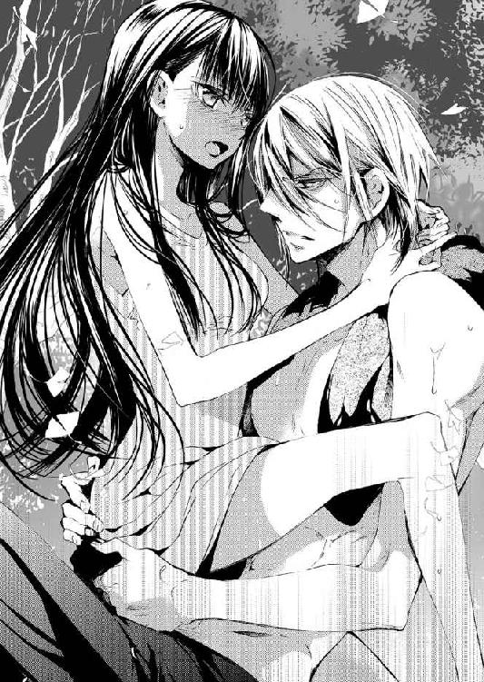
☆ ☆ ☆
「あ......すみません。そっちは関係者以外立ち入り禁止の場所なんです」
朝早く森の中で伊織と睦み合い......その日の午後、千花は〝森〟にいた。
こちらはもちろん〝日本刀の森〟のほうだ。千花は従業員用のえんじ色の作務衣を着て、トイレ裏の通路に張られたロープを跨ごうとしていた女性たちに声をかけたのだった。
前に伊織から『着替えを覗かれたり、写真を撮られたり』といった話を聞いたことがある。それ以来、ここに来るたび辺りに気を配っていたのだが、千花がそういったことを目にする機会はなかった。
しかし今日は、約二ヶ月ぶりに伊織が鍛刀の実演を務める日だ。実演の担当者はあらかじめ告知されているので、駐車場も満車の大盛況だという。
当然、チケット売り場や博物館、売店など、どこも忙しそうでてんてこ舞いだった。
そんな話を町内の人から聞き、いろいろ気になっていた千花は、家で作務衣に着替えてからお手伝いにやってきた。
（また、伊織が刀を打つところが見られたらいいなぁ、なんて。下心もちょっとはあったんだけどね）
そこに、辺りをキョロキョロと見回しながら、トイレ裏に入っていくふたりの女性をみつけたのだった。
「えっと、すみません。そっちは危険なものもあるので、見学の方は表から入ってください。よろしくお願いします」
この三ヶ月で、伊織が結婚したことや妻である千花の顔など、ファンの女性たちに知れ渡った。自分が彼女たちの反感を買っていることは、充分に承知している。
そのことを考えれば、誰か呼んできたほうがいいかな、とも考えた。
しかしそれでは、この忙しいときに余計な仕事を増やしてしまうことになる。丁寧に頭を下げてお願いしたら、大きなことにはならないだろう。
そう思っていたのだが......。
「あたしたち、もう二年以上ここに通ってんだけど」
不法侵入をしているのは彼女たちのほうだ。それにもかかわらず、腰に手を当ててまさしくふんぞり返っている。
逆に、指摘した千花が悪いとでも言わんばかりで、逆切れ寸前に見えた。
彼女たちを最初に見かけたとき、自分より年上だろうと思った。だがこうして話しをすると、年齢はそれほど違わないように感じる。
ただ、濃いメイクと派手なネイルチップ等々、見た目の違いが大き過ぎるのでいささか自信はない。
千花がそんな彼女たちの派手なファッションに気を取られていると、
「ちょっと聞いてる？」
きつく言われ、姿勢を正した。
「はい。もちろん聞いてます。何度もお越しいただき、本当にありがとうございます。でも、危険ですから......」
「ねえ、ちょっと、こいつじゃない？ 伊織先生と結婚した女」
ひとりのほうが千花の正体に気づいたらしい。声がさらに刺々しくなった。
「えー、この女が!? 信じらんない。どこがよくてこんなブスと」
あまりの言われように、比較的おとなしい千花もカチンときた。
「おっしゃるとおり、わたしは美人ではありません。でも、立ち入り禁止の場所に入り込んで開き直るほど、面の皮は厚くないつもりです」
きっぱり言い返すと、そのふたりは完全に開き直ったのだ。
「へえ、お客に向かってそんなこと言うんだ。いいのよ、別に。ネットに書き込んで、どっちが正しいか世間の人に判断してもらうから」
「え......？」
「ずっと応援してきたのに、嫉妬深い奥さんに追い払われました。もう〝日本刀の森〟には行かないほうがいいですよ──って書き込んだらどうなると思う？」
とんでもない言葉をぶつけられ、千花は息を呑んだ。
『客寄せでもなんでもやって、〝櫻一文字〟と職人たち、あの土地の人たちを守っていくつもりでいる』
伊織はそこまでの覚悟を決めている。自分の仕事に責任とプライドを持って頑張っているのだ。そんな彼の足を、妻である自分が引っ張るわけにはいかない。
勝ち誇った顔をしている女性たちに向かって、千花は九十度以上頭を下げた。
「申し訳ありません。言い過ぎました。どうか、そういうことだけはやめてください」
すると、頭上から千花を嘲笑う声が聞こえてきた。
「そうねぇ、許してあげてもいいかも。あんたが土下座して謝るんならね」
クスクス笑う声が頭の中まで響いてくる。
自分は間違っていないと思う。いくらお客様でも『こいつ』だの『ブス』だの言われて、どうして笑っていなくてはいけないのだろう。
（でも、伊織やみんなに迷惑はかけられない）
千花は目を閉じると深呼吸して地面に膝をつけようとした。
そのときだった。
二の腕を摑まれ、千花は強引に立たされる。
「あんたねぇ、何やってんの？」
少し怒ったように言いながら、千花の後ろから現れたのは──成実だった。
大きめの白いシャツを着て、ボトムはブラックデニムのストレート。スレンダーな成実によく似合う。髪は洗いざらしといった感じで、実にラフなスタイルだった。
「成実さん......どうして、ここに？」
「その前に、聞いてるのはこっちなんだけど」
成実は苛々した顔つきで千花のことを見下ろしていた。
だが、苛ついていたのはふたりの女性も同じだったらしく......。
「たしか、一文字派の人でしたっけ？ でも、関係ない人は引っ込んでてくれます？ あたしたちは、こいつと話してるんで」
さすがに二年以上通っていると言うだけのことはある。たまにしか顔を出さない成実の顔も、ちゃんと覚えているようだ。
千花はそのことに感心してしまったが、成実は違った。
彼女は千花と女性たちの間に割って入り──。
「黙れ、ブス！ おまえらのどこが客だよ。どの口で、応援してきた、なんてほざきやがる」
綺麗系の成実の口から出たとは思えないドスの利いた言葉に、千花は我が耳を疑った。
正面から啖呵をきられているふたりは、千花以上に驚いた顔をしている。
「ひ、ひどい。い、いまの言葉も、ネットに、か、かき込んで......」
震えながらも反論しようという根性は、なかなかのものだろう。
だが、そんなふたりの抵抗を、成実は一刀両断にした。
「フン、できるもんならやってみろ。──伊織の着替えを盗み撮りして、ネットに流したのはおまえらだろう。弁護士に証拠は集めさせてある。訴えてやろうか？」
成実の台詞を聞いたとたん、ふたりは意味のわからないことを叫びながら、脱兎のごとく逃げ出した。
その後ろ姿を千花は呆然として見送ったのだった。
工房裏に休憩用のベンチが置かれてある。千花は成実にそこまで連れて行かれ、ボーッとしたままベンチに座っていた。
しばらくして、突如、冷たいペットボトルが頬に押しつけられる。
「ひゃうっ！」
「もうちょっと色っぽい声は出ないわけ？ 一応、人妻なんでしょう？」
一応はよけいだと思いつつ、
「......はい。すみません」
千花には謝ることしかできない。
「あの人たち、盗み撮りなんてしてたんですね。そんな人たちに謝ろうとしてたなんて。ひょっとして、今日もそのつもりだったんでしょうか？」
「そうかもね。よく知らないけど」
「──はい？」
条件反射でうなずこうとしたが、『よく知らない』という言葉に引っかかった。
千花が疑問を成実にぶつけると、彼女はにわかに信じがたい返事をした。
「だから、弁護士なんて雇ってないし、証拠なんて摑んでないってこと。でも、大慌てで逃げ出したところを見たら、図星だったかな」
「な、成実さん......」
開いた口が塞がらない。
成実にはお見合いから結婚までの間、とても世話になった。仲よくしてほしいと思っていたが、祝言の日から一週間くらい実家にいて、その後すぐにいなくなってしまったのだ。
彼女の仕事は一文字派の営業と、日本中に散らばっている刀工群との顔つなぎで、全国を回っていると伊織に聞いた。
他の人からも聞こうとしたが、どうも成実のことになると、みんな口が重くなる。
周囲から一目を置かれていると思っていたのだが......ちょっと違って、どうやら別の事情があるようだ。
聞きだせたのは、伊織と成実の母親が姉妹で、成実には他県に嫁いだ姉がいるということ。成実の家は代々研師の家系で、彼女の父親も研師ということくらいだった。
「辰吉爺様や家政婦のとき婆さんにも気に入られて、上手くやってるって聞いてたのに......。あんなのに絡まれててどうするの？」
「はあ......あの、助けていただいてありがとうございました」
弁護士云々はハッタリらしいが、それでも千花を助けてくれたのは事実だ。
「でも、びっくりしました。伊織に負けないくらい怖い声だったので」
「そりゃ、いざとなったら......」
何か言いかけて、成実は途中で止めた。
そのまま、少し考え込んだあと、今度はジーッと千花の顔をみつめてくる。
「あの......何か、ついてますか？」
「いや、その逆でついてないなぁって思って。マスカラもチークもなし？ ネイルチップどころかマニキュアも塗ってないし、ピアスの穴も開いてない。アクセは結婚指輪だけって......あんたって本当に、田舎に染まったね」
さっきの女性たちと比べられているな、と感じたが......。
「いえ、それは......とくに染まったわけじゃなくて、もとからこんなですから」
初めて会ったときは振袖姿だった。お見合いとは知らなかったが、それなりに頑張って見栄えよくして行った気がする。
そのあとも、ホテルのラウンジやレストランなどに席を取り、結婚の打ち合わせで会うことが多かったため、装いもあらたまったものだった。
だが普段の千花は、シンプルと言えば聞こえはいいが──地味だろう。
「ふーん、どうりで伊織とも合うわけだ。東京の子だから、すぐに愛想尽かして帰るだろうって思ってたのに」
最初は、夫婦仲を気遣ってくれたのだ、と思った。
だが、何かが違う。
「まあね、普通の子じゃないな、って気はしてたけど」
「え？ わたしって、普通じゃないですか？」
「いくら刀匠でも、懐剣持参でプロポーズはしないでしょ。普通は婚約指輪？ それが速攻でベッドインしてるし......。伊織の肩書きによろめいたんだろうな、って思ってたのに、なんか違ったみたいね」
成実はハアーッと深いため息をつく。
（なんで、ため息？ 心配してたのが上手くいってよかった、って言いたいんじゃないの？）
彼女のただならぬ様子に、千花は伊織のファンとのやり取りなどどうでもよくなってしまう。
「えーっと......成実さんと伊織って、子供のころから仲がよかったんですよね？ 特殊な環境下で、成実さんだけ対等に向き合ってくれたって聞きました」
周りが話してくれないなら、本人に聞くのが一番だ。千花は気持ちを切り替えて、いろいろ尋ねてみることにした。
だが、すぐに後悔することになる。
「今いる若い職人は外の人間ばっかりだから。私たちの親の世代で、刀とは無関係の仕事に就いた人が多くて......。私にとっても伊織だけだった、いろんな意味で。あいつは昔から素直で馬鹿正直で、私の嘘にコロッと引っかかってたなぁ」
懐かしそうな目で笑いながら言われると、実に微笑ましい話に聞こえてくるが......。
（でも、成実さんが伊織を騙してたって言ってるのよね？ 伊織が聞いたら怒りそう）
千花が苦笑いを浮かべて聞き流そうとしたとき、ふいに成実の顔から笑みが消えた。
「こうなったら、一日も早く伊織の子供を産んでよね。そのために若いお嫁さんをもらったんだから」
「そ、そのためって」
「あいつのことだから、朝も夜もせっせと励んでるんでしょう？」
その言い方がまるで嫉妬を含んでいるように聞こえ、千花は驚いて成実の顔を凝視した。
初めて会ったとき、ふたりはずいぶん親密そうだと思った。イトコなら恋愛や結婚もできるのだから、ふたりは恋人同士なのかもしれない、といった想像までしたのだ。
だが、伊織の希望を聞き、千花とのお見合いをセッティングしてくれたのは成実。
てっきり、千花の勘違いだと思っていたが......。
「そんな......そんな言い方って。成実さん、伊織のことを普通のイトコ以上に、いろいろ知ってるように聞こえます」
「まあね。あいつのことは、よぉく知ってるから」
思わせぶりな顔をして、成実は千花の耳元に口を寄せた。
「伊織の刀を初めて研いだのは私だから。私にとっても、ああいう......ちゃんとしたのは初めてだったかな？」
「......？」
「桁違いにパワフルで情熱的、その代わり、細かい部分に気が回らない。こっちでフォローしてあげないとダメだったなぁ。──今は、どう？」
最初は何を言っているのかわからなかった。だが最後の言葉を聞いたとき、千花はその意味に気づく。
成実は伊織の〝初めての相手〟なのだ。そしてそれは、成実にとっても初めてに近い経験だった、と。彼女はとんでもないことを告白している。
「そんな......まさか......い、いつのことなんですか？」
「うーん。たしか、伊織が中学を卒業する前、だったと思う。もの凄く大変で、でも......充実して、好きな時間だった」
最後だけ微妙にトーンが下がったのだが、千花はそのことに気づきながらも『好き』という言葉に気を取られてしまう。
「だったら、成実さんが伊織と結婚すればよかったんです！ わたしのことなんて、捜さなければよかったのに......」
千花は勢いよくベンチから立ち上がった。
反動で、成実からもらったペットボトルが地面に落ちる。そのとき、『ただ今から、刀匠、咲良伊織による鍛刀の実演を行います』というアナウンスが聞こえてきた。
『整理券をお持ちの方は、一列に並んで順番をお待ちください......』
早く行って売店を手伝うか、今日は鞘師と組紐師の実演もあるので、そちらを手伝ったほうがいい。
整理券をもらえなかった人が買い物に行くか、他の職人の工房見学に回るため、忙しいことに変わりはないのだ。
「わたし......もう行かなきゃ。失礼しま......」
「言ったでしょう？ 一文字派を背負う伊織には後継者を作る義務がある。でも、私じゃダメだから......私、子供の産めない身体なの」
千花は瞳が零れ落ちそうなほど見開き、成実を見た。
内容が内容なだけに、なんと答えたらいいのだろうか？ 女性としてだけでなく、人間として経験の浅い千花にはよくわからない。
「田舎暮らしに飽きたときは、いつでも東京に戻りなさい。子供がいても大丈夫よ。ここには経験を積んだ年寄りがたくさんいるから、あんたがいなくても立派な刀匠に育ててあげる」
成実の視線が怖くて、千花は逃げるようにその場を立ち去った。
☆ ☆ ☆
夕食が終わり、千花は台所で洗いものをしていた。
「今日の食卓は、ずいぶん静かでしたこと」
隣で食器を拭いていた十喜子の声が聞こえ、千花はハッとして顔を上げる。
「え？ そう、でしたっけ？ まあ、伊織があんまり話さなかったから......でも、おじい様は相変わらずだったじゃないですか」
辰吉はつい先日から、今年二本目となる刀を打ち始めた。今が大事なところらしく、伊織が一番弟子としてサポートに入っている。
実演が終わったあと、伊織は辰吉のいる鍛刀場に戻った。ふたりは今日の工程を済ませ、揃って帰宅したのだった。
「ええ、ええ、大先生は......盛り上げようとして失敗なさってましたねぇ」
辰吉の話題になり、十喜子は困ったような笑顔を見せた。
今日に限ったことではない。辰吉はいつも千花のことを気遣ってくれる。
『疲れは明日に残さんほうがええ、わしが腰を揉んでやろう』
少しでも疲れた顔をしていたら、そう言って傍に寄ってくるのだ。
わざわざ伊織の前でやるので、伊織は毎回むきになって千花を抱き寄せ、『俺がやるから、爺さんは手を出すな！』といったことを叫んでいる。
だが、今夜は違った。
『それだけ元気なら、明日も朝一からお願いします、師匠』
憮然とした顔で、他人行儀な言葉を使い、伊織はそそくさと離れに戻ってしまった。
それには千花もびっくりして何も言えなくなる。
『すまんのぉ。不肖の孫は、どうも虫の居所が悪いようじゃ。まあまあ、夫婦は喧嘩してこそ本物というからな』
辰吉は笑いながら、千花を励ましてくれたのだった。
「もともと陽気な方ではありませんが、若奥様がおいでになってからは、笑顔が絶えませんでしたのに。若先生のあんな様子は本当に久しぶりで......。大先生は何もおっしゃってなかったので、実演で失敗したのかもしれませんわね」
十喜子は心配そうに言う。
だが、千花にもよくわからないので、相槌の打ちようがない。
「若奥様は実演をご覧になられたのでしょう？」
「ううん。売店のほうが忙しくて、今日は見学する時間がなかったの。次のときでもいいかなぁって思って」
本当は、『見てきていいよ』と言ってもらえたのだが、千花が断った。
千花が姿を見せれば、伊織のファンがざわめき始める。あのふたりのように、『どこがよくてこんなブスと』といった視線を向けられるのだ。
これまでは、伊織に愛されているという優越感が千花を支えてくれた。ところが、今の千花はその支えを失ってしまった。
成実の言ったことは真実だろうか？
思えば、伊織の成実に対する態度は少しおかしい。一番の理解者として懐かしそうに語るくせに、彼女を前にすると、わざと冷たく接しているように見えなくもない。
そして成実も同じ──。
彼女がこの三ヶ月、備前に帰って来なかったのは、千花がいるせいではないだろうか。愛する男性の隣に妻の姿があれば、誰でも目にしたくはない。
様々な事情から、伊織は結婚を勧められていた。
だが、『子供の産めない身体』という理由で、一文字派のために成実との結婚を諦めたのだとしたら？
伊織はわざと、東京出身で田舎暮らしなどできそうにない、頼りない娘を選んだのだ。結婚したあと、すぐに泣いて帰ってしまうような若い娘を。
そこまで考えて、千花は頭を振った。
（そんなわけない！ 伊織は、そんな器用な駆け引きのできる人じゃない）
萎えそうになる心を必死で奮い立たせる。
「実演はいつもと同じだったみたい。〝森〟の人も、特別に何かあったなんて言ってなかったから」
「そうなのですか？ じゃあ、いったいどうなさったことでしょう。酷く落ち込んでいらっしゃるみたいで......」
十喜子は本当に伊織の変わりように心を痛めている。
何か言って安心させてやりたいが、千花にも本当にわからないのだ。
朝の素振りのときはいつもどおりだった。いや、いつも以上で......あんな場所で千花を求め、結局応じてしまったので、我ながら無茶なことをしたと思っている。
（ダメって言わなきゃいけなかったのよ。家や仕事場に近い森の中で......なんて。誰かに見られたときは、恥ずかしくて外を歩けなくなるもの）
そのとき、千花はひとつのことに思い当たった。
「あ、原因かどうかはわからないけど、久しぶりに成実さんが戻ってきてたせい、かも」
自信がないのでしだいに声が小さくなる。
そんな千花に十喜子は笑いながら言った。
「そんな、成実様が何ヶ月もいらっしゃらないのは、いつもことですよ。戻って来られたからといって、あんな沈んだお顔をなさる理由がありませんわ」
言われてみればそうだ。
だが、もし、成実の言葉どおりだとすれば......。
千花は泣いて東京に帰ったころだろう。そう思って戻ってきたのに、いまだに妻として居座っている。伊織はそのことを成実から責められ、落ち込んでいるとしたら？
（あーダメだ。マイナス思考になってる。プラスよ、プラスにしなきゃ！）
伊織と成実の関係は事実だった。
でもそれは、伊織が中高校生のころまでのこと。世間でよく言われる、若気の至り、だったとしたらどうだろう。
今は本当に千花のことを愛してくれている。それなのに、成実のほうに未練があって、伊織を悩ませているのかもしれない。
そのとき、十喜子が咲良家に六十年も勤めていることを思い出した。
伊織が生まれたときまで遡っても二十五年前、楽勝で全部知っているはずだ。
「ねえ、十喜子さん！ 聞きたいことがあるんだけど」
「な、なんでございましょう？」
にわかに積極的になった千花に押され、十喜子はあとずさった。
「伊織と成実さんって、特別......っていうか、仲がよかったのかな？」
「ええ、もちろんでございます。幼いころは本当に仲がよかったのですよ。森の中に小川がありますでしょう？ おふたりともあの小川が大好きで、魚を釣ったり、水遊びされたりしていましたね」
十喜子の返事に、千花はドキンとした。
森の中に広いところで幅五メートルくらいの小川がある。川幅は狭いところだと跨いで渡れる。浅くて水も綺麗なので、この夏は水遊びをしている子供を何人も見かけた。
千花も一緒に遊ぼうと声をかけられたのだが......。
『行かなくていい』
伊織のひと言で却下された。
（わたしにダメって言ったのは、成実さんとの思い出の場所だから......だったりして）
考えまいとすればするほど、マイナス思考に囚われていく。
「若先生は二歳上の成実様のことを、とても頼りになさっていました。よい関係を築かれているのだとばかり思っていましたのに......」
伊織が大学生になり展覧会で新人賞を受賞したころ、成実は理由も言わずに実家を出て、ひとり暮らしを始めたという。
「ふたりは喧嘩したのかな？」
「若先生に心当たりはないようでしたから、成実様が変わってしまわれた、としか言えません」
これ以上は伊織に聞くしかない。
だが、なんと言って切り出せばいいのか、そこが一番むつかしい。
「若奥様を悩ませているのは夫婦喧嘩ではなく、成実様なのでしょうか？」
不意打ちのように十喜子に尋ねられた。
「どうしてそう思うの？」
「いえ、あの方はなんと言いますか......いろいろと、わたくしのような年寄りには考えもつかないことをされるので......」
千花はもう少し食い下がったが、十喜子は成実について、それ以上のことを教えてはくれなかった。
片づけを済ませ、お風呂に入ったあと、千花は離れの寝室に戻る。
部屋の中に入った瞬間、面食らった。なんと、部屋の中はもう真っ暗だったのだ。
（ちょっと待って、まだ夜の十時よ。小学生だって高学年は起きてるわよ！）
早起きの伊織だが、決して早寝というわけではない。ほぼ毎晩、ふたりきりになるなり千花を押し倒して、日付が変わるまで愛し合ってきたのだ。
それが今夜に限って部屋の電気を消し、さっさと布団に入っているとは......。
（やっぱり、成実さんの言うことが正しいの？）
少し経つと常夜灯の光で物の形がボンヤリと見えてきた。横になった伊織の姿も浮かんできて、千花は彼の横にそっと座る。
「伊織......もう、寝ちゃった？」
「......」
彼はどうして何も言ってくれないのだろう？
今朝まで、あんなに熱烈に愛してくれたのに。成実のためだとしても、急に無視される理由がわからない。
（これって、少なくとも今はわたしが奥さんなんだから、怒ってもいいんだよね？）
そう思ったが、どうしても成実のことは聞けない。
千花はしばらく悩んだあと、やはり成実の告白は聞かなかったことにしようと決意する。
「えっとね、明日の朝なんだけど......」
できるだけ明るい声を出すが、それをいきなり遮られた。
「雨が降りそうだから、素振りはしない。朝飯はみんなと食うから、おまえは来なくていい」
プラスに切り替えようとした気持ちを、伊織のひと言で断ち切られてしまう。
そうなると千花も気持ちを抑えていられなくなった。
「どうして？ 雨だからって言うなら、家で食べていけばいいじゃない。どうしてなのかちゃんと説明して？」
「......」
「今日の伊織、〝森〟にいたときから変だった。わたしのことなんか、いない感じで......。家に帰ってからもそう。晩ごはんのときも、話しかけてもくれなくて......。何を怒ってるの？ わたしのことが嫌いになった？ 他に好きな人がいるから、わたしには東京に帰ってほしいって思ってるなら、そう言ってよっ!!」
しだいに声が大きくなってしまう。
そのときだ。掛布団がバッと捲れ、伊織が身体を起こした。
「変なのはおまえもだ！ 見学に来るはずだったのに、来なかった」
「......それは」
伊織のファンに土下座させられそうになったこと、話すべきだろうか。だがそうなると、成実に助けられたことも言わなくてはならなくなる。
千花がうつむいたとき、伊織の口から信じられないことを聞かされた。
「──見たんだ。実演の前、工房の裏で成実とふたりっきりで会ってただろ？」
すぐに顔を上げたが、伊織の険しい顔に千花は返事もできない。
「何を話したんだ？ 全部言えよ」
言えるはずがない。
もし言ってしまえば、千花は本当に東京まで帰ることになってしまう気がする。
「なんで言わないんだ!?」
「だって......わたし......」
「おまえ、成実のことをどう思ってるんだ？」
質問の意味がよくわからなかった。
千花が成実を恨んだり憎んだりしているかどうか、という意味だろうか？
だが今度はそんな質問をする意味がわからなくなる。千花はとりあえず、当たり障りのない返事を口にした。
「き、嫌い、じゃない」
奇しくも初夜に『俺のこと好きか？』と問われ、伊織に返したのと同じ答えになってしまった。
次の瞬間、伊織は千花に飛びついてきた。
「キャッ！」
いきなり布団に押し倒され、唇を奪われる。
あまりの荒々しさに千花は眩暈を感じ、ギュッと目を瞑って歯を食い縛った。
「なんで、俺と同じなんだ......クソッ！」
伊織は浴衣の上から、彼女の身体を乱暴に弄る。指先から彼の苛立ちや怒りが伝わってきて、千花はどう反応すればいいのかわからない。
言葉にすれば同じ『嫌いじゃない』だが、その中に込められた思いまで同じわけではない。
伊織が好き過ぎて、自分から思いを告げることが怖かった。そんな精いっぱいの思いを込めた言葉が──『嫌いじゃない』。
だが、今は違う。成実のことを嫌いになってしまいそうだ。しかし、伊織が大切に思っている人を嫌いにはなりたくない。
それに成実は、伊織のファンから千花を庇ってくれた。恋敵に手を差し伸べられる人が、悪い人だとはとうてい思えない。
伊織は困惑する千花の身体に体重をかけ、自由を奪って強引に膝を割ろうとする。
その瞬間、千花は伊織が怖くなった。
「いやあっ!!」
力いっぱい彼の身体を押しのけ、畳を這うようにして逃げ出した。
（なんでこんなに怒ってるの？ どうして、怒りながらわたしを抱こうとするの？ 伊織の気持ちが全然わかんない）
背後から、苦々しげな伊織の声が聞こえてくる。
「俺にはもう、抱かれたくない、か」
「そ、そんなこと......」
そういうことを言っているのではないと、どうして伊織にはわからないのだろう。
「わたしは、伊織が好き......でも、伊織の気持ちはどこにあるの？」
「おまえに決まってるじゃないか！」
「でも、成実さんが......」
千花の口から成実の名前が出たとたん、伊織の表情が変わった。
直後、彼女の耳元でダンッと音が聞こえた。伊織の拳が畳に叩きつけられる音だ。
「こんなときに成実の名前を呼ぶな！」
怒鳴られて、千花はビクッと震える。
怯えて身を竦ませる彼女から視線を逸らすように、伊織は「もう......いい」と呟いた。
そのまま、彼は千花から離れて部屋の外へと向かう。
「自分の仕事が残ってるから、今夜は鍛刀場に泊まる。千花......俺と成実を比べるな」
伊織は意味のわからない言葉を残し、千花を置き去りにしていく。
（どう、して？ 伊織のほうが、成実さんとわたしを比べてるんじゃない）
聞きたいことが聞けず、思いも伝わらず......。
浴衣の前をかき合わせて、千花は声を殺して泣くだけだった。
未明から降り出した雨は、降ったりやんだりを繰り返しながら、お昼休憩が終わるころにはいっそう強い雨になっていた。
「若先生、昨夜はここに泊まったそうですね」
一文字派の刀匠のもとに、去年、弟子入りした見習い、木村貢の声だった。
十九歳になったばかりで、弟子入りして間もなく丸一年。新人弟子の五割が入ってひと月以内に、八割が半年以内に辞めていくので、彼は続いているほうだと思う。
「徹夜で打ってたらしいぜ。すっげぇ機嫌悪いから......あれは絶対、夫婦喧嘩だな」
そう答えたのは、辰吉の一番若い弟子で、伊織にとっては弟弟子の倉田賢二だ。二十七歳で今年の五月に刀匠の資格を取ったばかりだった。
「あの可愛い若奥様に寝室から追い出されたんでしょうかね？ 頑張り過ぎて怒らせちゃった、とか？」
「いやいや、どうかな？ 東京の女の子はこっちとは違うっていうからなぁ。うちの若先生は人気先行タイプで、見た目ほど女の数はこなしてないから......嫁さんのほうが満足してなかったりして」
「えー！ マジですか？」
「マジマジ、頑張ってひと桁ってとこかな」
賢二の言葉に貢がまた声を上げ、ふたりの笑い声が続く。
伊織は鍛刀場の裏口に立ち、とうとう中に入ることができず......。傘を手に雨の中を歩きだした。
森に入ってすぐの位置に炭小屋や炭切り場がある。炭切り場を横目に見て道なりに進むと、伊織が素振りに使う広場があった。
鍛刀場へと向かうには、炭切り場を横切って行く。
百メートルも行かずに昔ながらの木造家屋が見えてきて、そこが一文字派の鍛刀場だ。建物はふた棟あり、炭切り場から見て手前は古く、奥は比較的新しい。ただ、初めて訪れた人間の目には、どちらも同じくらい古くて小汚い建物に見えるらしかった。
火床は建物ごとにふたつずつあり、伊織は辰吉と一緒に手前の建物を使っている。
鍛刀場の床は土間の部分が多く、火床近くのみ石畳だ。冷暖房の設備はなく、木の窓を開け放って作業する。室温は四十度を超えるので夏場はとくにつらい。だが辰吉は、鋼の温度が下がりにくい夏のほうがいいと言う。
この夏は朝早くと日暮れ以降の数時間を辰吉が鍛刀の時間にしているため、伊織もそれに合わせて手伝いに入っている。自分の鍛刀はそれ以外の時間を使っているので、暑さに文句を言っている時間的余裕はない。
そして、窓が木の板を張り合わせた形状になっているのは太陽の光を入れないためだ。
作刀の最終段階、焼き入れでは炎の色で最適な温度を見極める。そのためにも室内を暗くすることが重要だった。
もし窓が普通のガラス窓だったなら、立ち聞きする伊織の姿が、中にいるふたりにも見えたことだろう。
（何が『頑張ってひと桁』だ......クソッ！ 外れてないだけに、よけい頭にくる）
頭に巻いた手ぬぐいをほどきながら、伊織は目についた大きなヒノキの下に入る。幾つもの枝が重なって傘となり、その場所は地面が乾いていた。
高校生の千花と出会ったとき、過ごせたのはほんの短い時間だった。
そこから一年あまり、理想ばかりを膨らませて過ごした。成実に事情を話したあとは、期待せずにいようと思いつつ、再会する日を想像して懐剣まで作り上げていた。
東京のホテルで二度目に会った千花は、伊織の想像どおり......いや、想像以上だった。制服姿の少女から、艶やかな振袖の似合う女性に変わっていたのだ。
最初に会ったときは名前も名乗らず、全く違う格好をしていたにもかかわらず、千花は伊織に気づいてくれた。
それだけではない。女心に疎い伊織にもわかるくらい、千花のまなざしには彼に対する好意が溢れていて......。
場所はホテルのスイートルーム。結婚したいと思っている女性が、湯あがりのピンクに染まった頬で彼をうっとりとみつめている。白いバスローブの隙間からチラチラと見え隠れする素肌は、ボディソープの香りと相まって彼の理性をノックアウトした。
目の前にあるダブルベッドが『彼女を抱き上げてこっちにおいで』と手招きしているように見え......。
そんな状況に置かれて、紳士でいられるほど立派な自制心は持ち合わせていない。
ただ......焼酎や日本酒ならそこそこいけるが、ワインやシャンパンといった洒落たお酒には強くない。あのときの彼はほろ酔いどころではなく、かなり酔っていたことはたしかだ。
衝動に駆られて押し倒した挙げ句、プロポーズまでしながら──途中で眠り込んでしまうくらいに。
翌朝、そこまで惚れ込んだ千花に『面接にきただけ』と言われたときは、もの凄い衝撃だった。
憤りが治まらず、嘘をついてまで婚約に持ち込んだ。しかし、その嘘を見破られるのが怖くて、結婚準備のほとんどを成実に任せたのだった。
成実とは物心ついたときから一緒に育った。イトコというより親友に近い。
心を許してなんでも話してきたはずが、四年前、伊織にひと言の相談もなく、この町から出て行ってしまった。
別に家出をしたわけではない。大学は卒業論文が間に合わず、留年が嫌で退学してしまったようだが、二十三歳は親許から離れ独立しても問題ない年齢だ。
成実は岡山市内に住み、一文字派の刀を預けることの多い刀剣商のもとで働き始めたと聞いた。だが、面白くなかった伊織は市内の大学に通いながら、一度も会いに行くことはしなかった。
しばらくして、一文字派の営業を担当することになった、と顔を出したときには......もう昔の成実ではなくなっていた。
今回、伊織の結婚のために尽力してくれて、これを機に戻ってきてくれるのではないか、と期待していたのだが──。
（あいつ......四年も経ってるのに、いったいいつまで怒ってる気だよ。そもそも、俺の何が気に入らなくて怒ってるのか、さっぱりわからん）
伊織が千花と結婚するなり、成実はまたいなくなった。しばらくやって来なかったと思えば、また突然戻ってきて、千花に何か吹き込んだらしい。
千花はどうして成実と一緒にいたことを、伊織に話そうとしなかったのだろう。何か特別な事情があるのではないかと思うと、成実を捕まえて尋ねるのも怖い。
伊織は子供のころから刀剣のことばかり考えて学んできた。そのおかげで、二十五歳という年齢に関係なく、自らが一文字派の刀匠と名乗ることにわずかな躊躇いもない。
ただし、それ以外のことは全然ダメだ。
情けないことに、伊織には男として彼女を惹きつけておく自信がない。そのせいで、今朝も千花が口にした何気ないひと言に、過剰に反応してしまい......このザマだ。
「ああ、もう、どうすりゃいいんだ!?」
思わず泣き言が口をついて出て、よけいに惨めになる。
伊織は怒りに任せてヒノキを蹴り飛ばした。だが──「痛っ！」と声を上げ、片足を摑んで飛び跳ねる羽目に......。
裸足に雪駄を履いているだけなので、当然と言えば当然の結果だ。
「樹齢三百年のヒノキ相手に、何やってんの？」
ヒノキの向こうから顔を出したのは成実だった。
激しく降る雨のせいで、近づく足音どころか気配すらわからなかった。
成実は緋色の大きな番傘をさし、黒を基調とした絞りの浴衣を着ている。生成りの名古屋帯まで結んでいて、その姿に伊織はため息をついた。
「いい浴衣だな」
「あ、わかる？ 円姉さんの浴衣が一式残ってたのよ。似合うでしょ？」
嫌みのつもりだったが、通じていないわけではなく、軽く往なされたようだ。
まともに話そうとしない人間が相手では、こっちの苛々だけが募る。伊織は開いたまま地面に置いていた傘を拾い上げ、鍛刀場に戻ろうとした。
だがそのとき、成実の口から飛び出した言葉に、伊織は足を止める。
「千花ちゃんってさ、ずいぶんイキイキして可愛くなったよねぇ。東京で何回か会ったときは、迷ってる感じで......結婚してもすぐに泣いて帰りそうだったのに。ホーント、残念」
「はぁ!? 何が残念なんだ？」
伊織が振り返ったとき、成実は番傘を閉じてヒノキに寄りかかっていた。
「なんでもできる天才刀匠の伊織センセが、妻に逃げられるところを見て笑ってやろうと思ってたのに。できなくなってザーンネン」
おどけた口調に、伊織は片笑みを浮かべた。
「それで、俺に言うつもりだったのか？ おまえの努力が足りなかったせいだ──と」
それは四年前、伊織が成実にぶつけた言葉だった。
成実も覚えているらしく、フフンと笑う。
「そうそう！ 四年前、私がここを離れた理由──千花ちゃんには話しちゃった」
「理由って......ちょっと待て、俺にも話してないだろう？ それを千花にって......成実、おまえなんて言ったんだ!?」
「ヒ・ミ・ツ」
人差し指を立ててリズムを取るように揺らしながら答える。
そのふざけた返答に、伊織は一瞬で頭に血が上った。成実に飛びつき、襟を摑んで首を締め上げるが......自分の腕力は知っているので、ほどほどに力を抜く。
「だから、千花の様子がおかしかったのか？ おまえ、俺の結婚に協力してくれたんじゃなかったのか？ 言いたいことがあるなら、俺に言え!!」
成実も本気で伊織が手を上げるとは思っていないらしい。怒声をものともせず、思わせぶりな笑みを浮かべている。
「じゃあ、千花ちゃんと別れて、私をお嫁さんにして──とか、言ったりして」
伊織はしばらく絶句したあと、
「──もうすぐ太刀が打ち上がる。刀の錆びにしてやろうか？」
「へえ、そのときは茎に〝一つ胴〟って裁断銘が入れられるじゃない。ラッキー、高値がつきそう」
江戸時代、死体を重ねて試し斬りをして、ひとり斬れば〝一つ胴〟、ふたり斬れば〝二つ胴〟と柄の下に隠れる茎に入れた。現代刀にそんな裁断銘が入れられるわけがない。
笑えない冗談を言いながら、成実は飄々とした顔で伊織を見ている。
伊織は怒ることをやめ、浴衣の襟から手を離した。
数分前に比べて、雨はいっそう激しさを増している。ヒノキの枝が重なった自然の傘をくぐり抜け、雫がふたりの髪を濡らす。
地面を叩く雨に土が抉られ、跳ねた泥水が足元を汚していった。
「いい浴衣なのに、もったいないと言いたかったんだ。こんな日に、なんだってそんな格好で森に入ってくるんだ？ 作務衣とは言わないが、ジャージでも着てこい」
「......こういう格好じゃなきゃ、あんたの前に立てるわけないじゃない......」
伊織はあえて聞き直すことはせず、
「千花に二度と近づくな。おまえがどんな小細工をしても、俺はあいつとは別れない」
「ふーん、千花ちゃんが泣いて東京に帰りたいって言っても？」
「それは......」
もし、本当にそこまで嫌われているなら、黙って帰してやるのが愛情だろう。
一昨日までは夫婦として上手くいっていたはずなのに......いや、それすらも伊織の勝手な思い込みだったとしたら？
伊織が言葉を失い、ガックリとうなだれたとき、
「......先生......若先生、どこですかーっ！ 若奥様......若奥様がーっ!!」
鍛刀場のほうから切迫した声が聞こえてきて──。
☆ ☆ ☆
伊織が自分のことを本気で愛していて、夫婦関係に心を悩ませていることなど、千花にわかるはずもなく......。
正午過ぎに戻ってきた伊織は、昼食を食べ終わるなり、何も言わずにふたたび仕事に出てしまった。
一度は黙って見送った千花だったが、
（これじゃ本当にダメになっちゃうよ。勇気を出して、ちゃんと聞いてみなきゃ）
そう心に決めて、伊織のあとを追った。
天気予報では午後から曇りのマークが入っていたはずだ。それなのに、チラリと見上げた空は分厚い雲で覆われていて、雨のやむ気配は感じられない。
下を向くと、田んぼ脇の用水路をかなりの勢いで水が流れていく。森の周囲は降り続く雨に煙り、見えないバリアーが張られているように感じなくもない。
（伊織に来るなって言われてるみたい......ううん、そんなわけないじゃない！ もう少ししたら雨もやむって......たぶんだけど）
たとえこのまま降り続いたとしても、仮に横殴りの雨になったとしても、雨ごときに臆する千花ではない。
彼女は傘を前に倒し、森の中に飛び込んでいった。
誰もいない炭切り場を足早に通り抜ける。その先に例の小川があり、川幅二メートルくらいの場所に丸木橋が架けられていた。
四本の丸木が束ねられており、手すり代わりのロープも張られてある。表面が平らに削られているため、徒歩だけでなく自転車くらいなら渡れそうだ。
その丸木橋に差しかかったとき、子供の泣き声が聞こえたのだった。
（え？ まさか、ね......）
雨音ではっきりとは聞こえない。聞き違いかと思ったが、直後、川下のほうから三人の子供たちが駆けてきた。
「助けてーっ！ 誰か、あっ、千花お姉ちゃんだ！」
「千花お姉ちゃん助けて!!」
「お兄ちゃんが川の真ん中で動けなくなったの。大きな川まで流されちゃう。助けて！」
雨の中をびしょ濡れで駆けてきたのは、同じ町内に住む小学一年生の子供たちだった。
三人の中に女の子がひとりいた。夏休み後半なのでその女の子の家で宿題をしていたらしい。午前中に宿題をして、昼食を食べたあと、小学四年生になる女の子の兄が、ふたりを家まで送って行くことになった。
ふたりの家は〝日本刀の森〟の向こうだ。森を迂回して県道を通るより、森を抜けるほうが倍は速い。
子供たちもそう考えたようで、森を抜けることにしたと言う。
ところが、丸木橋を渡る途中で女の子が傘を小川に落としてしまう。
傘は流され、それを追いかけて子供たちは川沿いを下って行き......。傘は幅が一番広い辺りで、岸から伸びた木の枝に引っかかった。
そしてその傘を取るため、女の子の兄が川に入ってしまったのだ。
「そうしたら、足が挟まって動けなくなったのね？」
「うん、そうなの！」
女の子は力強くうなずく。
小学一年生の子供の話はわかるようでいて、よくわからない。とくに焦ってくると、上手く言葉にできなくなる年齢だ。
千花は女の子に道案内を頼み、その道中でこれだけの話を聞きだした。
あとのふたりには、鍛刀場にいる伊織に助けを求めるように言った。今、目にしている程度の流れであれば、千花ひとりでも充分に引っ張り上げられる。だがこれ以上の雨が降り、水量が増えて流れが急になれば......。
「千花お姉ちゃん、あそこ！」
女の子の声に千花は目を凝らして川面をみつめた。
小川は森を抜けると吉井川に流れ込む。
吉井川に近いほど小川の幅は広くなる。しかし、溺れるような深い場所はなく、流れも緩やかだった......いつもなら。
今は〝小川〟と呼ぶには憚られるような荒々しさだ。雨のせいで水かさは増し、用水路のように轟々というほどではないが、流れは早くなってきていた。
少年は今にも流されそうで、一刻の猶予もない。千花は覚悟を決め、少年を引き上げるため小川に足を踏み入れる。
その一分後──なんの罰かと思うほど、辺り一帯にバケツをひっくり返したような雨が降り始めた。
「もう大丈夫だからね！」
少年にはそう言ったものの、千花自身はかなり不安だ。
とにかく、少年の足を動くようにしなくてはならない。千花は身体をふたつに折り、水中の岩を渾身の力で動かして、少年の足をその隙間から引き抜いた。
だがもたもたしている間に、水かさは千花の太もも辺りまで増えている。
しかも、女性の腕力で水の中から小学四年生の子供を抱え上げることは、彼女が考えていたよりもずっと大変なことだった。
（お、重い......それに、足が......踏ん張れない）
自力で岸まで戻ろうとするのだが、力を入れたら流れに足を取られてしまいそうだ。
どうやれば歩いて岸までたどり着けるのだろう。迷っている間に、千花は少年を抱えたまま身動きが取れなくなった。
パニックになりかけたとき、岸から声をかけられる。
「若奥さん、頑張れ！ その子をこっちに」
伊織の弟弟子にあたる倉田賢二だった。
（倉田さんだけなの？ 伊織は鍛刀場にいなかったっていうこと？）
真っ先に伊織のことが頭に浮かんだが......とりあえず、今はそれどころではない。
賢二は近くの枝に摑まりながら、ギリギリのところまで川に入り、手を伸ばして少年を受け取ってくれた。
重い負担がなくなり、千花はホッと息を吐く。
「いいですか？ この子を岸に上げたらすぐに助けにきますから、流されずにいてくださいよ！」
賢二の言葉に千花は声も出せず、ようよう首を縦に振るだけだ。
だが、その要求がかなり難しいことだと気づくのに、時間はかからなかった。腕にかかる重みがなくなり、楽になったと思ったが......逆に千花の体重だけでは軽過ぎるようだ。
ただ立っているだけでは、自然に足が浮いてきてしまう。
何かに摑まりたいが、手の届く範囲には何もない。
そのときだ──。
「千花ーーっ！」
伊織の声が聞こえた。
彼の姿を確認しようと顔を向けた直後、千花はバランスを崩し......次の瞬間、水の中に倒れ込んでいた。
川底に足をついて体勢を立て直さなくてはならない。
その意識はあるのだが、手も足も自分の思いどおりに動かず、千花は水の勢いに流されるままになる。
（やだ......わたし、このままじゃ、溺れる）
頭の中に『溺れる』という言葉だけが回り始め──。
刹那、千花の身体は凄い力で引っ張り上げられた。
「千花！ 千花！ 大丈夫だと言え！」
「......い......お、り......？」
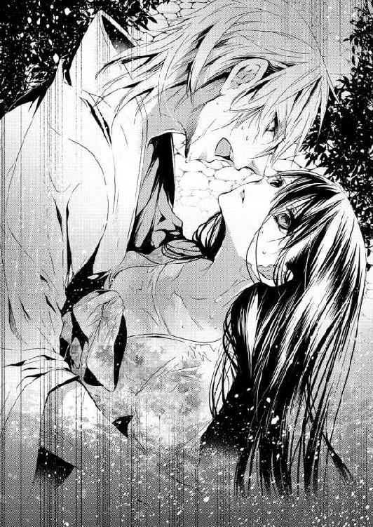
彼女のウエストに伊織の腕が巻きつき、痛いほどの力で抱きしめられていた。
名前を呼ばれたとき、彼の姿は見えなかった。まだけっこう距離はあったように思う。それなのに、伊織は躊躇なく川に飛び込んできてくれたのだ。
それだけで嬉しくて、悩んでいたことなどどうでもよくなってしまう。
「千花、俺の首に手を回して抱きつくんだ。できるな？」
返事をする余裕はなかったが、その代わり、すぐに彼の首に抱きついた。
そっと目を開けると、岸から一本の棒がこちらに向かって突き出されている。先端には塊がついていて、伊織はそれに手首を引っかけるようにして棒に摑まった。
岸に立って棒の端を摑み、伊織と千花を引き上げようとしているのは......。
（成実......さん？ でも、まさか......）
ジリジリと伊織の身体は岸に近づいていく。途中から、伊織は千花を横抱きにして、自力で岸まで上がったのだった。
土砂降りの雨はいつの間にか小降りになっていた。そんな中、千花は濡れた草の上に座り込み、肩で息をする。
助かってよかった。伊織が来てくれて嬉しい。
湧き上がるのはそんな感情ではなく──本当に死ぬかと思った。その恐怖のほうが頭から離れない。手足がガクガクと震え、千花は自分で自分を抱きしめる。
そのとき、肩にスッと手を置かれた。
千花が恐る恐る顔を上げると、伊織が眉根を寄せて、荒い呼吸を繰り返しながら見下ろしている。
（怒られる、よね？）
怒声を浴びせられると思い、千花は首を竦めた。
だが、伊織はそんな千花の身体を強い力で抱きしめたのだ。
「おまえを......失うのかと、思った。怖かった......頼む、俺より先に死なないでくれ」
震える声が聞こえてきて、まるで泣いているかのようだ。
その悲壮感が漂う彼の願いに、千花はなんと返事をすればいいのだろう？
迷う彼女に声をかけてくれたのは成実だった。
「伊織の両親が事故死だったことは聞いてるよね？」
「......はい」
「川の事故だった。伊織が小学一年の夏休み、場所は吉井川の上流──」
伊織の両親の死は、誰にとってもつらい思い出だろう。必要なときがくれば話してくれると思い、あえて千花のほうからは聞かずにいた。
ただ、事故死と聞いたとき、千花はなんとなく自動車事故を想像していたのだ。
実際は──。
夏休みも終わりに近づいたころ、伊織は両親とキャンプに出かけた。そのとき、伊織が川遊びの最中に溺れかけたと言う。
彼の母、葵が真っ先に気づき、助けに飛び込んだ。しかし、女性ひとりで溺れている子供を助けるのは至難の業だ。
そのことは今日、千花も身をもって知った。
結局、伊織を助けたのは彼の父、勇人だった。
勇人はまず伊織を岸まで連れて行き、駆けつけてくれた大人に預けたあと、葵を助けるためにふたたび飛び込み......。
そのまま、ふたりとも帰らぬ人となった。
「それ以来、伊織は川も海もダメ、プールにも入れなくなって......精神的なカナヅチだったんだけどね」
成実の言葉に千花はハッとした。
川遊びに誘われたとき、伊織が口にしたのは『行かなくていい』のひと言だけ。あの返事の意味は、伊織自身が川に入れないから、そして、万にひとつの事故が恐ろしかったため。
千花は申し訳なさに、伊織の作務衣をギュッと握る。
「おまえ......黙って聞いてりゃ、勝手なことばっかり」
「嘘は言ってないつもりだけど？ 千花ちゃんのピンチなら水も平気なんだね。なーんか、妬けちゃうなぁ」
「おいっ！ 成実」
伊織は成実のほうを向き、千花から離れて立ち上がろうとする。そんな彼に、千花は矢も楯もたまらず抱きついていた。
ふたりが愛し合っているなら、千花が身を引くのが一番だろう。
だが、やっぱり嫌だ。それに、伊織は身の危険も顧みずに千花を助けにきてくれた。そのことに、少しは期待してもいいような気がする。
今の伊織が愛しているのは、千花のほうなのだ、と。
「行かないで！ お願い......成実さんのところに戻らないで。ずっとあなたのお嫁さんでいてもいいって、そう言って！」
「......俺の嫁はおまえだけだが？」
何が言いたいのかわからない、といった伊織の返事が聞こえてくる。
「成実さんから聞いたの。えっと......お互いに、初めての相手だって。あ、別にそのことは、何も言う気はないから。でも、わたしが伊織の子供を産んでも、追い出さないで......。ずっと、奥さんのままでいさせてください」
彼の胸に取り縋ったまま、千花はひと息に叫ぶ。
同時に背後で息を呑む気配を感じ、振り返ってギョッとした。いつの間に、こんな大勢の人が──というほどの人たちが、千花たちを取り囲んでいたのだ。
おそらくは、子供たちから話を聞いた大人が、次々に声をかけ揃って駆けつけてくれたのだろう。
だが、近くにいた人たちには千花の声が聞こえてしまったらしく、一様に驚いている。
「あ......ごめんなさい。あの、こんなに人がいるなんて......わたし」
千花は慌てて謝ったが、伊織は彼女を置いて弾けるように立ち上がった。
伊織の背中から怒りの波動を感じる。彼に恥を掻かせてしまったから、もう千花のことは許してくれないかもしれない。
彼女がもう一度謝罪を口にしようとしたとき──。
「成実ーーっ!! おまえって奴は！」
腹の底から絞り出すような、怒りの籠もった声だった。雨に濡れた森の木々までもが震えあがって見える。
「ちょ、ちょっと、待った！ 私は──伊織の初めて打った刀を研いだのは私だって、そう言っただけじゃない。嘘じゃないでしょ？ ね？ そうだよね、千花ちゃん」
伊織に向かって降参のポーズを取りながら、必死になって千花に同意を求めてくる。
「それは、でも、言葉の順番が違うような......？」
他にも『パワフルで情熱的』『フォローしてあげないとダメだった』とか言っていたはずだ。あと『子供の産めない身体』だから、伊織とは結婚できなかった、と。そんな内容の言葉をたしかに聞いた。
だが、不妊は女性にとって繊細な問題だ。人前で気軽に話せることではない。
千花が成実のこと気遣ったとき、伊織が予想外のことを話し始めた。
「俺が正式に爺さんの弟子になって、初めて打った短刀をこいつに研いでもらった。ちょうど同じ時期に成実も研師を目指して、親父さんのもとに弟子入りしたからな」
その言葉に、千花は驚きの声を上げる。
「え？ 成実さんって研師だったんですか？ 女性なのに凄いですね」
半分は心から感心して、残りの半分は......。
（伊織のために研師になろうとしたのかな？ でも結婚できなくなって、研ぎもやめたのだとしたら）
嫉妬と敗北感で千花は落ち込んでしまいそうになる。
だがそのとき、周囲からさっき以上に驚愕の声が上がった。どよめきは波紋のように、ざわざわ......ざわざわと広がっていって、町の人たちはただならぬ雰囲気に包まれる。
「あの......わたし、何か変なこと言いました？」
「いや、おまえは変じゃない。変なのはこいつだ。全部、こいつのせいなんだ！」
伊織は成実を指差しながら言う。
「四年前、相談もなしに大学を中退して、研師の仕事も放り出してこの町を出て行った。一年後に帰ってきたかと思ったら、女の格好なんかしやがって」
「......？」
千花が何も言えずに首を捻っていると、
「成実は俺の従兄、〝男〟なんだ！」
「そ、そんな......まさか......だって、今まで誰も」
慌てて周囲を見回すが、みんな千花と視線を合わせようとしない。
すると、当の本人が千花の前までやってきて、手を摑むなり自分の胸に押し当てた。濡れた浴衣の胸元はずいぶんペタンとしている。
（前から、スレンダーだなぁとは思ってたけど......でも、これは？）
そのまま浴衣の内側まで手を誘導され、千花は成実の胸に直接触れた。
伊織のような逞しさはないが、女性の胸とは違って平たくて硬い。
「む、むね、胸が......」
「うん、ないでしょ。あ、下のほうがあるかどうか、念のため触って確認しとく？」
千花が衝撃に固まったままでいると、手を股間まで持っていかれそうになり......。
「そんなモノに触らせるんじゃない！」
伊織はひったくるように、成実の手から千花を取り戻した。そのまま、自分の背後に押しやる。
「しょうがないなぁ。じゃ、千花ちゃんの前でストリップでもしようか？」
「......しなくていい」
「ああ、そうか。伊織ったら自信がないんだ。千花ちゃんが私のモノに目移りしたら、困るもんねぇ」
「だ、誰が、おまえなんかに負けてると──」
延々続きそうなふたりの言い合いだったが、千花が伊織の背中に手を置いたとたん、彼の意識が成実からこちらに向いた。
「あ......いや、俺も悪かった。とっくに知ってると思ってたんだ。まさか、あいつがそんな馬鹿なことを言ってるとは、思ってもいなくて」
千花は彼の背中にもたれかかるように身体を預ける。
「よかった......成実さんが帰ってきたとたん、伊織が冷たくなったから、わたしが邪魔になったんだって......だから、本当に、よかった」
ホッとした瞬間、千花の身体から力が抜けてしまい......。
昨夜、一睡もせずに伊織の帰りを待ち侘びたことや、溺れそうになったショックも重なって、千花の意識はしだいに遠のき、やがて何も見えなくなったのだった。
☆ ☆ ☆
千花が意識を取り戻したとき、豆電球のオレンジ色の光が見えた。しだいに目が慣れ、離れの布団に寝かされていることに気づく。
優しい風が千花の素肌を撫でていく。
エアコンの冷たい風でも、扇風機の強い風でもない。気になって横を向くと、畳の上に伊織が座り、団扇で風を送ってくれていた。
「お、やっと起きたな」
「わたし......ひょっとして、寝てた？」
声を出すと、自分でも思った以上に掠れていてびっくりする。
「ああ。倒れたまま意識が戻らないから、医者に往診してもらったんだ。そうしたら、寝てるだけだから心配はいらないって言われて、ずっとおまえの寝顔を見てた」
伊織は穏やかに微笑みながら答えた。
だが、溺れかけて大騒ぎした挙げ句、あんな場所で倒れてしまったのだ。さぞかし、みんな心配しただろう。それなのに寝てしまっただけ、なんて。
（恥ずかしくて、町の人に合わせる顔がない）
千花は思わず掛け布団を頭からかぶるが、伊織にパッと捲られた。
「何やってんだよ」
「だって、恥ずかしい。でも、伊織も悪いんだからね！ わたしをひとりにして、夜中に出て行ったまま戻らないから、一睡もできなくて......」
仕事で鍛刀場に泊まると言っていたが、ひょっとしたら、成実のところに行ったのかもしれない。そんなことを考えながら眠れるはずもなく。
そして、伊織は朝になっても帰って来なかった。
ようやく昼食に戻ってきたが、黙々と食べるだけ食べて、何も言わずにまたすぐ出て行ってしまったのだ。
「伊織と......別れたくない。そう言おうと思って追いかけたら、子供たちに遭遇して......」
兄妹の親も来ていたように思ったが、眠りこけてしまった千花を見て、呆れたかもしれない。
どちらにせよ、恥ずかしくて堪らなかったが、伊織の言葉は意外なものだった。
「みんな、おまえに感謝してたよ。勇気ある行動で、子供の命が救われたって。あの子たちの親も、今度あらためて礼にくるとか言ってた」
役に立ったのかどうか、自分ではよくわからない。
あのとき、最初に駆けつけてくれた賢二のおかげで少年は助かった。千花ひとりなら、伊織がくるまで耐えられずに流されていただろう。
むしろ千花のほうが、駆けつけてくれた人たちにお礼を言うべきだろう。
「伊織は怒ってないの？ 助けるだけの力もないくせに、危ない真似をしたって叱られると思ってた」
千花はうつむきならボソボソと言う。
「それは......言いたいけど、言えないんだ。それを言ったら、ろくに泳げないくせに俺を助けようとした母さんを責めることになるからな」
伊織の言葉はとても重くて、やり場のない悲しみに包まれていた。
千花はジッとしていられなくなり、身体を起こすなり彼に抱きつく。
「ごめんなさい！ わたしのために、川に入らせて......本当にごめんなさい。もう二度としないから。あんな危険なこと......何かあったときは、助けがくるまで待つから」
「──本当に？」
叱るでも責めるでもない、心の底を探るような問いかけに、千花は返事ができなくなる。
「俺はずっと心のどこかで、父さんと母さんは間違ったことをした、と思ってた。俺なんか、助けるべきじゃなかったんだ、って」
「そんなことは......」
彼の言うことは間違っている、と思う。だが親を亡くした経験もなく、ましてや自分を助けたために、となれば。
簡単に否定することはできなかった。
「そんな顔をするな。理屈じゃないってわかったんだから」
伊織はずいぶんとさっぱりした顔をしながら続ける。
「そう遠くない将来、もし、俺たちの子供が危険な目に遭いそうになったら......俺は助けると思う。たとえ自分が死んでも、おまえや子供を守りたい。本当は、臆病者の俺にはできないって思ってたから、いざってときに動けてホッとしてる」
「伊織......」
千花は顔を上げて伊織を見た。
どうして気づけなかったのだろう。彼の瞳には千花に対する愛情が溢れている。
両親の死に責任を感じて、愛することや愛されることに不器用で、それでも必死で愛してくれていたのに。
「わたし、成実さんの言うことを信じちゃって、ごめんなさ......」
何度目かの謝罪の言葉は、重ねられた伊織の唇に吸い込まれていった。
千花の唇を隅々まで味わうように押しつけてくる。熱い唇は頬から顎を伝い、首筋まで愛の印を刻んでいく。
「もう、謝るな。成実は俺を疎ましいと思ってるんだ。だから、あいつはおまえに嘘を吹き込んだ。たぶん、俺を傷つけるためだろうな」
唇を耳の裏側辺りに彷徨わせ、伊織はささやく。
それぞれが修業の道を歩き始めたのは、伊織が十三歳、成実は十五歳。そのときに、刀匠と研師として〝櫻一文字〟史上最高と呼ばれる刀を作ろうと約束した。
だが、刀匠ひと筋に邁進する伊織と違い、成実は横道に逸れ始める。学校をさぼって遊びに行ったり、髪を金色に染めたり......。
そして今から四年前、伊織が展示会で新人賞に選ばれたとき、成実は研磨部門で銀賞を受賞した。だが、受賞前は金賞を期待されていて、誰もが『おめでとう』ではなく『残念だったね』と声をかけたという。
とくに伊織は、
『金賞第一席を逃したのは、おまえの努力が足りなかったせいだ。大学は留年、研ぎのほうも手抜き──どうして本気でやらない!? 今のままじゃ、おまえに俺の刀は任せられない』
期待をすればこそ、伊織が口にしたのは叱咤激励だった。
「あいつは俺のことを嫌ってる。おまえを探してくれたのも、俺がふられるところを見たかったらしい。そろそろ離婚話が出てるかと思って戻ったら......予想どおりじゃなかったから、波風を立たせようとしたんだよ」
「そんなこと......ない、と思うけど......キャッ！」
ふいに布団の上に押し倒された。
「また、あいつを庇う。そんなに気に入ったのか？」
「別にそういう意味じゃ」
「工房裏にふたりでいるところを見て、俺がどれだけ嫉妬したと思ってるんだ？ おまえ、妙に気を抜いた顔をしてただろ？ 俺と一緒のときより、リラックスしてるみたいで......盗られるかと思った」
伊織は頬を赤くしながら、千花に顔を寄せてくる。
肌に触れる吐息の熱に、千花の心は早鐘を打ち始めた。
（成実さんにヤキモチ妬いてくれたんだ......なんか、嬉しい。また、キスするのかな？ その先は......あ、ちょっと待って、わたしシャワー浴びてないんじゃ？）
目を閉じて彼のキスを感じた直後、千花は伊織の胸を押し返した。
「ま、待って、わたし......ジャージだよね？ お風呂に入って、着替えてくるから、それまで待ってて」
すると、とたんに伊織の表情が曇った。
「正直に言ってくれ。俺の......セックスって、つまらないか？」
「な、な、なんで？ どうして、そうなるの!?」
その質問に千花は慌てふためく。毎晩のように──日によっては朝や昼も、千花の身体をさんざん翻弄しておきながら、今さらそれはないだろう。
ところが、伊織は口ごもりながらとんでもないことを言い始めた。
「お、おまえが言ったんだ。その......俺は、早いって」
なんのことかわからず、千花はポカンとする。
だがすぐに──『伊織って、奥まで入れたら......すぐ、だもんね』、千花が昨日の朝、森の広場で悔し紛れに言ったセリフを思い出した。
「あ、あれは、伊織が......きゅうりがどうのって苛めるから......第一、わたしには伊織だけって知ってるじゃない！ それなのに......は、早いとか、わかんないわよ」
千花は喘ぐように答える。
すると、伊織は耳まで赤くしながら、
「昨夜も嫌がっただろ？ だから、おまえが早いって感じてて、俺に満足してないんじゃないかって」
「だって、成実さんに......自分は伊織の子供が産めないから、わたしが子供を産んだら、自分たちで育てるみたいに言われて......。伊織も凄く怒ってるくせに、強引にでも抱こうとするから......愛してるって言葉も嘘で、子供ができたら追い出されるのかもって思ったら、怖かったんだもの」
絶望的な気持ちを思い出した瞬間、千花の瞳に涙が込み上げ、溢れ出た涙はこめかみを流れ落ちていった。
その涙に衝撃を受けたかのように、伊織は彼女の身体に手を回し、力いっぱい抱きしめる。
「愛してる、千花、おまえのことを死ぬほど愛してる。信じてくれるか？」
「ん......信じる。だって、命がけで助けにきてくれたから」
彼の体重を全身に感じながら、ふたりは熱烈なキスを繰り返した。
繰り返し重ねて舌を這わせ、上と下の唇を順番に吸われる。しだいに千花の愛らしい唇は、唾液で艶めき、ぽってりと厚みを増した色っぽい唇へと変わっていく。
「風呂、入るか？」
「いいの？」
伊織の瞳は欲情に色めき、すぐにも膝を割ってきそうなほどの熱を感じる。
それなのに、千花がお風呂に入っている間、待っていてくれるのかと思ったが......。
離れの寝室を出て、渡り廊下を通り、母屋に入ってすぐの位置にお風呂があった。そこまで伊織に横抱きにされ、連れてこられた。
お屋敷のサイズに合わせてあるのか、お風呂場もけっこう広い。とくに新しくしたばかりのヒノキの浴槽は、特注サイズで畳一枚分もあった。
浴槽の横には手すりがあり、手前には踏み段にもなる腰かけも設置されている。
辰吉がぎっくり腰で入院中したとき、急遽リフォームしたものだった。
その広い湯船に浸かり、ゆったりと足を伸ばして後ろにいる伊織にもたれかかる。ふたりは一緒に入浴していた。
「もう遅い時間なんでしょう？ どうしてお湯がはってあるの？」
すぐに入れるようになっていたことに驚き、千花は尋ねる。
「二時を過ぎたころじゃないか？ これは、俺がさっき入ったからだ。目を覚ましたら、おまえも入るんじゃないかと思って、そのままにしておいた」
「さっき？ じゃあ、伊織は入らなくてもいいんじゃ......」
千花がそう言いかけたとき、伊織の手が彼女の胸に回された。
「キャッ！」
「意地悪なこと言うなよ。あ、風呂場の声は響くからな。デカい声出したら、爺さんが起きてくるぞ。ひょっとしたら、ときさんの家まで聞こえるかも」
伊織自身が意地悪なことを言いながら、大きな手でゆっくりと胸を揉み始める。
パシャンパシャンとお湯が浴槽の壁に当たる音が聞こえ、縁を越えたお湯は床の御影石を流れていった。
十喜子の家は弟子が住む一軒家の横にある。結婚前は住み込みだったが、結婚後は家を構えた。子供たちが嫁ぎ、夫が亡くなり......辰吉から、ふたたび住み込みを提案されたが、断って通いの家政婦を続けている。
いくら声の響く風呂場でも、同じ屋根の下にある辰吉の部屋ならともかく、さすがに十喜子の家までは聞こえないだろう。
「伊織のほうが、意地悪じゃ......な、い......あっ」
胸をやわやわと揉んでいた手が、円を描くように腹部をなぞり、お湯の中で揺らめく茂みの奥へと滑り込んでいく。
すぐに突起を抓まれ、千花の身体はビクンと跳ねた。
小さな花芯は愛撫されるうちに、少しずつ硬く膨らんでくる。そして、ほんのわずか指先で弾かれるだけで反応するほど敏感になり、千花を快楽の渦へと引きずり込んだ。
大きく揺れていた湯船の表面は、脚の間を撫でるようになると、とたんに静まり返る。だが底のほうでうねり続けていた。
「千花、脚が閉じてきてる。もっと開いてみろよ」
「やっ......やだぁ」
ゾクゾクした快感がすでに千花の官能を捉えていた。
我慢しようと思うのに、愉悦に満ちた声が漏れてしまう。
「俺が頼んでもダメか？」
肩越しに顔を出し、千花の横顔をジッと見ている。甘い熱を孕んだ視線に、見られている側の頬が溶けてしまいそうだった。
「だって......絶対に、声......出ちゃう、もの」
「出していいって言ったら？」
「ダ、ダメだってば！ おじい様に、聞かれ......たら、恥ずか......ぁ、あ、ああっ......やっん、ああっ！」
お湯の中、伊織の指先がいっそう激しく動き始めた。
胸を揉んでいたもう片方の手も太ももに回され、千花の脚に伊織は自分の脚を絡めてくる。自然に羞恥の部分が開いていき、直後、伊織は蜜窟に指を押し込んだ。
「あ、あ......はぁうっ！」
千花は片手で浴槽の縁を、もう片方の手で伊織の脚を摑んでいた。
押し込まれた指とともに、膣奥までほんのりとした温もりが入り込む。
「一本じゃ足りないだろ？」
言うなり、二本目の指を差し入れる。二本の指は壁を引っ掻くように動き、同時に親指で淫芽を弄り、千花の躰に悦びの火を点ける。
「あ......そこは、ダメ！ 伊織、お願......い、それ以上、はぁ......んんっ、やっ、やぁんっ......待って、ま、あっ、あぁ......あああぁーっ！」
もう、我慢することなどできない。
羞恥心も何もかも消え去り、千花は伊織から与えられる悦びを受け取った。下肢を戦慄かせ、臀部を伊織の局部に押しつけながら、嬌声を上げる。
お湯の中とはいえごまかしきれないぬめりが、千花の蜜壺から溢れ出ていた。
ハアハア......と荒い息をしながら、クタッとして伊織に上半身を預ける。
「気持ちよかったか？ おまえの達くとこって、何度見ても可愛いな」
臆面もなく言われ、千花のほうが答えに困ってしまう。
（だって、お屋敷にはおじい様が寝てるのよ。離れならともかく、お風呂は母屋だし......。やだ、もう、絶対に聞こえちゃった気がする）
堪えきれずに達してしまったものの、我に返れば恥ずかしさが込み上げてくる。
すると、黙り込んだままの千花の心情を察したのか、伊織が種明かしをし始めた。
「悪い、悪い。爺さんは今夜、成実の家に行ったんだ。あいつと腹を割って話したいってことだけどな......」
本当のところは、夫婦喧嘩の真っ最中だったふたりに対する気遣いらしい。
『雨降って地固まると言う。あの豪雨は天の恵みじゃ。そうは思わんか、伊織』
そう言って、ふたりきりにしてくれた。
「え？ じゃあ......」
「この屋敷には俺たちふたりだけだ。今夜ばかりは広い屋敷でラッキーだな。どれだけ声を上げても外までは聞こえない」
伊織はニコニコ笑いながら言うが、千花にすれば笑いごとではない。
「だったら、最初からそう言ってよ！ おじい様に聞こえるのにって、泣きそうだったんだから。伊織の馬鹿っ！」
「そんな、真剣な顔で怒るなよ」
「怒るわよ！」
離れそうになった千花の身体を、伊織は慌てて抱きすくめ、自分に引き寄せた。
「だから、悪かった。恥ずかしがるおまえの顔が可愛くて、つい。でも、そんなに嫌ならもうしない」
叱られてしゅんとなった大型犬のようだ。
怒っている自分のほうが悪者みたいで、千花は伊織の頬に手を添え、彼の唇にチュッとキスをした。
「嫌じゃ、ないよ。伊織にされることで、嫌なことなんてひとつもない」
「......千花」
今度は伊織のほうから唇を重ねてきた。
その瞬間、掠れた声で「愛してる」と聞こえ──。
キスが深まるにつれ、温めのお湯でもさすがに暑くなってくる。千花が、離れに戻ろうか、と言おうとしたとき、伊織に腕を摑まれて立たされた。
伊織は彼女に、浴槽の縁に手をつくよう促す。
千花は全裸でお尻を突き出す格好になってしまった。この上なく恥ずかしい。気になって伊織の顔を見ると、逆にどうしようもなく嬉しそうだ。
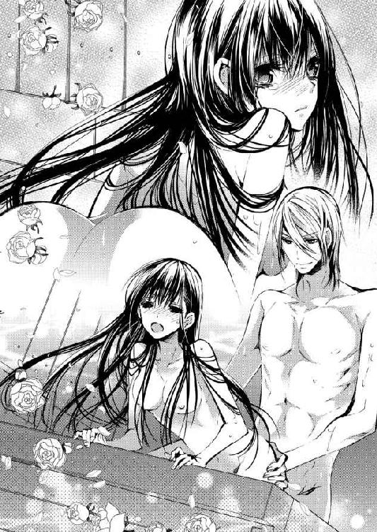
「伊織って、やっぱり変態かも」
心の中で呟いたつもりだったが、口に出てしまった。
「う、うるさいっ」
照れたような声だが、とくに否定する気はないらしい。
彼は千花の腰を摑み、雄々しく反り返ったペニスで蜜をすくい取りながら、彼女の胎内に突き立てた。
「はあぅ！」
千花の膣内が、一瞬のうちに欲情の熱で埋め尽くされる。
ひと突き目は広げられる衝撃のほうが強いが、ふた突き目からは、じわじわと中をこすられる快感のほうが勝ってきた。
「ああ......凄いな。熱くて、ぬるぬるだ。最初の夜は、後ろから突いたら不安そうにしてたのに......今は、気持ちよさそうに腰が揺れてる」
抽送に合わせて、無意識で腰を前後させていたらしい。
千花は我慢して動きを止めようとするが、
「伊織が......伊織のせい、なんだからぁ、ぁ......あぁっ」
容赦ない彼の攻撃に、湧き出る快感を止めることなど不可能だ。
「千花、恥ずかしがらずに教えてくれ。俺が感じてる悦びと同等のものを、おまえにも与えてるって、ちゃんと聞きたい」
言いながら、伊織の抽送は激しさを増していく。
パチュン......パチュン......と水を叩くような音がして、汗とも体液ともわからない雫がふたりの繋がった場所から湯船の中に滴り落ちる。
伊織は千花の中が熱いと言うが、彼女にすれば灼熱の肉棒を押し込まれている感覚だ。それは彼女の胎内で溶け合い、ふたりがひとつになる。
「気持ち......いい。気持ちよくて、わたし......ぁあ、あっく......も、うっ」
「好きだ、愛してる、千花......俺の、全部を受け止めてくれ」
その瞬間、伊織は背後から彼女を抱きしめた。
ドクン、ドクンと体奥で打ち震える伊織の分身が愛しくて堪らない。
千花は上半身を捻って振り返り......それを待っていたかのように、彼女の口元に伊織の唇が押し当てられる。
「大好き......伊織の、エッチも好き。えっと......変態でもいいから、ずっとわたしだけを好きでいてね」
はにかんだ笑顔でそう伝えたとたん、伊織は困ったように笑った。
「ああ、もうダメだ。降参する。おまえに好きだって言ってもらえるなら、俺は喜んで変態になる」
「そ、そうじゃないから。それじゃ、わたしのほうが変態みたいじゃない！」
伊織は千花を抱きしめ、
「いいよ。おまえが変態でも大好きだ」
今度は心の底から楽しそうに笑っている。
「違うでしょう？ 変態なのは伊織のほうで......わたしは......ちょっと、きゃっ！」
彼は来たときと同じように、千花を横抱きにした。
違うのはふたりとも全裸という点だろうか。
「部屋に戻ったら、もっと恥ずかしい格好で愛してやるよ。いやらしい言葉もいっぱい言って、気持ちよくしてやる。千花は俺とのエッチが好きなんだもんな」
それって違う、と思いつつ──『部屋に戻ったら......』という言葉に、ときめきを抑えられない千花だった。
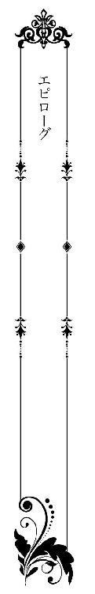
一月──千花と結婚して初めてのお正月を迎えた。
二日には恒例の打ち初め式が行われる。それに挑むため、伊織は氷水のように冷たい井戸水を頭からかぶり、全身を清めていた。
打ち初め式は、刀匠の守り神を祀った神社から宮司を呼び、一文字派の鍛刀場で祈祷をしてもらう。そのあと、〝日本刀の森〟にある工房の鍛刀場に移り、一年の無事を願って繰り返し鍛錬を行うのだ。
祈祷は非公開だが、工房の打ち初め式は一般にも公開している。
ただ、市長をはじめ地元の有力者や国内の刀剣関係者、顧客ともいえる刀剣蒐集家などを招くので、一般の見学者はかなり制限されてしまう。しかし、毎月の実演とは違い、工房の職人たちも全員が揃うので、熱心なファンが毎年列をなしていた。
この日ばかりは下着に褌を身につけ、白衣の上衣に白袴、黒い烏帽子をかぶる。神をその身に下ろし、刀を打つという、刀匠にとって古式ゆかしい格好だった。
「伊織、寒くない？」
正月早々、屋敷内の井戸から冷水を汲み上げ、全身に浴びる伊織のことを千花は不安そうにみつめている。
だが、千花の吐く息も真っ白で、伊織より彼女のほうが寒そうだ。彼女の手には大きなバスタオルがあり、それを渡すタイミングを計っているらしい。
伊織は彼女に向かって手を差し出した。
「ああ、大丈夫だ。そろそろ着替えるとしよう。バスタオルをくれるか」
「あ、はい！」
淡い桜色の着物姿の千花が、満面の笑みを浮かべて駆け寄ってくる。
祖母の形見の一枚という、菊や梅、橘といった花々を散らした古典柄の訪問着。髪は楚々と纏め上げ、新婚八ヶ月という新妻の色香を漂わせていた。
「でも、褌姿の男性なんて......生で見たのは初めて」
そんな彼女にとって目下の関心は、伊織が身につけた褌のほうらしい。中に収まっているモノもちゃんと知っているくせに、チラチラと伊織の下半身を恥ずかしそうに見ている。
「そんなに気になるか？」
「気になるっていうか......そういう格好は誰にも見せないでほしいかなぁ、なんて。だって、セクシーなんだもの」
頬を染めて恥ずかしそうに、上目遣いで話す。
そんな千花の表情は、伊織にとってまさしくツボだった。
井戸水で身を清め、精神統一したはずが......。極寒にもかかわらず、千花の仕草ひとつに伊織の頭の中は邪心でいっぱいになる。
（十代のガキじゃあるまいし、冷静になれ！ 今から打ち初め式なんだぞ。職人たちの一年の安全を祈願する大事な式なんだ！）
褌の中で暴れそうになる邪心を懸命に鎮めつつ、伊織は深呼吸を繰り返した。千花から意識を逸らせるためにも、さっさと着替えを済ませようとする。
そのとき、千花が妙に華やいだ声を上げた。
「あ！ おはようございます、成実先生。白衣と白袴、とってもお似合いですよ！」
すでに着替えを済ませ、爽やかな笑顔を見せたのは、成実だった。
昨年夏、千花が増水した川に流されそうになった翌日──成実は唐突に女装をやめた。そのまま刀剣商での営業もやめ、成実は研師として一文字派に戻ってきた。町の全員が、いったいどんな心境の変化があったのだろうと、五ヶ月経った今でも噂の的だ。
中でも一番と思われる理由は、
『千花ちゃんだよ、きっと。子供のために命を懸けた千花ちゃんに、惚れちゃったんだねぇ。ああ見えて、きちんとした格好をすれば、捨てたもんじゃないからね。気をつけなよ、若先生！』
ということになっている。伊織は子供たちからも、『負けるな』『頑張れ』と声援を送られる始末だ。
肝心の千花は『あり得ないから』と笑っているが......。
実は、成実からは宣戦布告に近いことを言われたのだった。
『情けないから黙ってたけど、大学の卒業論文が書けなかったのは、展覧会用の研ぎに集中したから。ようするに、銀賞止まりだったのは私の実力で、足りなかったのは努力じゃなくて才能だったってこと』
そう言われたとき、伊織はなんと返事をすればいいのか、わからなくなった。
『千花ちゃんってさ、折れそうで折れない柳みたいだよね。心変わりとかはしそうにないけど、一度相手に幻滅したら終わりっぽいかな。......そのときは、私にもチャンスがありそう』
伊織はカッとして成実に怒鳴りつける。
『別れないぞ。俺たちは絶対に別れない。おまえにも、他の誰にもチャンスはない！』
千花の『大好き』という言葉が頭の中に流れる。彼女は浮ついた女性ではない。伊織のことを信じ、彼だけをみつめて、いつも最高の愛情で包み込んでくれる。
疑う余地もないほど、ふたりは愛し合っているのだ。
（もちろん俺も、千花にベタ惚れだし......）
伊織が拳を握りしめて千花への思いを新たにしていると、ムカつくほど能天気な声が聞こえてきた。
「おっはよー、千花ちゃん。へー、京友禅の訪問着か。爽やかなお色気を感じるピンクだね。まだまだ新婚さんの千花ちゃんにピッタリだ。おまけに、こっちまで元気をもらえそうだし」
「やだ、もう、成実先生ったら。女装してたときはクールビューティだったのに、男の格好をしたとたん、ナンパ師みたいですよ」
伊織は、『みたい』じゃなくて、ナンパ師そのものだろう、という言葉を呑み込む。
「千花、俺は大丈夫だから、爺さんのほうを手伝ってやってくれ」
成実と引き離したくて、伊織は千花をこの場から遠ざけようとした。
ところが、だ。
「私も一緒に行こうかなぁ。辰吉爺様には打ち初め式の前にご挨拶したいし」
「おまえはいいんだ！」
千花の肩を抱いて一緒に歩いて行きそうになり、慌てて引き止める。
「男の嫉妬は醜いよ。亭主なら、どーんと構えていたらどうかな？ 伊織センセ」
図星だが、伊織は咳払いして声色を変えた。
「そうじゃなくて。おまえに言っておきたいことがあったんだ」
「愛する妻を奪わないでくれ、とか？ ......冗談だよ。正月早々、殺気立つな」
「──銀賞の件だ。俺なりにいろいろ考えたんだ。銀賞が実力だってことには同意するが......やっぱり、足りないのは努力だと思う。才能なんて言い訳で逃げた、おまえの怠慢だ」
千花に関することでは頭にくる男だが、研ぎの才能が銀賞止まりとは思えない。
そんな伊織の言葉を、成実は笑って受け止めた。
「あーはいはい、わかってますとも。次は金賞第一席を取ってやるよ。そのときは『成実先生、お願いですから研いでください』と言わせてやるから、覚えとけ」
「ああ、楽しみに待ってる」
伊織は昔を思い出して、フッと笑みが零れた。
だが──。
「千花ちゃんにもお願いがあるんだ！ 金賞取ったらさ、千花ちゃんが私の言うことをなんでも聞く、とかはどう？」
辰吉のもとに戻るかどうか、悩んでいる千花に向かってとんでもないことを言う。
思わず、力尽くで成実を排除してやろうか、とも考えたが、千花はにっこり笑うと伊織の腕を取った。
「成実先生のお願いは叶えてあげたいけど、『なんでも』は無理です。わたしが『なんでも』言うことを聞くのは、伊織だけだから──ね？」
邪気のない千花の笑顔に、成実はお手上げのポーズを取る。
成実は伊織の横を通り抜けるとき、
「言われてみたいねぇ、なんでも言うことを聞きます、とか。やらしい命令ばっかするんじゃないぜ、伊織センセ」
千花に聞こえないような小声で呟くと、ふたりの前から去っていくのだった。
そんな成実の後ろ姿をみつめながら、千花は吐息を漏らした。
「あんなに笑う人だったんだねぇ。──ねえねえ、伊織。成実先生って、本気じゃないよね？」
「どうかな？ ただ、本気のときは、簡単に諦める男じゃないのはたしかだな」
その返答が気に入らなかったのか、千花は彼の腕を離そうとしない。
「伊織は？ 従兄相手なら、譲ったりしちゃうの？」
不満と心細さを露わにした質問だった。
「いや、誰が相手でもおまえだけは譲らない。俺に逆らう奴はいないさ。なんと言っても、その気になれば武器には事欠かないからな」
「もうっ！ 美術品なんだからね。武器に使っちゃダメよ。でも、そう言ってもらえるのって嬉しい」
白衣の袖に縋る千花がいじらしくて、打ち初め式のことなど忘れてしまいそうだ。
邪念を捨て去るため、氷点下に近い中で井戸水をかぶったはずなのに、千花の笑顔ひとつで伊織は今すぐ彼女を押し倒したくなる。
「白袴で打ち初め式なんて、素敵だよね。しっかり見てるから、頑張ってね」
「......ああ」
短く答えて千花から離れようとした。
そんな伊織の仕草に彼女も何か察したらしい。
「あ、ごめんなさい。ひょっとして、身を清めたあとは、女性に触れたらダメだった？」
千花のほうから手を離し、申し訳なさそうに身を竦める。
だが、ダメなのは伊織のほうだった。堪えきれずに千花の身体を抱き寄せ、有無を言わせない勢いで口づける。
冷たい唇が、重ねられた瞬間、火が点いたように熱くなった。
「悪い。すっかり冷えたな」
「大丈夫だけど......伊織のほうは、平気？」
千花が困ったように下半身をモゾモゾと動かしている。それもそのはず、伊織の躰はすでに戦闘モードに入っていて、このまま意思の力では鎮められそうにない。
甘い香りと柔らかな肌──伊織は気合いを入れて、千花から飛びのいた。
「平気じゃない。もう一回、清めてくる」
ふたたび白衣と白袴を脱ぎ捨て、褌一丁で井戸の桶を手に取る。
自分は冷静沈着で、理性の塊だと思っていた。刀匠の仕事以外はすべて後回しにでき、私生活などいくらでも犠牲にできる、と。そんな自分の生き方に誇りを感じていた。
だが、今は──。
孤独ではなく、幸福を糧に打つ刀も悪くない。
初春の朝日に照らされながら微笑む千花の姿に、至福を感じる伊織だった──。
あとがき
チュールキス文庫さんでは、はじめまして！ 御堂志生です。
十月に創刊されたチュールキス文庫さんのラインナップに、早速加えていただけることになりました。お声をかけてくださった担当様をはじめ、関係者の皆様、そして読者の皆様のおかげです。本当にありがとうございました。
姉妹レーベルのロイヤルキス文庫さんではヒストリカル風を二作出させていただいてますが、こちらは現代物になります。
現代物でも私の場合、シークや王子様が登場する和洋折衷（？）が多いんですが......。今回は純和風でいかせていただきました！
プロットを出す前、担当さんに「刀匠ヒーローはどうでしょう？」と推したのは私です。
たまにはスーツを着てないヒーローを、と思ったとき、和装のヒーローもいいよなぁ、と。真っ先に日本刀が頭に浮かびました。
着物だと茶道や華道でもよさそうですが......ヒーローにはやっぱり、逞しい肉体が欲しいでしょう？ 欲しいですよね！ ええ、私が欲しかったんです!! 居合道や剣道でもよかったんですけど、でも職業となると......そこに結びつきそうな刀匠に決めました。
イケメン度はいつものヒーローに勝るとも劣りませんが、億単位の金をササッと動かせるような金持ちヒーローに比べると、今回の伊織くんはわりと普通だと思います。
うん、乗ってる車も軽自動車だし、デートでたこ焼き食べてるし、泊まるのもビジネスホテル（笑）いやぁ、なかなか新鮮でした。
新鮮といえば......電子書籍ではＯ市を舞台に、ほぼシリーズみたいに書いてますが、書籍の書き下ろしで岡山を舞台にするのは初めてだったと思います。
なんといっても日本刀といえば私の地元、備前岡山！ 他にもありますが、地元びいきってことでご勘弁を。そうなると、せっかくなので東京を舞台にするより、ヒロインの千花ちゃんには岡山までお嫁にきていただきました。
あ、そうだ。以前、岡山城の名前を変えて書いたときは、天守閣とかお堀の近くとかで色々させちゃったんですが......。今回は岡山城や後楽園が実名で出てきますので、その辺りを使った××シーンはございません！
ええ、そういった、ここでやったらマズイだろう？的なシーンは別の場所でやっておりますので、読者の皆様、どうぞご安心ください！ と力強く宣言。（←おいっ）
それと〝日本刀の森〟のある森ですが、この辺りを切り拓いて造っちゃえということで、吉井川近くの森を脳内開発させていただきました。
キャラの中でもっと出番を増やしたかったなぁと思うのが成実さん。初めて書いたようなキャラなんですが、上手く書けたかな？
新婚カップルがイチャイチャするシーンも書いてて楽しかったです。一番は朝稽古のとき。あの野菜を、○○に使うべきかどうか悩んで......断念しました（苦笑）
ヒストリカル風を書くときは、イメージする国や時代が毎回変わることが多いので、その都度勉強なんですが......。今回はそれに負けないくらい、色々と勉強させてもらいました。
それに、刀匠や日本刀についての雑誌が本屋さんに行くといっぱいあって、お店によっては専門コーナーまであったので、調べるのは楽しかったです。資料と言いつつ（決して趣味ではない！）、ついつい買い込んでしまいました。
数年前に日本刀について調べたときは本当に情報が少なくて、苦労したんですけどね。
全国の刀匠の皆様、これを読んでくださる方はいないだろうなぁとは思いますが......。日本刀の作刀過程や刀身の美しさに感動しました。どうか、これからも頑張ってください。日本古来の技術が千年後の未来にも受け継がれていますように──。
ちなみに、一生懸命勉強したつもりですが、間違ってるとこはあるかも......。そこはツッコミなしでお願いいたします（汗）
イラストは今回初めてお世話になりました、憧れのすがはらりゅう先生!!
すがはら先生と初めてお話させていただいたのは二年以上前だったかな？ ツイッターで声をかけさせていただきました。私が文庫デビューした直後でして、いつか先生にイラストを描いていただけるよう頑張ります。と言ったら、タイミングが合えばいつでもＯＫ、なんて嬉しいお返事がいただけたんですよねぇ。でも、そのタイミングが中々合わず......。
チュールキス文庫さんで二年越しの願いが叶って感無量です！（感涙）
すがはら先生、どうもありがとうございました。
あと、その願いを叶えてくださった担当様にも、心からお礼申し上げます。
いつも応援してくださる読者様──今回も楽しんでもらえましたでしょうか？ 次回もより楽しんでいただけるお話を書きたいと思ってますので、これからもどうぞよろしくお願いいたします。本当にありがとうございました。
メールで励ましてくれるお友だち、素敵な作品に仕上げてくださった関係者の皆様、変わらず見守ってくれる家族に、ありがとうの言葉を。
そしてこの本を手に取ってくださった〝あなた〟に、心からの感謝を込めて。
またどこかでお目に掛かれますように──。
御堂志生
「あなたとふたりで作るもの？」
二月──立春を過ぎたころ、晴天の日に千花は雛人形を飾った。
辰吉がまつ子から譲り受けた例の古今雛だ。八畳間をふたつ開け放ち、壮麗な御殿飾りを思うさまに飾りつける。御殿を正面に、人形をその近くに配し、道具類は見やすいように畳の上に緋毛氈を敷いて飾った。
八畳間の半分くらいを使い、最後に守り刀を置く。祖母の形見の守り刀と、伊織が千花のために打ってくれた懐剣。両方とも千花にとっては生涯大切にしたい宝物だった。
そのとき、廊下が軋む音がして、
「お、綺麗に飾れたな。でも、うちに雛人形なんて......初めて見たよ」
昼食を食べに戻ってきた伊織が顔を出す。
「お帰りなさい、伊織。そのこと、わたしも十喜子さんに聞いてびっくりしたの。咲良家代々の雛人形とか、絶対にあると思ってたから」
白無垢も代々の衣装があったから、雛人形も当然、と考えていた。でも、これを並べるときに手伝ってくれた十喜子が感慨深そうに言っていたのだ──『そういえば、こちらのお屋敷で雛人形は目にしたことがございませんでした。男の子が続いたせいかもしれませんね』と。
「兜や鎧は代々の品を飾ってるが、雛人形はどうだろうな？ ひょっとしたら、蔵の奥に眠ってるかもしれないが......ん？」
伊織は仕事用の作務衣から着流しに着替えていた。裸足で畳の上を音もさせずに歩き、御殿飾りの一番手前に置かれた祖母の守り刀の前に膝をつく。
「おまえ、これ、研ぎに出したのか？」
手に取ると鞘から抜き、憮然として言う。
「研ぎに出したって言うか......」
「研いだのは成実だな？」
「え？ 見ただけでわかるの？」
千花はビックリして声を上げる。
すると、伊織はとたんにむくれて、険のある声で言い返してきた。
「なんで俺に言わない。専門じゃないが、これくらいの短刀なら俺だって研いでやれるのに」
「それは......。伊織は仕事がいっぱいあって忙しいじゃない。成実さんは、復帰のリハビリも兼ねていっぱい研ぎたいって言ってたから」
努めて明るい声で返事をする。
「忙しいけど、それくらいの時間なら......ちょっと待て、あれはなんだ？」
守り刀を台に戻しながら、伊織は視線を雛人形のほうに向けていた。そのとき、他にも気になることを見つけてしまったらしい。
「え？ なんのこと？」
「人形用の守り刀みたいに細工してあるが、あれは......ペーパーナイフ作りの体験講座で作ってるヤツじゃないか？」
「すごーい！ さすが伊織。でも、あれってね......実は、わたしが作ったのよ！」
〝森〟で行われているペーパーナイフ作り体験講座とは、伊織の弟弟子にあたる倉田賢二が受け持っていた。
今年から始めたばかりで予約は少ない。当日、飛び込みで参加する人がほとんどだ。たまたま参加者ゼロの日があり、そのときにマンツーマンで教えてもらった。
五寸釘を使って作るため、普通の参加者はヤスリを使って仕上げをするくらいだ。
でも千花の場合、特別に火床で熱して五寸釘を叩く段階から自分でやった。いつも見ているだけなので、自分で槌を打つのはとても新鮮でいい経験になったと思っている。
「倉田さんにセンスあるって言われちゃった......んだけど、えっと......伊織、怒ってる？」
さっき以上にムスッとした伊織の顔を見て、千花はビクビクしながら尋ねた。
「五寸釘を潰してペーパーナイフを作るくらいなら、二十分もかからない。俺にだって教えてやる時間はある。講座に参加したいなら、俺の小刀作りに参加すればいいんだ」
「無茶言わないで、伊織の講座は半年先まで予約でいっぱいじゃない！ そこにわたしが参加したら、顰蹙もんだと思う」
賢二の講座に参加したのも、ペーパーナイフ作りが目的ではなく、参加者がいなかったためだ。そういうときのフォローも伊織の妻としての役目だと思っていたのだが......。
「倉田は、妙なところに触らなかっただろうな」
「妙なところ？」
「おまえの......腰とか、胸とか......」
ボソボソッと伊織に聞かれ、千花は赤面する。
「そんなわけないじゃない！ もう、伊織のエッチ」
「そうじゃない！ ただ、おまえの初めては、全部俺が手ほどきしてやりたかっただけだ。ペーパーナイフでもなんでも、俺が一緒に作りたかった」
横を向いた伊織の腕に、千花はそっと手を添え、
「伊織と一緒に作りたいものは......別にあるから」
伏し目がちにささやいた。
〝森〟ではなく、いつか、伊織の鍛刀場に入れてもらって、一緒に刀を作ってみたい。いざというときに、彼の手助けできる本当の妻になるために。
そんな千花の思いを伊織はどう受け取ったのか、ふいに、抱き寄せられた。
「きゃっ!? や、やだ、何......伊織？」
「ったく、エッチな奴め。でも──俺も同じだ。千花、今から作ろうか？」
驚いて彼の顔を見上げると、そこに、極上の笑顔があった。
「雛人形の前なら、可愛い女の子ができそうだし」
そう話す声色まで本当に嬉しそうで、とても勘違いとは言えなくなる。
辰吉は岡山市内まで出ており、夕方まで帰ってこない。十喜子は弟子の賄いを作るため、屋敷にはいなかった。
「嫌か？」
トクンと千花の胸は高鳴り、
「えっと......一回だけ、だからね」
そして、伊織が期待したような雛人形のご利益があったかどうかは──。
おしまい♥
オレ様刀匠の若奥様
電子第１版発行 ２０１６年２月29日
著 者 御堂志生
発行所 株式会社ジュリアンパブリッシング
東京都千代田区九段北１‐５‐９‐３Ｆ
０３‐３２６１‐２７３５
ＨＰ http://www.julian-pb.com/
※本電子書籍は左記の作品に基づき製作されました。
発行 株式会社ジュリアンパブリッシング
チュールキス文庫『オレ様刀匠の若奥様』
(初版発行 ２０１５年12月30日)
(c)Shiki Mido 2016
※本書の一部、あるいは全部を無断で複製複写（コピー）、転載、上演、放送することは法律で認められた場合を除き、著作権の侵害となるため、禁止します。